바탕화면이 곧 교무 비서가 됩니다
TeacherDesk 2는 시계·날씨·급식·시간표·학사일정·할 일·D-Day에 AI 도우미와 생기부 초안까지, 선생님에게 필요한 것들을 바탕화면 위젯으로 펼쳐 두는 프로그램이에요. 브라우저를 열 필요 없이, 컴퓨터를 켜면 바로 보입니다.
설치 방법은 아래 02번에서 그림과 함께 보실 수 있어요.

목차 펼치기
이 기능 있나요
궁금한 낱말을 치면 그 기능이 어디 있는지 알려드려요.
「이런 것도 되나요?」를 가장 많이 여쭤보십니다. 그래서 앱이 가진 것을 한 자리에 모아 두었어요. 아래 칸에 “알레르기”, “순서”, “초과근무”처럼 떠오르는 낱말을 치시면 그 줄만 남습니다.
이 앱은 화면을 비워 두려고 단추를 감춰 둔 곳이 많습니다 — 줄에 마우스를 올려야 나오거나, 우클릭이거나, 제목 옆 아주 작은 ⚙입니다. 그런 것에는 숨은 자리 표를 붙여 두었어요.
나머지 절반은 기본이 꺼져 있는 기능입니다(수업 시작 알림·주말 수업·오늘 시간표·진도·앨범 등). 그런 것에는 기본 꺼짐을 붙였습니다 — 설정에서 켜기만 하면 나타납니다.
어디서나 · 단축키
Ctrl+Space — 학생 이름·내선번호·할 일·일정·서랍 속 파일을 한꺼번에 찾습니다. 초성만 쳐도(ㄱㅎㄴ → 김하늘) 나옵니다Ctrl+Alt+D — 바탕화면에 깔려 있던 위젯을 다른 창 위로 올립니다. 트레이 아이콘을 더블클릭해도 같습니다Ctrl+Alt+Shift+D — 마우스로 아무것도 못 누를 때 안전한 위젯 모드로 되돌립니다Esc를 누르거나 창 바깥 아무 데나 클릭 — ✕를 찾지 않아도 됩니다Tab으로 옮기고 Enter로 누릅니다. 달력·시간표는 표에 들어간 뒤 화살표로 칸을 옮깁니다할 일 · D-Day · 메모
달력 · 일정 · 알림
시간표 · 진도
급식 · 날씨 · 시계
명렬 · 출결 · 생기부
독 · 서랍 · 내선번호
AI 도우미
화면 꾸미기 · 배치
학교 연동 · 업무 · 자료
업데이트 일지
새 판에서 달라진 것만 적어 둡니다.- 명렬에 학생·부모 연락처와 선택과목([📋 상세 보기]) · 출결을 일별·출결부·기간 누계·개인 내역 파일로 [🖨 출력]
- 달력 날짜 창이 커지고 글자를 누르면 줄 긋기·끝낸 것은 아래로 · 칸이 넘치면 +N 풍선 또는 글자 줄여 다 넣기
- 이름을 TeacherDesk2로(바로가기·창 제목) · 품의를 9장 넘게 읽을 때 뒷장이 사라지던 것 · 앱 안내 문구 바로잡기
지난 판 더 보기
- 품의 만들기가 한 장에 찍힌 여러 품목을 한 번에 읽습니다 — 강사비·인건비·용역 같은 줄도 읽고, 합계·배송비 줄은 거릅니다
- 업무 메신저 자동 로그인 (경북 GBee TALK 전용) — 설정 [업무포털] 탭 맨 아래에서 켜면 컴퓨터를 켤 때 메신저 로그인까지 해 둡니다
- 🧾 품의 만들기 — 쇼핑몰 장바구니를 단축키로 오려 찍으면 AI가 품목·규격·수량·단가를 읽어 나이스 품목내역 엑셀로 만들어 줍니다(AI 도우미)
- 학반 시간표 — 주간 시간표 제목 옆 [나 | 학반]으로 한 학급의 한 주를 봅니다. 따로 켜서 내 시간표와 나란히 둘 수도 있어요
- 월간 진도의 「시험 때 N차시」가 시험이 지나면 다음 시험으로 넘어가고, 학년마다 제 시험(「3학년 2회 정기시험」 등)까지 셉니다
- 업무포털 자동 로그인이 3.32에서 안 되던 것을 고쳤습니다 — 인증서 창은 뜨는데 비밀번호가 자동으로 안 쳐지던 문제입니다. 3.32를 쓰고 계셨다면 이 판으로 올려 주세요
- 보내 주신 의견에 답장이 옵니다 — 설정 [의견] 탭에 「보내신 의견과 답장」이 생겼습니다. 답장이 오면 앱을 켤 때 한 줄로 알려드립니다(익명은 그대로입니다)
- 광주광역시교육청을 다시 고를 수 있습니다. 업무포털이 안 열리면 다른 주소로 한 번 더 시도합니다
- 업무포털 자동 로그인이 어디서 멈췄는지를 남깁니다 — 설정 [업무포털]의 [기록 열기]. 안 되시는 분은 이 파일을 보내 주시면 원인을 짚을 수 있습니다
- 안내문을 짧게 적어도 됩니다 — 「내일 00 제출」처럼 한 줄만 적으면 받는 사람에 맞게 늘려 씁니다. 학생에게는 쉽고 또렷하게, 학부모님께는 인사와 맺음말까지 붙습니다(공문을 붙여넣던 방식은 그대로입니다)
- 원문에 없는 날짜·시각·장소·준비물은 지어내지 않습니다. 교직원 전용 공지는 학생·학부모용으로 만들지 않습니다
- 명렬에서 이름·번호를 고칩니다 — [✏️ 편집]을 누르고 이름을 누르면 그 자리에서 고쳐집니다(오타 하나 때문에 지웠다 다시 넣지 않아도 됩니다)
- 출결을 여러 날 한 번에 적습니다 — 끝 날짜만 고르면 그 사이 수업일에 다 들어갑니다. 주말과 방학·휴업일은 알아서 뺍니다(장기 결석·체험학습)
- 주간학습안내에 [🗑 지우기]와 [↺ 바꾸기]가 생기고, 달력 토·일 칸이 옅게 칠해집니다(달력 ⚙에서 끌 수 있어요)
- PC를 끌 때 오류 창이 뜨거나 종료가 멈추던 것을 고쳤습니다
- [지난 일정 지우기]가 이제 여쭤봅니다 — 진행 중인 일정은 남기고, 지운 뒤에도 잠깐은 되돌릴 수 있습니다
- 진도 비고에 시험이 안 뜨던 것과 생기부에서 이름이 잘못 붙던 것을 고쳤습니다
- 진도표에 「월간 보기」가 생겼습니다 — 이번 달 수업을 한눈에 펴 놓고, 어느 반이 몇 차시 나갔고 몇 차시 남았는지 봅니다(좌우 화살표로 달을 넘깁니다)
- 메모 글자색이 그 자리에서 바로 보입니다 — 창을 닫아야 알 수 있던 것을 고쳤습니다
- 자료가 조용히 사라질 수 있던 자리들을 고쳤습니다 — 설정 파일을 한 번 못 읽은 날 백업이 안 떠지던 것, 끄는 순간 저장이 실패해도 「저장됐다」고 답하던 것 등입니다
- 나이스가 응답하지 않을 때 급식이 통째로 사라지던 것을 고쳤습니다 — 장애인데 「학교가 안 올렸다」고 잘못 안내하기도 했습니다
- 요일을 바꾼 날 진도가 엉뚱한 반에 적히던 것을 고쳤습니다 — 같은 칸에 다른 반 기록이 있으면 이제 여쭤봅니다
- 「이 날은 목요일 시간표로」 — 시수 때문에 다른 요일 수업을 하는 날, 진도표에서 날짜를 눌러 요일만 고르면 그날 수업이 통째로 바뀝니다(시간표 자료는 그대로입니다)
- 급식이 없을 때 까닭을 알려 드립니다 — 학교가 아직 안 올린 것인지, 나이스가 응답을 안 하는 것인지 갈라서 보여 줍니다
- 전광판에 [구글 시트 / 직접 적기] 스위치가 생겼습니다 — 주소를 지웠다 붙였다 하지 않아도 됩니다
- NEIS 키가 없어도 급식·학사일정·시간표가 다 나옵니다 — 키 없이는 급식이 통째로, 시간표는 매일 마지막 교시가 빠져 있었습니다
- 단축키 끄기를 [화면] 탭으로 옮겼습니다 — 엑셀에서 Ctrl+Space가 안 먹힐 때 끄는 스위치입니다
- 학교가 검색되지 않던 것을 고쳤습니다 — 「사천용산초등학교」처럼 앞에 지역 이름을 붙여 치면 «없는 학교»로 나오던 문제입니다(나이스에는 「용산초등학교」로 적혀 있습니다). 이제 이름을 줄여서 다시 찾아 드립니다
- 찾으시던 학교가 목록 맨 위에 옵니다 — 「사천」을 붙여 치셨으면 주소에 「사천」이 든 학교를 먼저 보여 드려요. 그러지 않으면 같은 이름 13곳 가운데 맨 아래에 놓여 굴려야 보였습니다
- 같은 이름의 학교가 많으면 몇 곳만 보이던 것도 이제 알려 드립니다 — NEIS 키를 넣으시면 전부 나옵니다
- 생기부 초안 기능을 다듬었습니다 — 기재요령에 어긋나는 내용이 초안에 섞이지 않도록 손봤어요
- 위젯이 아예 안 보이던 것을 고쳤습니다 — 창이 바탕화면 그림 뒤로 들어가 버리던 문제입니다. 안 보이니 눌러도 반응이 없었습니다
- 보안 프로그램이 앱의 일부를 강제 종료해 위젯이 한글·나이스 위를 가리던 것을 고쳤습니다 — 이제 PowerShell에 기대지 않습니다
- 위젯 위치 직접 정하기에 자석이 생겼습니다 — 다른 카드와 줄이 맞으면 딱 붙어 오와 열이 맞습니다(Alt를 누른 채 끌면 자석 끄기)
- 배치하는 동안 자꾸 뜨던 일정·D-Day 등록 창을 막았습니다
- 주간학습안내(초등) — 매주 받는 안내문을 올려 두고 원본 그대로 보거나, AI가 표까지 읽어 하루·주간·과목별로 봅니다. 시간표·진도와도 이어집니다
- 출결 카드 — 담임반 출결의 특이사항만 바탕화면에 늘 세웁니다
- 웨일에서 업무포털에 들어갈 때마다 뜨던 «다른 앱·서비스 액세스» 창을 고쳤습니다 — 허용해도 다음번에 또 뜨던 문제입니다
- 그 밖에 — 새 버전 알림에 ** 기호가 날것으로 보이던 것, 카드를 켜도 화면에 안 나타나던 것을 고쳤습니다
- 진도표를 파일로 내려받기 — 진도 큰 창의 «⤓ 파일로»로 반별 진도표를 PDF·한글(hwpx)로 저장해 한눈에 봅니다
- 학사일정 날짜에 요일을 붙였습니다 — 「9/4」 → 「9/4(금)」
- 나의 시간표(교사별)에서 내 줄의 울퉁불퉁한 테두리를 없앴습니다 — 색상만으로 구분됩니다
- 그 밖에 조용히 어긋나던 것들을 바로잡았습니다 — 지운 AI 키가 되살아나던 것, 확인 창에서 «취소»를 고르고 Enter를 쳐도 실행되던 것, 생기부 초안에 다른 학생 이름이 미리 채워지던 것, 업무포털에서 직접 로그인한 뒤 PDF가 저장 안 되던 것
- 새 버전을 받고도 설치가 안 되던 것을 고쳤습니다 — 막히면 더블클릭처럼 설치 창이 떠서 저절로 설치됩니다
- 진도에서 손으로 찍은 휴강이 «이날 수업 없음»을 풀 때 사라지던 것을 고쳤습니다
- 진도에서 날짜를 누르면 그날을 통째로 수업 없음으로 — 9모 · 축제 · 스포츠데이. 다음 차시가 저절로 이어집니다
- 진도 줄 끝 [+]로 빌린 시간을 추가합니다 — 시간표에 없는 교시도 격자에 «빌림»으로 나옵니다
- v3.18.3을 받으신 분은 이 판으로 올려 주세요 — 달력 갈래색이 «내 일정»에 저장돼 굳던 것을 고쳤습니다
- 자동실행 상태를 잘못 읽을 수 있던 것을 바로잡았습니다
- 창을 열어 둔 채 바탕화면 아이콘이 한 번에 눌립니다 — v3.18.2에서 생긴 문제를 고쳤습니다
- 독 아이콘이 저 혼자 바뀌던 것을 고쳤습니다 (크롬 등)
- 달력 색을 갈래마다 한 번만 정합니다 — 학사일정 · 내 일정 · 구글 캘린더 · 할 일
- 새 판을 받고 설치가 시작되지 않던 것을 고쳤습니다
- 글자를 고르려고 드래그해도 창이 안 닫힙니다 — AI 도우미 · 설정
- 명렬 · 내선번호 · 출결 · 생기부도 바깥을 눌러 닫힙니다
- 위젯 배치가 업데이트 뒤에도 그대로 남습니다
- 업무포털 자동 로그인에 웨일이 늘었습니다
- 안내문을 선생님께도 — 학생 · 선생님 · 학부모 셋 중에 고릅니다
- 생기부 초점 칩을 창의적 체험활동 위주로 크게 늘렸습니다
- 「앞으로 보기」 중에는 띠가 뜹니다 — 거기서 바로 바탕화면으로 돌아갑니다
- 위젯을 바탕화면 뒤로 못 보내면 알려 드립니다
- 지운 할 일이 [전체] 창의 지난 기록에 남습니다
- 초과근무를 1분 단위로 적습니다
- 재부팅하면 바탕화면이 검게 변하던 것을 고쳤습니다 — 일부 윈도우 11 컴퓨터에서 컴퓨터를 켤 때마다 벽지가 검게 나왔습니다
- 「위젯 숨기기」를 해도 독이 다시 보이던 것을 고쳤습니다 — 가려 둔 동안에는 독도 나타나지 않습니다
- 새 버전을 앱이 받아서 설치합니다 — 켤 때 여쭙고, [지금 업데이트]를 누르시면 받아서 설치까지. 설정과 자료는 그대로입니다
- AI 도우미 결과가 화면 밖으로 나가던 것을 고쳤습니다 — 노트북처럼 낮은 화면에서 결과와 아래 단추가 가렸습니다
- 긴 결과는 [크게 보기]로 큰 창에서 읽습니다
- 달력에서 적을 때도 분류를 고릅니다 — 날짜를 눌러 [할 일] 탭으로 가면 분류 줄이 나옵니다
- 달력 칸에도 분류를 이름으로 보여 줍니다 — 칸이 넉넉하면 「수업」처럼, 좁으면 예전처럼 점으로
- 할 일 추가 창에서 분류 「품의」가 창 밖으로 나가던 것을 고쳤습니다
- 달력에서도 분류를 붙입니다 — 날짜를 눌러 할 일 줄의 [+분류]를 누르세요. 할 일 카드를 꺼 두셨어도 됩니다
- 달력 칸에도 분류 색이 찍힙니다 — 마우스를 올리면 어느 분류인지 나옵니다
- [전체] 창의 ✎가 늘 보이게 했습니다 — 마우스를 올려야만 나와서 못 찾으셨습니다
- 할 일에 분류를 붙입니다 — 수업·담임·행정·행사·연구·기안·품의 (이름·색은 바꾸셔도 됩니다)
- 이미 적어 둔 할 일에도 분류를 붙일 수 있습니다 — [전체] 창의 ✎에서
- [전체] 창에서 분류별로 걸러 봅니다 — 쌓여도 종류별로 한눈에
- 쪽지 글을 다 보이게 할 수 있습니다 — 설정 [위젯] 탭에서 켜세요
- 어두운 카드 질감(칠판·터미널)에서 독 아이콘 이름이 안 보이던 것을 고쳤습니다
- 일정에 시각을 정하고 알림을 받습니다 — 정각·5·10·30분 전 중에 고르세요(기본은 «안 함»)
- 수업이 시작되면 알려 드립니다 — 설정 [시간표]에서 켜세요(기본은 꺼짐)
- 창을 바탕화면 아무 데나 눌러 닫습니다 — ✕를 찾지 않아도 됩니다
- 우클릭 삭제 전에 한 번 여쭙니다 — 실수로 지우는 일이 없도록
- 메모를 고치려고 누르면 두 줄로 쪼그라들던 것을 고쳤습니다
- 업무포털 — 위젯에 «준비하기»가 계속 남던 것과 크롬의 «페이지를 복원하시겠습니까?»를 고쳤습니다
- 어두운 테마에서 고르기 칸 글자가 잘 안 보이던 것을 고쳤습니다
- 내선번호를 여러 개 골라 한 번에 지우거나 다른 부서로 옮깁니다
- AI 도우미·생기부 창이 작업표시줄에 가려 아래 단추가 안 눌리던 것을 고쳤습니다
- 적어 넣은 것을 위아래로 옮깁니다 — 할 일·D-Day·달력 일정·메모
- 주간 시간표에 토·일 칸 · 마감일 있는 할 일이 달력에도 보입니다
- 구글 캘린더 일정이 사라지던 것 · 나이스 로그인 허용 팝업을 고쳤습니다
- 앨범 — 사진을 여러 장 넣어 화살표로 넘기고, 액자 카드도 넷까지 만듭니다
- 두 모니터를 오갈 때 배치가 엉키던 것 · 반쪽 창에서 생기부 AI 칸이 잘리던 것을 고쳤습니다
- 명렬 — AI로 읽을 때 명렬이 날아가지 않게 멈춰서 묻고, 수기 입력에 번호 지정(«3 홍길동»)이 됩니다
- 업무포털 자동 로그인이 다시 됩니다 — 창도 하나만 뜹니다
- 부팅하면 앱이 켜졌다 사라지던 것을 고쳤습니다 — 덮어 설치하시면 정리됩니다
- 오늘의 비서 — 앱을 켜면 하루 한 번, 오늘 할 일·수업·급식·챙길 것을 모아 보여드립니다. 보여드릴 것이 없으면 뜨지 않습니다
- 빠른 입력(AI 도우미) — 한 줄로 적으면 할 일·달력·D-Day·메모 네 곳으로 갈라 넣습니다
- 날씨 그림을 입체감 있게 다시 그렸습니다
- 메모 카드를 넷까지 — 카드마다 이름을 붙입니다(제목을 누르세요). 쪽지마다 바탕색·글자색도 고릅니다
- 진도 — 새로 적을 때도 [이 반만]을 고를 수 있고, 카드의 날짜 화살표로 지난 날에 적습니다
- 위젯 자리 — 설정을 바꿔도, 가렸다 켜도 잡아 두신 자리가 그대로 있습니다
- 설정 → 위젯이 표처럼 정리됐습니다 — 위젯 크기와 글자 크기가 열로 나뉘고, 카드마다 글자색을 고릅니다
- 업무포털 — 창이 두 개 뜨던 것 · 나이스에서 파일이 안 받아지던 것 · 확장 프로그램이 꺼진 채 열리던 것 · 인증서 창에서 멈추던 것
- 🔴 깜빡임 — 15초마다 창을 맨 뒤로 다시 밀고 있었습니다
- 생기부 초안 창에서 [저장]이 안 보이던 것 · 칠판 질감에서 메모 글씨가 안 보이던 것
- 달력 한 칸에 일정이 세 개까지 · 구글 캘린더가 아침 8시·낮 1시에 저절로 새로 받습니다
- 새 버전 받으러 가기가 학교 인터넷에서 막히던 것 — 이제 이 설명서로 옵니다
- AI 도우미에 학생·학부모 안내문 — 교무실 공지를 붙여넣으면 카톡에 바로 붙일 글로 바꿔 줍니다
- 할 일 마감일에 요일 표시 (08/11(월))
- 단축키를 끌 수 있습니다 — 엑셀에서 Ctrl+Space가 안 먹히던 것
- 컴시간 — 이번주 교체·대체 수업이 제대로 들어옵니다. 원래 수업은 줄 그어 함께 보이고, 오전 8시·오후 1시에 자동 갱신됩니다
- 전체 가리기 — 오른쪽 위 단추를 누르면 위젯도 독도 통째로 사라집니다(다시 누르면 그대로 돌아옵니다)
- 메모가 포스트잇이 되었습니다 — 쪽지마다 색·글자 크기·굵기를 다르게
- 할 일·D-Day·학사일정에 항목마다 색·크기·굵기. 카드마다 글자 크기도 정합니다(시계·급식)
- 학사일정 [전체] 보기 신설 — 지난 일정까지 봅니다. 달력과 학사일정이 한쪽에 넣으면 양쪽에 뜹니다
- 명렬에서 여러 반 학생을 한 반으로 모아 출결을 봅니다(특수반 등) — 담임이 아니어도 됩니다
- 독에 내 폴더를 넣습니다. 내선번호가 한 화면에 차곡차곡 쌓입니다
- 🔴 화면이 깜빡이던 것을 고쳤습니다 — 바뀐 것이 없는데 3초마다 창을 다시 그리고 있었습니다
- 화이트보드에서 지금 교시 글씨가 안 보이던 것 수정
- 컴시간으로 바꿨을 때 [전체 시간표]에 나이스 자료가 섞여 보이던 것 수정 — 이제 출처별로 따로 담습니다
- 나이스로 되돌려도 손으로 적어 두신 교사 이름이 그대로 있습니다
- 진도 — 같은 반이라도 과목이 다르면 따로 적습니다(이동반, 한 반에 두 과목 들어가는 경우)
- 컴시간을 고르면 [전체 시간표]도 함께 바뀝니다 — 교사 이름도 자동으로 채워집니다
- 달력에서 할 일·초과근무를 ✕로 바로 지웁니다. ✎로 마감일도 옮깁니다
- 시간표를 고쳐도 진도 기록이 안 지워지던 것 수정 — 반 이름을 눌러 그 반만 펼치면 지울 수 있습니다
- 담임반 출결에서 저장할 때 나던 오류 수정
- Win+D를 눌러 위젯이 사라져도 앱이 꺼진 것이 아닙니다 — 한 번 더 누르면 돌아옵니다(설정 → 화면에 안내를 적었습니다)
- 시간표를 컴시간알리미에서 받아옵니다 (설정 → 학교 → 시간표 출처)
- 요일마다 다른 시정과 여러 번의 점심을 넣을 수 있습니다
- 할 일의 내용·마감일을 그 자리에서 고치고, 여러 날 이어지는 일정을 달력에 넣습니다
- 달력에서 토·일 빼기 · 급식 알레르기 이름이 기다림 없이 바로 뜹니다
- 직접 배치에서 엉뚱한 카드가 따라 움직이던 것 수정
- 진도 — 같은 차시라도 반마다 다르게, 차시가 어긋나던 것 수정
- 달력 — 제목 옆 ⚙로 띄울 것 고르기 · 초과근무 월 합계
- 날씨 — 카드를 누르면 시간대별 날씨 · 명렬 — 여러 명 한 번에 빼기
- 모니터를 붙였다 떼도 배치가 그대로 · 위젯이 바탕화면 그림 뒤로 숨던 것 수정
- 진도 · 학생 누가기록 · 학년 진도표 추가, 독 안 쓰기 설정
- 위젯 모드에서 글자가 안 써지던 것, 출결 단추가 안 눌리던 것 수정
- 오늘 시간표 위젯 추가 · 나이스가 멈춰도 급식이 버팁니다
- 시간표 글자 잘림·칸 어긋남 수정
- 구글 캘린더 가져오기 · 진도 위젯 · 독 아이콘 세트 5벌 추가
- 교시 시각 직접 입력, 생기부 초점 칩 81개로 확대
- 과목별·교사별 시간표 · 담임반 출결 · 내선번호 부서 편집 추가
- 전체 시간표 속도 개선(22초 → 7초), 설치 용량 71MB 감소
어떤 프로그램인가요
바탕화면에 얹는 선생님용 위젯 대시보드예요.
컴퓨터를 켜면 바탕화면에 시계·날씨·오늘 급식·주간 시간표·학사일정·할 일·D-Day·메모·달력이 카드로 펼쳐집니다. 학교만 한 번 등록하면 급식과 학사일정, 날씨가 자동으로 채워져요. 여기에 진도 · 출결 · 명렬 · 주간학습안내와 AI 도우미(공지에서 할 일 뽑기 · 학생·학부모 안내문 · 공문서 다듬기 · 생기부 초안 · 품의 품목내역 엑셀)까지 붙어 있어, 브라우저를 오갈 필요가 줄어듭니다.

여러 탭을 띄워 두기 싫은 분, 급식·시간표·할 일을 한눈에 보고 싶은 분, 생기부·공문서를 AI로 빠르게 다듬고 싶은 분.
| 항목 | 내용 |
|---|---|
| 지원 환경 | Windows 10 · 11 (맥·모바일은 지원하지 않아요) |
| 설치 크기 | 약 100MB · 설치 후 자동 실행 & 트레이 상주 |
| 비용 | 완전 무료 · 계정 가입 없음 |
| 데이터 저장 | 명렬 · 생기부 초안 · 메모 · 일정은 내 컴퓨터에만 저장 (외부 서버로 안 보냄) |
다운로드 & 설치
파일 하나 받아서 실행하면 끝이에요.

1. 설치 파일 받기
이 페이지 맨 위 [지금 다운로드] 버튼을 누르면 TeacherDesk-Setup.exe가 곧바로 내려받아집니다.
2. 받은 파일 실행
다운로드 폴더의 TeacherDesk-Setup-….exe를 더블클릭해요.
3. “Windows의 PC 보호” 경고가 뜨면
이 앱은 값비싼 코드 서명을 하지 않아서, 처음 실행할 때 파란 경고창이 뜰 수 있어요. [추가 정보] → [실행]을 누르면 됩니다. (아래 주의 상자 참고)
4. 설치 완료 · 자동 실행
설치가 끝나면 바로 바탕화면에 위젯이 나타나요. 이후엔 컴퓨터를 켤 때 자동으로 실행됩니다.
크롬이 다운로드를 막을 때
서명하지 않은 프로그램이라 크롬이 먼저 막아서는 경우가 있어요. 아래 순서대로 하면 받아집니다.

1. “위험한 파일”이라고 뜰 때
크롬 오른쪽 위 [다운로드 아이콘] → 그 파일 옆 [점 세 개] → [계속]. 확인 창이 한 번 더 뜨니 [계속]을 두 번 누르셔야 받아집니다.
2. [계속] 버튼이 아예 없을 때
크롬 [설정] → [개인 정보 보호 및 보안] → [보안] → [표준 보호]로 바꾼 뒤 다시 받으세요. (설치가 끝나면 원래대로 되돌리셔도 됩니다.)
3. 받은 파일이 사라졌을 때
[Windows 보안] → [보호 기록] → 해당 항목 → [허용]을 누르면 되살아납니다.
4. 파란 경고창이 뜰 때
[추가 정보]를 누르면 나타나는 [실행] 버튼으로 진행하세요.
3번은 윈도우 보안이 지운 경우에만 통합니다. 보호 기록에 아무것도 없다면 크롬이 지운 것이니, 2번으로 표준 보호로 낮춘 뒤 다시 받으세요. 학교 컴퓨터에서 버튼이 회색으로 눌리지 않으면 교육청 보안 정책이라 집에서 받아 USB로 옮기는 편이 빠릅니다.
정상입니다. 개인이 만든 무료 프로그램이라 서명 비용을 들이지 않아서 뜨는 경고예요. [추가 정보]를 누르면 나타나는 [실행] 버튼으로 진행하세요. 백신이 막으면 잠시 허용/신뢰로 풀어 주면 됩니다.
제대로 받으신 게 맞는지 확인하고 싶다면, [추가 정보]를 눌렀을 때 나오는 게시자가 kimju.zip인지 보세요. 설치 후에는 제어판 → 프로그램 및 기능에서도 같은 이름으로 보입니다.
독은 작업표시줄을 피해 그 위에 놓입니다. 화면 아래를 작업표시줄이 얼마나 쓰고 있는지 직접 읽어 그만큼 비켜서요 — 작업표시줄을 위·왼쪽·오른쪽에 두셔도, 모니터 해상도나 배율이 달라도 같습니다.
화면을 세로로 더 쓰고 싶으시면 설정 → 화면 → 작업표시줄 자동 숨김을 켜 보세요 — 평소엔 내려가 있다가 마우스를 아래로 가져가면 올라옵니다. 윈도우 설정을 바꾸는 스위치라 앱을 꺼도 유지되고, v3.35부터는 설치할 때 저절로 켜지 않습니다.
Tab으로 옮기고 Enter(또는 Space)로 누릅니다. 독 아이콘 · 서랍 · 할 일 · D-Day · 즐겨찾기가 모두 닿습니다. 달력과 시간표는 Tab 한 번으로 표에 들어간 뒤 화살표로 칸을 옮겨요 — 칸마다 Tab을 누르면 마흔 번 넘게 눌러야 하니까요. 키보드로 옮길 때만 테두리가 보이고(마우스로 누를 때는 안 나옵니다), 창은 Esc로 닫습니다. (v2.2.48부터)
처음 켜기 · 학교 등록
학교만 등록하면 급식 · 학사일정 · 날씨가 자동으로 채워져요.

위젯 아래쪽 독(Dock)에서 톱니바퀴(설정)를 누르고 [학교] 탭으로 갑니다. (날씨 위젯의 [학교 설정] 버튼을 눌러도 같은 곳으로 가요.)
학교 찾기
학교명을 입력하고 검색을 눌러 목록에서 우리 학교 줄을 누르세요. 누르는 순간 저장되고 「"○○" 등록 — 급식·일정·날씨를 받아옵니다」가 뜹니다. 못 찾으면 「용산초」처럼 짧게 — 나이스 등록명에 지역명이 없는 학교가 많습니다.
담임반 (선택)
담임이라면 「담임반」에 학년·반 숫자를 넣으세요. 출결 표의 기본 반, 학반 시간표의 ★ 담임반, 생기부 학반 기본값에 쓰입니다.
날씨 지역 확인
보통 학교 주소로 자동 인식됩니다. 날씨가 안 뜨면 학교 주소로 다시 찾기를 누르거나, 지역 칸에 시·군·구 이름만 넣고 이 지역으로를 눌러 주세요 — “경상북도 구미시”보다 “구미”가 더 잘 잡혀요.

학교 등록만 해도 급식·학사일정·시간표가 나옵니다(v3.22부터 키가 없어도 빠짐없이 받도록 고쳤습니다). 다만 키가 없으면 나이스가 한 번에 조금씩만 돌려줘서 여러 번 나눠 받느라 느리고, 큰 학교는 전체 시간표가 일부만 나올 수 있으며, 학교 검색이 잘리면 「N곳 중 M곳만 보입니다」라고 알려 드립니다. NEIS 키는 무료이고 몇 분이면 받을 수 있으니 아래 순서대로 넣어 두세요.
NEIS 키 발급받아 넣기
open.neis.go.kr 접속 후 회원가입
오른쪽 위 회원가입으로 일반 회원 가입을 해요(무료).
오픈API 활용신청
로그인 후 오픈API 활용신청 메뉴에서 급식식단정보·학교기본정보·학사일정·시간표 등 필요한 서비스를 전체 신청해요. 보통 몇 분 안에 자동 승인됩니다.
인증키 복사
마이페이지 → 인증키 발급현황에서 발급된 키(긴 문자열)를 복사해요.
[학교] 탭에 붙여넣고 확인
TeacherDesk 설정 → [학교] 탭 → NEIS 키 칸에 붙여넣고, [키 확인 (실제로 한 번 불러봅니다)] — 「✅ NEIS(급식·일정) — 키가 정상 동작합니다」와 「✅ 우리 학교 조회」가 뜨면 됩니다.
저절로 새로 받습니다
키 칸이 비었다가 채워지는 순간 급식·학사일정·전체 시간표를 곧바로 다시 받습니다. 그래도 옛 내용이 보이면 같은 탭 「지금 새로 받기」의 [급식·학사일정·날씨 새로고침]을 한 번 누르세요.
https://open.neis.go.kr구글 캘린더 가져오기
구글 캘린더에 적어 둔 일정을 TeacherDesk 달력에 함께 띄울 수 있어요. 학교 공용 캘린더든 내 개인 일정이든 똑같이 됩니다. 캘린더를 공개로 바꾸지 않아도 돼요.
구글 캘린더에서 주소 복사
구글 캘린더를 컴퓨터 브라우저로 엽니다 (휴대폰 앱에는 이 메뉴가 없습니다). 왼쪽 캘린더 목록의 캘린더 위에 마우스를 올리면 점 세 개 단추가 나와요. 누르고 [설정 및 공유] → 그 페이지를 맨 아래까지 내려서 [캘린더 통합] → 비공개 주소(iCal 형식)를 복사해요.
설정 → [학교] 탭에 붙여넣기
학사일정 바로 아래 [구글 캘린더 가져오기]가 있어요.
이름(예: 내 일정)과 주소를 넣고 추가를 누릅니다.
바로 확인됩니다
누르는 즉시 한 번 받아 봐요. 주소가 잘못됐으면 그 자리에서 알려 주고, 제대로 되면 "일정 37건"처럼 몇 건을 가져왔는지 보여줍니다.
여러 개도 됩니다
학교 캘린더·개인 캘린더를 따로 붙여 두고 각각 켜고 끌 수 있어요. 줄마다 색 점을 눌러 캘린더별 색을 정하면 달력에서 내 일정과 갈라 보입니다(색을 안 정하면 내 일정과 같은 색). 아침 8시·낮 1시에 저절로 새로 받고, 달력 ⚙에서 [지금 새로 받기]·[수동으로만]을 고를 수 있어요.
어떤 주소를 넣어야 하나요
[캘린더 통합] 안에 비슷하게 생긴 주소가 여럿 있어서 헷갈리기 쉽습니다.
만든 사람도 세 번 만에 찾았어요. 끝이 basic.ics이고 가운데에 private-가 있는 것만 됩니다.
https://calendar.google.com/calendar/ical/내계정/private-xxxxxxxx/basic.ics아래 세 가지는 모두 다른 용도라 넣어도 안 됩니다. 같은 화면에 함께 있어서 잘못 집기 쉬워요.
…/calendar/u/0?cid=…— 이 캘린더를 남의 구글 캘린더에 추가하는 링크입니다…/calendar/embed?src=…— 웹페이지에 캘린더를 끼워 넣는 코드입니다…/ical/…/public/basic.ics—.ics로 끝나지만 캘린더를 공개로 바꿔야만 작동합니다. 비공개인 채로 넣으면 앱이 "달력 파일이 아닙니다"라고 알려 줍니다
학교 공용 캘린더를 여럿이 볼 때
학교 일정을 여러 선생님이 함께 보시려면 각자 자기 주소를 받아 넣으셔야 합니다. 한 사람의 비공개 주소를 나눠 쓰면, 한 명만 새어도 전체가 뚫리고 [주소 재설정]을 누르는 순간 모두가 한꺼번에 끊깁니다.
만든 분이 공유
학교 캘린더를 만든 분이 [설정 및 공유] → [특정 사용자와 공유]에 선생님들 지메일 주소를 추가합니다.
각자 자기 주소를 받기
공유받은 선생님의 구글 캘린더 왼쪽에 그 캘린더가 나타납니다.
거기서 [설정 및 공유] → [캘린더 통합]을 열어 자기 주소를 복사해 넣습니다.
권한 설정에 따라 [캘린더 통합]이 안 보일 수 있습니다 — 그때는 만든 분께 받으셔야 해요.
…/public/basic.ics 주소를 나눠 주면 됩니다. 감출 것이 없으니 주소가 새도 잃을 게 없어요.다만 개인 캘린더는 절대 공개로 바꾸지 마세요. 개인 캘린더는 주소에 계정 이메일이 그대로 들어가서, 공개로 두면 이메일 주소만 아는 사람이면 누구나 일정을 전부 볼 수 있습니다.
매주 화요일 같은 반복 일정도 그대로 풀어서 보여줍니다. 아주 드물게 복잡한 반복 규칙은 못 읽는데, 그럴 때는 조용히 빼놓지 않고 "못 읽은 일정 O건"이라고 알려 드려요.
AI 기능 켜기 · Gemini API 키
AI 도우미 · 생기부 초안을 쓰려면 무료 Gemini 키 하나가 필요해요.

TeacherDesk 2의 AI 기능(빠른 입력 · 공지 분석 · 안내문 · 공문서 다듬기 · 생기부 초안 · 품의 만들기 · 파일 읽기)은 구글의 Gemini를 사용합니다. 무료로 발급되는 API 키를 한 번만 넣어 두면 계속 쓸 수 있어요. 키는 이 컴퓨터에만 잠가 저장되고, AI를 부를 때 구글에만 함께 갑니다(만든 사람에게는 가지 않아요). (키가 없어도 급식·시간표·달력 같은 나머지 기능은 그대로 됩니다 — AI 생성만 키가 필요해요.)
API는 프로그램끼리 부탁을 주고받는 창구예요. TeacherDesk가 구글 AI에게 “이 문장 만들어 줘”라고 부탁하는 통로죠. API 키는 그 창구에서 쓰는 나만의 출입증 — 도서관 회원카드 같은 거라고 보시면 돼요. 이 출입증이 있어야 구글이 “아, 이 선생님 요청이구나” 하고 처리해 줍니다. 그래서 처음 한 번만 내 키를 발급받아 넣어 두는 거예요. 아래 순서만 따라오시면 됩니다.
1단계 · 무료 Gemini 키 발급받기
Google AI Studio 접속
브라우저에서 아래 주소를 열고 구글 계정으로 로그인해요.
“API 키 만들기(Create API key)” 클릭
화면의 Get API key / API 키 만들기 버튼을 눌러 새 키를 만들어요.
키 복사
만들어진 긴 문자열(키)을 복사합니다. 이 키는 비밀번호처럼 남에게 보여주지 마세요.
https://aistudio.google.com/app/apikey2단계 · TeacherDesk에 키 넣기
설정 → AI 탭
독의 설정 → [AI] 탭으로 갑니다. 맨 위가 Gemini 키 칸이에요.
Gemini 칸에 붙여넣기
Gemini 칸에 방금 복사한 키를 Ctrl+V로 붙여넣어요.
“키 확인”으로 점검
[키 확인 (실제로 한 번 불러봅니다)] 버튼을 눌러 「✅ Gemini(AI) — 정상 (모델 이름)」이 뜨면 완료예요(아래에 NEIS·우리 학교 조회 줄도 함께 뜹니다). 이제 AI 기능이 켜집니다.

API 키는 이 컴퓨터에만 윈도우 계정 열쇠로 잠가 저장되고, AI를 부를 때 구글로만 갑니다. 백업 파일에도 들어가지 않아요. 다만 비밀번호처럼 다뤄서, 화면 공유나 스크린샷에 노출되지 않게 주의하세요.
API 키는 내 이름표가 붙은 출입증이에요. 남에게 주거나 블로그·단톡방에 올리면 그 사람이 내 키로 AI를 쓰고 그 사용량이 전부 내 계정에 쌓입니다. 무료 한도를 남이 다 써 버릴 수 있어요.
✔ 다른 선생님께 추천할 땐 키 말고 앱만 알려주세요 — 각자 본인 키를 무료로(2분) 발급하면 됩니다.
✔ 실수로 노출했다면 구글 AI 스튜디오에서 그 키를 삭제하고 새로 발급받으세요. 옛 키는 즉시 무효가 됩니다.
Gemini 무료 한도로 우리 반은 넉넉히 써요(하루 수백 회). 다만 분당 횟수 제한이 있어서 한꺼번에 몰아 쓰면 잠깐 걸릴 수 있는데, 그땐 1분쯤 쉬었다 다시 누르면 됩니다. 이 앱은 버튼을 누를 때만 호출하고(자동 호출 없음), 설정 [AI] 탭과 AI 도우미 맨 위에 「오늘 AI 사용 N회 · 남은 횟수 약 M회」(하루 220회 기준)로 남은 양도 보여줘요.
대부분 Gemini 키가 없거나 잘못된 경우예요. [AI] 탭에서 키를 다시 넣고 [키 확인]으로 확인하세요. NEIS 키는 없어도 되지만, Gemini 키는 없으면 AI가 전혀 동작하지 않습니다.
화면 꾸미기
색 · 글씨체 · 배치 · 독까지, 내 취향대로 바꿀 수 있어요.

설정에는 디자인 · 위젯 · 독 · 시간표 · 학교 · AI · 화면 · 데이터 · 업무포털 · 의견 · 도움말 열한 탭이 있어요. 꾸미기는 대부분 [디자인] 탭에서 해결되고, 누르는 즉시 바뀝니다(저장 단추 없음). 탭마다 들어 있는 항목은 08번에 모두 적어 두었습니다.

테마 색
색 동그라미 10개 — 왼쪽부터 파랑·하늘·민트·이끼·모래·산호·분홍·슬레이트·종이·나이트(어두움). 마우스를 올려도 이름은 안 뜨니 순서로 찾으세요.
글씨체
프리텐다드·SUIT·고운돋움·IBM Plex·나눔고딕·고운바탕(명조)·시스템 기본 7가지. 글꼴이 프로그램에 들어 있어 인터넷 없이도 그대로 보여요.
화면 배치
기본·캘린더 중심·시간표 중심·달력 전면·간결·오늘 집중·좌우 분할·한눈에·업무 보드·와이드 10가지. 고르면 위젯 자리와 크기가 통째로 바뀌어요.
카드 질감
색과 따로 카드의 재질을 고릅니다 — 기본(유리)·지면·메모지·화이트보드·칠판·터미널 6가지. 칠판과 터미널은 배경까지 어두워집니다.
달력 · 밀도 · 여백
캘린더 크기 4단계(작게는 점만, 보통부터 칸에 글자) · 달력 글자 3단계 · 카드 사이 간격 · 화면 가장자리 여백.
[디자인] 탭 맨 위의 [🔍 바탕화면 보면서 고르기]를 누르면 설정 창이 오른쪽 위로 작게 비켜서요. 색·질감·레이아웃을 누를 때마다 바탕화면이 바로 바뀌는 게 보이니, 창을 껐다 켰다 하지 않고 바로 비교하며 고를 수 있어요. 한 번 켜 두면 다른 탭으로 옮겨도 그대로 유지되고, 설정을 닫으면 원래 크기로 돌아옵니다.
설정 → [디자인] 탭 맨 아래 “직접 배치”의 [위젯 위치·크기 직접 정하기]를 누르면, 설정 창이 저절로 닫히면서 곧바로 편집 모드로 들어갑니다. 따로 켜고 끄는 스위치를 찾을 필요가 없어요.
편집 모드에서는 화면 위에 “위젯 배치 중” 띠가 뜨고, 이렇게 하시면 됩니다 —
- 카드를 마우스로 끌어 원하는 자리로 옮기고
- 오른쪽 아래 모서리를 잡아 크기를 바꾸고
- 안 쓰는 카드는 왼쪽 위 ✕로 빼면 됩니다 (다시 켜기는 [위젯] 탭에서)
🧲 줄은 자석이 맞춰 줍니다 (v3.21.1) — 다른 카드의 양 끝이나 가운데에 가까워지면 딱 붙습니다. 옮길 때도, 크기를 바꿀 때도 붙어서 오와 열이 저절로 맞습니다. 붙는 순간 안내선(쓰시는 테마의 강조색)이 그어져 어느 줄에 맞았는지 보여요. 1px씩 미세하게 맞추고 싶으시면 Alt를 누른 채 끄시면 자석이 꺼집니다.
배치하는 동안에는 카드를 눌러도 등록 창이 뜨지 않습니다 — 옮기다가 일정·D-Day 등록 창이 뜨거나 항목이 지워지는 일이 없어요. ✕(빼기)와 [완료]·[원래대로], 그리고 Esc만 됩니다.
다 하셨으면 띠의 [완료]를 누르거나 Esc를 누르면 그대로 저장됩니다. 마음에 안 들면 띠의 [원래대로], 또는 [디자인] 탭에 생기는 [원래 배치로]를 눌러 언제든 기본 배치로 되돌릴 수 있어요 — 되돌릴 수 있으니 편하게 만져 보세요.
레이아웃·밀도 설정과 별개로 동작하니, 정해진 배치 10가지가 마음에 안 드실 때 쓰시면 됩니다.
[지금 자리 그대로 굳히기]는 뭐가 다른가요? — 평소 위젯 자리는 레이아웃 규칙이 정해서, 설정을 바꾸면 자리가 다시 계산돼 움직일 수 있어요. 이 버튼은 지금 보이는 배치를 그대로 좌표로 도장 찍습니다 — 옮길 생각은 없고 이대로 고정만 하고 싶을 때 쓰세요. (편집 모드에 들어가면 이 도장이 저절로 찍히므로, 이미 직접 배치 중이면 버튼이 안 보입니다.)
🖥️ 위젯을 다른 모니터에 띄우고 싶으세요? — 설정 → [화면] 탭 → 「모니터」에서 주 모니터 · 왼쪽 화면 · 오른쪽 화면 중 하나를 고르시면 됩니다. 고르는 즉시 위젯 전체가 그 모니터로 옮겨 가요. 위젯을 마우스로 끌어서 다른 모니터로 넘기는 방식이 아닙니다 — 위젯 끌기는 한 모니터 안에서만 됩니다. 모니터가 한 대면 「주 모니터」 하나만 보입니다.
🖥️ 노트북에 모니터를 붙였다 떼시나요? (v3.0 · v3.10에서 더 정확해짐) — 배치는 화면 구성마다 따로 기억됩니다. 노트북만 쓸 때와 모니터를 붙였을 때가 각각 저장되어, 선을 뺐다 꽂아도 그 구성의 배치가 저절로 돌아옵니다. 버튼을 누를 일도 없어요 — 자동입니다. v3.10부터는 모니터 대수까지 함께 기억해서, 두 구성의 해상도가 같아도 서로 섞이지 않습니다.
[다른 화면 구성에서 복사]는 언제 쓰나요? — 그 구성을 처음 만났을 때 한 번입니다. 예를 들어 두 모니터에서 배치를 공들여 잡아 두었는데 HDMI를 뽑아 처음으로 한 모니터가 되면, 한 모니터 쪽에는 저장된 배치가 없어 기본 배치가 나옵니다. 이때 처음부터 다시 끌지 말고 이 버튼을 누르세요 — 두 모니터에서 잡아 둔 배치를 화면 크기에 비율로 맞춰 가져옵니다. 시계가 오른쪽 위였으면 여기서도 오른쪽 위에, 축소판으로요. 어긋난 한두 개만 다듬으면 되고, 한 번 다듬어 두면 그다음부터는 이 구성도 저절로 돌아오는 쪽이 됩니다. (다른 구성에 저장된 배치가 있을 때만 버튼이 나타납니다.)
레이아웃마다 담을 수 있는 자리가 정해져 있어요. 자리가 모자라면 그 위젯은 화면에 못 올라오고, [위젯] 탭에 “지금 레이아웃엔 자리가 없어요”라고 표시됩니다. 켤 때 화면 아래 뜨는 [직접 배치로 두기]를 누르면 빈 곳에 앉습니다(놓쳤으면 [디자인] → [지금 자리 그대로 굳히기]). 다른 레이아웃으로 바꾸거나 덜 쓰는 위젯을 꺼도 됩니다. 주간학습안내 · 출결 · 학반 시간표 · 메모 2~4 · 앨범 2~4는 배치표에 자리가 없어 늘 직접 배치로 둡니다.

독(Dock)은 화면의 실행 막대예요. [독] 탭에서 표시할 기능과 순서를 바꾸고, 자주 쓰는 프로그램 바로가기를 끼워 넣을 수 있어요. 아이콘은 그림↔기호↔글자로 바꿔집니다. 프로그램 바로가기는 원래 아이콘을 또렷하게 가져와 놓아요.
독을 안 쓰실 수도 있어요 (v2.9.19) — [독] 탭의 독 위치에서 안 씀을 고르면 독이 사라지고 그 자리까지 위젯이 넓게 씁니다. 위젯만 두고 깔끔하게 쓰고 싶을 때 좋아요. 아이콘 순서·모양은 그대로 남아 있어서 다시 켜면 예전 그대로 돌아옵니다.
다만 독으로 열던 AI 비서 · 생기부 · 전광판 · 즐겨찾기 · 명렬 · 내선번호와 서랍 · 프로그램 바로가기도 함께 사라지니 참고하세요. 설정은 화면 오른쪽 아래 트레이 아이콘을 우클릭해 여시면 됩니다.
테마 색 10가지
설정 [디자인] → 색상. 강조색만 바뀌는 게 아니라 카드 바탕색·글자색·모서리 둥글기·그림자까지 함께 바뀝니다. 어두운 화면을 원하시면 나이트를 고르세요.


카드 질감 6가지
색과 따로 카드의 재질을 고릅니다. 칠판과 터미널은 배경까지 어두워져서, 색상 설정보다 앞섭니다.


화면 배치 10가지
고르면 위젯의 자리와 크기가 통째로 바뀝니다. 무엇을 크게 볼지에 따라 고르세요 — 달력을 크게 쓰시면 캘린더 중심이나 달력 전면, 시간표 위주면 시간표 중심입니다.


시계 모양 5가지
설정 [디자인] → 시계 모양. 바늘 시계는 저학년 시각 읽기 지도에도 쓰실 수 있고, 오전·오후는 교실 뒤에서도 잘 보입니다.


위젯 하나하나
바탕화면 카드마다 어디를 누르면 무엇이 되는지, 순서대로 따라 하게 적었습니다.

아래 그림은 실제로 앱을 띄워 찍은 화면입니다(학생 이름은 전부 가상이에요). 카드마다 소제목을 달았으니 「이건 어떻게 하지?」 싶을 때 그 카드 제목만 찾아가세요. 번호가 붙은 줄(①②③)은 그대로 따라 누르시면 되는 순서입니다.
① 새로 적을 때는 카드의 빈 곳을 누르세요(학사일정만 제목 옆 ＋). ② 지울 때는 그 줄에 우클릭입니다. ③ 줄에 마우스를 올리면 숨어 있던 단추(▲▼ · 🎨 · ✎ · ⏰)가 나타납니다. ④ 잘못 지웠으면 화면 아래 뜨는 [되돌리기]를 몇 초 안에 누르세요.
먼저 — 카드 켜고 끄기 (모든 위젯 공통)
- 독 맨 끝 ⚙를 눌러 설정을 열고 [위젯] 탭으로 갑니다
- 켜고 싶은 카드 이름 왼쪽 스위치를 누릅니다 — 누르는 순간 바탕화면에 나옵니다(저장 단추 없음)
- 옆 칸에서 크기(작게·보통·크게, 캘린더만 「전면」)와 글자 크기, 그 아래 └ 글자색을 고릅니다
- 화면에 안 나오면 이름 옆에 「지금 레이아웃엔 자리가 없어요」가 붙고, 화면 아래 알림에 [직접 배치로 두기]가 9초 동안 뜹니다 → 눌러 주세요. 빈 곳에 카드가 앉고, 끌어서 옮기면 됩니다
- 알림을 놓쳤다면 [디자인] 탭 맨 아래 [지금 자리 그대로 굳히기]를 누르세요 — 같은 일을 합니다
- 기본이 꺼져 있는 카드 — 오늘 시간표 · 학반 시간표 · 메모 2~4 · 진도 · 출결 · 주간학습안내 · 앨범 1~4 · 업무포털 로그인
- 켜기만 해서는 안 나오는 카드(배치표에 자리가 아예 없음) — 주간학습안내 · 출결 · 학반 시간표 · 메모 2~4 · 앨범 2~4. 이 카드들은 반드시 4번 [직접 배치로 두기]를 거칩니다
- 배치 「와이드」에는 진도 자리가 없습니다 — 진도를 쓰시면 다른 배치를 고르거나 직접 배치로 두세요
- 카드를 꺼도 적어 둔 내용은 지워지지 않습니다. 다시 켜면 그대로 돌아옵니다
6-1시간표 — 주간 · 오늘 · 학반 · 전체
바탕화면 시간표는 네 가지 모양으로 봅니다. 주간 시간표(기본 켜짐)가 모든 것의 바탕이고, 진도·지금 이 시간·수업 알림이 모두 이 칸에 적힌 글자를 읽습니다.

주간 시간표 — 칸에 적기
칸 클릭 → 적기 · 칸 우클릭 → 색칠- 칸을 한 번 누르면 그 자리에 입력칸이 열립니다(12자까지)
- 「1-3 체육」처럼 반과 과목을 함께 적고 Enter — 칸 밖을 눌러도 저장됩니다
- 잘못 열었으면 Esc(원래대로). 글자를 다 지우고 저장하면 그 칸이 비워집니다
- 🔴 반을 꼭 적어 주세요 — 진도·반별 색·컴시간 교체 표시가 이 글자에서 반을 찾습니다. 알아보는 표기: 「1-3」 「1학년 3반」 「3반」. 과목까지 적으면(「1-3 체육」·「1-3 스포츠클럽」) 진도가 과목별로 따로 셉니다
- 오늘 요일 줄은 옅게 칠해지고, 지금 교시 칸은 강조색으로 채워집니다
- 제목 오른쪽 작은 글씨 — 「45분 수업 · 칸을 눌러 입력」 / 컴시간 교체가 있으면 「이번주 교체 N」 / 요일마다 시정을 따로 적었으면 「요일마다 시정이 달라요 · 시각은 기본 시정」(칸 옆 시각은 기본 시정 기준이고, 오늘 시간표·지금 이 시간·알림은 요일별 시정을 씁니다)
칸 색칠하기 (겸무·전담·회의 시간)
- 칸에서 우클릭 → 「월요일 3교시 · 과목」 작은 창
- 10가지 색(빨강·주황·노랑·초록·청록·파랑·보라·분홍·갈색·회색) 중 하나를 누르면 칠해지고 창이 닫힙니다
- 벗기려면 같은 색을 다시 누르거나 [색 지우기]
- 같은 반을 저절로 같은 색으로 — 설정 [시간표] → 반별 색상(기본 꺼짐). 손으로 칠한 색이 먼저 보입니다
- 토·일 칸 — 설정 [시간표] → 주말 수업 → 「토요일 칸 보이기」·「일요일 칸 보이기」(기본 꺼짐)
- 교시 시각·점심·요일별 시정은 설정 [시간표]에서 — 08번 [시간표] 탭 참고
컴시간알리미를 쓰시면 — 이번주 교체 수업
설정 [학교] → 시간표 출처 → 컴시간알리미 (순서는 08번 [학교] 탭)- 이번 주에 바뀐 칸은 호박빛에 모서리 점이 찍히고, 칸 위쪽에 원래 과목이 줄 그어져 보입니다(칸이 낮으면 점만). 마우스를 올리면 「이번주 교체 — 원래 ○○ → ○○」
- 오전 8시·오후 1시에 저절로 새로 받습니다(그 시각에 꺼져 있었으면 켤 때). 🔴 받을 때마다 주간 시간표를 컴시간 것으로 덮어씁니다 — 손으로 고친 칸은 다음 갱신 때 되돌아갑니다
- 「내 이름으로」 받으신 경우, 칸 글자 끝이 「학년-반」이어야 교체 표시가 붙습니다 — 칸 글자를 손으로 바꿔 적으면 표시가 사라질 수 있어요
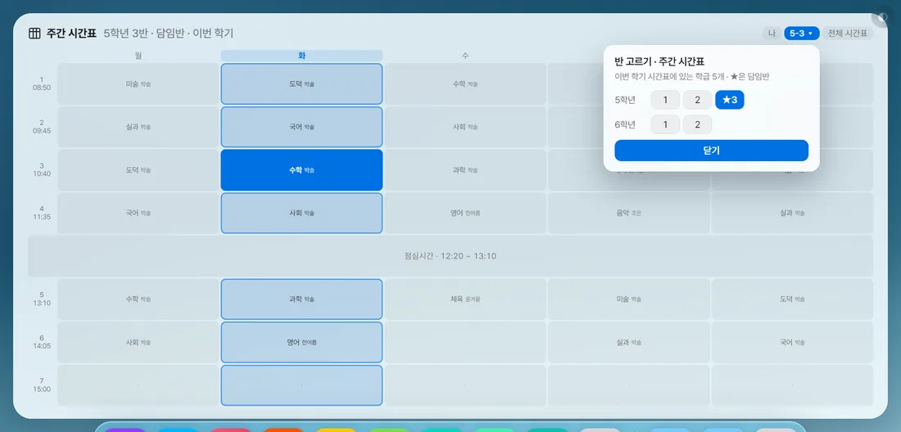
학반 시간표 — 제목 옆 [나 | 학반] v3.34~
주간 시간표 제목 옆 [학반] · 한 번 더 누르면 반 고르기- 주간 시간표 제목 옆 [학반]을 누르면 한 반의 한 주가 같은 격자로 섭니다
- 다른 반을 보려면 [학반]을 한 번 더 → 「반 고르기」 창에서 학년별 반 단추를 누릅니다(★이 담임반)
- 고른 반이 단추에 「2-3 ▾」로 적힙니다. 내 시간표로 돌아올 때는 [나]
- 처음 보이는 반 — 전에 고른 반 → 없으면 설정 [학교]의 담임반 → 그것도 없으면 목록 첫 반. 제목 옆에 「2학년 3반 · 담임반 · 이번 학기」
- 칸마다 과목 옆에 선생님 이름이 작게 붙습니다 — [전체 시간표] → 과목별에서 적어 둔 이름입니다
- 🔴 남의 반 칸은 눌러도 고쳐지지 않습니다(읽기 전용)
- 자료가 없을 때 — 학교 미등록 「설정 [학교]를 등록하면…」 / 받는 중 「학기 시간표를 받는 중…」 / 실패 「받지 못했습니다」 + [다시 받기] / 컴시간인데 아직 안 받음 + [설정 열기]([학교] 탭이 열리면 [지금 가져오기])
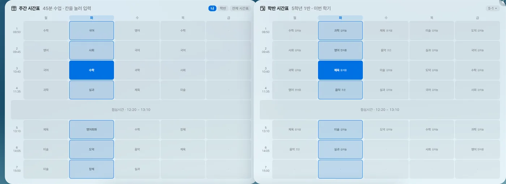
학반 시간표 카드 — 내 시간표와 나란히 기본 꺼짐
설정 [위젯] → 학반 시간표 켜기 → [직접 배치로 두기]- 설정 [위젯] → 학반 시간표 스위치를 켭니다
- 화면 아래 알림의 [직접 배치로 두기]를 누릅니다(배치표에 자리가 없는 카드라 꼭 필요합니다)
- 카드 제목 옆 「2-3 ▾」를 눌러 반을 고릅니다 — 학기 시간표를 다 받은 뒤에 이 단추가 생깁니다
주간 시간표 쪽 [학반]과 따로 기억합니다 — 담임반을 늘 곁에 두거나, 자주 들어가는 반을 옆에 세워 두실 때 쓰세요.

오늘 시간표 — 오늘 하루만 세로로 크게 기본 꺼짐
설정 [위젯] → 오늘 시간표 켜기제목 「오늘」 옆에 「9월 12일 토요일」, 줄마다 「교시 · 시작 시각 | 과목 | ~끝 시각」, 점심 줄은 「점심시간 · 12:10 ~ 13:00」.
- 칸을 누르면 적기, 우클릭하면 색칠 — 주간 시간표와 같은 자료라 한쪽에 적으면 다른 쪽도 바뀝니다
- 제목 옆 [전체]로 전체 시간표 창이 열립니다
- 오늘 요일의 시정(요일별로 따로 적은 시정 포함)을 씁니다. 자정이 지나면 저절로 다음 날로
- 토·일 칸을 안 켰으면 주말엔 「오늘은 수업이 없어요」
- 배치표에서 주간 시간표와 같은 칸을 씁니다 — 둘 다 켜면 한 칸 안에서 나눠 섭니다

전체 시간표 — 과목별 · 특별실 겹침 찾기
주간 시간표 제목 옆 [전체 시간표] (또는 오늘 시간표의 [전체]) → [과목별]창 위쪽에 탭 [과목별] [교사별] [학급별(오늘)]과 [↻ 새로고침]. 날짜 줄에 「2026년 2학기 · N일치」가 뜹니다. 학기 전체를 받아 요일·교시마다 가장 자주 하는 과목으로 그리므로 휴업일이 껴도 표가 흔들리지 않아요(1학기 3/1~8/15, 2학기 8/16~2월 말).
- 위의 과목 칩을 누릅니다. 여러 개를 눌러 겹쳐 볼 수 있어요(하나는 꼭 남습니다)
- 같은 시간에 두 반 이상이 겹치면 칸이 빨갛게 되고, 아래에 「같은 시간에 ○○ 수업이 겹칩니다 — N곳」 목록이 나옵니다 — 체육＋스포츠클럽(강당), 과학＋정보(특별실)처럼 같은 장소를 쓰는 과목을 함께 고르세요
- 아래 「교사 지정」에서 반마다 교사 이름을 한 번 적습니다(나이스는 교사 이름을 주지 않습니다)
- 요일마다 담당이 다르면 표의 그 칸만 눌러 이름을 적고 [이 칸만 저장] — 반 기본으로 돌리려면 [반 기본값으로]. 바꾼 칸은 주황 ✎
점선 칸은 학기 중 자주 바뀐 칸입니다(4주 중 3주도 같지 않았던 칸).

전체 시간표 — 교사별로 내 시간표 한 번에 채우기 · 학급별(오늘)
[전체 시간표] → [교사별] / [학급별(오늘)]- [과목별]에서 교사 이름을 적어 두었는지 확인합니다(안 적었으면 교사별이 「아직 교사 이름을 적지 않았습니다」로 비어 있어요)
- [교사별] 탭 → 표에서 내 이름을 누르면 윗줄이 「나의 시간표 — ○○○」로 바뀝니다
- [주간 시간표로 가져오기] → 「지금 주간 시간표에 적힌 N칸을 지우고, ○○ 선생님의 M칸으로 바꿉니다」 → [바꾸기]
- 마음에 안 들면 6초 안에 [되돌리기] — 🔴 가져오기는 주간 시간표를 통째로 바꿉니다
학급별(오늘)은 오늘 하루 기준이라 휴업·행사가 반영된 그날 시간표입니다(학년 탭). 키 없이 일부만 받았으면 「전체 N개 학급 중 M개만 불러왔습니다」와 [학교 탭 열기]가 뜹니다.
6-2진도(수업 기록) 기본 꺼짐
수업이 끝나면 그 줄을 한 번 누르기만 하면 됩니다. 반을 고를 필요도, 차시를 셀 필요도 없어요 — 시간표에서 반을 찾고, 차시는 「지난 시간 + 1」로 저절로 이어집니다. 가장 많이 여쭤보시는 카드라 처음 준비 → 매일 쓰기 → 밀리고 당겨질 때 → 큰 창 → 월간 순서로 적었습니다.
처음 한 번 — 준비 세 가지
설정 [위젯] → 진도(수업 기록) 켜기- 카드 켜기 — 설정 [위젯] → 「진도(수업 기록)」 스위치. 배치가 「와이드」면 자리가 없으니 [직접 배치로 두기]
- 주간 시간표 칸에 반 적기 — 진도는 시간표 글자에서 반을 찾습니다. 「1-3」 「1-3 체육」 「1학년 3반 체육」처럼. 과목까지 적으면 같은 반의 체육·스포츠클럽을 따로 셉니다(반 이름이 「1-3 체육」이 되고, 학년 탭도 「1학년 체육」)
- 학기 중간에 시작한다면 시작 차시 정하기 — 적기 전에 먼저: 카드 [전체] → 격자 머리글의 반 이름 누르기 → [시작 차시] → 「지금까지 몇 차시를 나갔나요?」에 숫자(예: 12) → [정하기]. 다음 수업이 13차시로 잡힙니다. 반마다 한 번씩(이미 적은 기록이 있는 반은 받지 않으니, 그때는 첫 기록 칸을 눌러 [+]로 맞추세요)
- 평일(월~금)만 셉니다 — 시간표에 토·일 칸을 켜도 진도에는 안 나옵니다
- 반 표기가 없는 칸(「자율」 「국어」)은 글자 그대로 반 이름이 되어 학년 탭 「기타」에 모입니다. 초등 담임처럼 과목만 적는 시간표라면 과목끼리 차시 내용이 섞이지 않게, 처음 적을 때 [○○만]을 골라 주세요
- 괄호 안은 버립니다 — 「1-3(체육관)」은 「1-3」

매일 쓰기 — 수업 끝나고 한 번 누르기
진도 카드의 줄 (큰 창 격자 칸 · 월간 줄도 똑같이)카드에는 오늘 들어가는 수업이 교시 순서로 섭니다. 줄마다 「3교시 · 반 · 차시 · 내용」, 제목 오른쪽에 「2/4 적음」. 아직 안 적은 줄에도 할 차례의 차시와 계획해 둔 내용이 흐리게 미리 보입니다.
- 수업이 끝나면 그 줄을 한 번 누릅니다
- 그 차시 내용이 이미 적혀 있으면 → 창 없이 바로 적히고 「1-3 5차시 — 배구 서브」 알림 + [되돌리기](4초)
- 내용이 비어 있으면 → 「5차시에 무엇을 하셨어요?」 창이 한 번 뜹니다. 내용(40자)을 적고 아래에서 고릅니다 — [1학년 모두](기본, 1학년 모든 반이 함께 쓰는 내용) / [1-3만](이 반만 다르게) → [적기]
- [취소]·Esc·창 바깥을 누르면 아무것도 적히지 않습니다. 내용을 비운 채 [적기]를 누르면 기록은 되고, 다음에 같은 차시에서 다시 묻습니다
- 🔴 수업 내용은 학년이 함께 씁니다 — 「1학년 4차시 = 배구 서브」를 한 번 적으면 1반이 하든 3반이 다음 주에 하든 같은 내용이 보입니다
- 지난 날 안 적은 줄은 「안 적음」으로 남고 차시를 세지 않습니다 — 나중에 눌러 채우면 됩니다
- 출장·연수로 못 적은 날 — 제목 옆 왼쪽 화살표로 하루씩 거슬러 가서 누르세요. 다른 날을 보는 동안 제목에 날짜가 파랗게 뜨고, [오늘]로 돌아옵니다(앱을 다시 켜도 오늘로)
- 그 칸에 다른 반 기록이 있으면(요일을 바꾼 날·시간표를 고친 뒤) 「이 칸에는 «1-4» 기록이 있습니다 … 한 칸에는 한 반만 남길 수 있어요」 → [그래도 적기] / [취소]
적은 칸 고치기 — 차시 · 휴강 · 내용 · 메모
이미 적힌 줄(칸)을 한 번 더 누르기창 위에 「1-3 9/12(금) 3교시」와 「지난 시간 4차시 · 09/10」. 그 아래 [−] 5차시 [+] [휴강], 파란 상자(차시 내용 + [1학년 모두]/[1-3만]), 메모 칸(「이 반만의 한 줄 (예: 비 · 이론)」, 60자), 맨 아래 [지우기] [저장].
- 필요한 것만 바꿉니다 — 차시는 [−]/[+](1~200), 내용은 파란 상자, 그 반만의 사정은 메모
- [저장](입력칸에서 Enter도 됨) → 알림 + [되돌리기] 4초
- 🔴 파란 상자 내용을 고치면 [1학년 모두] 상태에서는 그 학년 모든 반의 그 차시 내용이 함께 바뀝니다. 이 반만 바꾸려면 [1-3만]을 누른 뒤 고치세요
- [−]/[+]를 누르면 내용 칸도 그 차시 내용으로 바뀌고, 휴강이 풀립니다
- [휴강]을 켜면 내용 상자가 흐려져 잠기고 메모만 남습니다
- [지우기]는 묻지 않고 지웁니다 — 잘못 눌렀으면 4초 안에 [되돌리기]
- 메모는 처음 누를 때는 받지 않습니다 — 적고 나서 한 번 더 눌러 다세요. 카드 내용 뒤 「· 메모」, 격자 칸 아래 작은 글씨로 보입니다
진도가 밀렸을 때 · 당겨졌을 때 · 중간에 한 시간이 끼었을 때
적힌 칸을 눌러 여는 창 · 큰 창 오른쪽 차시 목록원리 하나만 — 다음 차시 = 그 반이 실제로 나간 마지막 기록 + 1. 휴강과 지난 날 안 적은 칸은 세지 않고, 손으로 고친 번호 뒤부터는 그 번호로 이어 셉니다.
① 수업을 아예 못 했다 (행사·시험·결강) → 휴강
- 못 한 칸을 누릅니다(내용을 묻는 창이 뜨면 그냥 [적기])
- 그 칸을 한 번 더 눌러 창을 열고 [휴강] → [저장]
- 아직 안 적은 뒤 칸들이 한 차시씩 밀려 보입니다. 사유는 메모에(「비 · 이론」)
② 한 차시 더 나갔다 / 덜 나갔다 → 번호 고치기
- 적힌 칸을 누르고 [+] 또는 [−]로 번호를 맞춥니다
- [저장] — 다음 시간부터 그 번호 + 1로 이어집니다(지난 기록은 안 바뀝니다)
③ 계획에 없던 수업을 한 시간 했고, 그것도 차시로 세고 싶다 → 여기에 끼우기
- 카드 [전체] → 오른쪽 「차시별 수업 내용」에서 끼울 자리의 차시 줄을 누릅니다
- 새 내용을 적고 [여기에 끼우기]를 고른 뒤 [저장]
- 「5차시를 끼웠습니다 — 뒤 3개가 하나씩 밀렸습니다」 + [되돌리기] 6초
- [여기에 끼우기] 갈래는 그 차시 뒤에 적어 둔 내용이 있을 때만 보입니다(없으면 그냥 적으면 되니까요)
- 이미 그 차시를 지난 반은 원래 차례대로 가고, 그 반 목록은 따로 굳어져 뒤 차시에 「N개 반 따로」 딱지가 줄줄이 붙습니다 — 고장이 아닙니다
- 🔴 앞날 칸을 미리 적어 두셨다면 그 칸들은 번호가 고정돼 휴강·번호 고치기를 따라오지 않습니다 — 칸을 눌러 [지우기]로 비워 두면 수업 뒤 누를 때 순서대로 이어집니다
- 출장으로 빠뜨린 지난 날을 나중에 채웠다면, 채운 뒤 격자에서 뒤 칸 번호가 겹치지 않는지 한 번 봐 주세요

학년 진도표(큰 창) — 반마다 몇 차시까지 나갔나
진도 카드 제목 옆 [전체] — 큰 창의 입구는 여기 하나뿐입니다제목 줄: 「진도 · 9/8 ~ 12」 · 학년 탭 · [왼쪽·오른쪽 화살표] [오늘](주 단위) · [월간 보기] · [📖 안내문에서 채우기](채울 칸이 있을 때만) · [⤓ 파일로] · ✕. 처음엔 오늘 시간표에 수업이 있는 학년이 열립니다.
- 왼쪽 격자 — 세로 월~금 × 가로 반. 머리글에 반 이름과 「5차시」(또는 「시작 전」)
- 칸 모양 — 적은 칸: 차시(크게)·교시(작게)·내용·메모 / 휴강: 회색 / 오늘·앞날 안 적은 칸: 점선 + 흐린 예상 차시 / 지난 날 안 적은 칸: 주황 점선 「안 적음」 / 빌린 시간: 점선 + 「빌림」 / 그 반 수업 없는 칸: 빗금
- 비고 칸(맨 오른쪽)에 그날 학사일정이 두 개까지 저절로 적힙니다
- 칸을 누르면 카드와 똑같이 적기·고치기. 앞날 점선 칸을 누르면 미리 적기가 됩니다(번호가 그때 고정됨 — 위 상자 참고)
- 오른쪽 「차시별 수업 내용」 — 1차시부터 이어진 계획 목록. 줄에는 내용(비면 「+ 적기」), 지금 그 차시에 있는 반 이름 딱지, 보라색 「N개 반 따로」가 붙습니다. 창이 좁으면 격자 아래로 내려갑니다
차시 목록 고치기
- 오른쪽 목록에서 차시 줄을 누릅니다 → 「5차시 수업 내용」 창(40자, 비우면 지움)
- [이 차시 고치기](뒤 차시는 그대로) 또는 [여기에 끼우기] 중 고르고 [저장]
- ⚠️ [이 차시 고치기]에는 되돌리기 알림이 없습니다 — 고치기 전에 한 번 보세요
- 보라색 「N개 반 따로」는 그 차시 내용을 따로 가진 반의 개수입니다(반 번호가 아닙니다). 마우스를 올리면 「1-3 · 1-5는 이 차시를 따로 적어 두었습니다」. 다시 학년 내용을 따르게 하려면 그 반의 바로 그 차시로 적힌 칸을 눌러 [1학년 모두] → [저장] — 다른 차시 칸에서 [−]/[+]로 맞추면 기록 번호가 바뀌니 조심하세요
이날 수업 없음(9모·축제) · 「이 날은 ○요일 시간표로」(시수 맞추기)
진도 큰 창 주간 격자의 왼쪽 날짜 칸(「9/12 금」) 누르기날짜 칸을 누르면 「9월 12일 (금)」 창에 [수업 없음] [월] [화] [수] [목] [금] 단추와 [적용] [취소]가 나옵니다(요일을 바꾼 날엔 [원래대로]가 더 붙어요). ⚠️ 월간 보기에서 날짜를 누르면 이 창이 아니라 그 주 격자로 갑니다.
하루 통째로 수업이 없는 날
- 날짜 칸 → [수업 없음](처음부터 골라져 있음) → [적용]
- 「이날 수업 없음 — 4교시 휴강으로 적었습니다. 다음 차시는 저절로 이어집니다」 + [되돌리기] 6초. 날짜 밑에 「없음」
- 이미 마친 칸·손으로 찍은 휴강·다른 반 기록은 건드리지 않고 알림 끝에 적어 드립니다
- 풀기 — 같은 날짜 → [수업 없음] → [적용] → 「이날 수업 없음을 풀었습니다」. 그날 빈 칸이 남아 있으면 풀지 않고 그 칸을 휴강으로 채우고, 손으로 찍은 휴강은 하나씩 풀어야 합니다
월요일인데 목요일 수업을 하는 날
- 날짜 칸 → [목] → [적용] → 「9/12을 목요일 시간표로 봅니다」 + [되돌리기] 5초
- 날짜 밑에 「목」 딱지가 붙고, 그날 칸이 목요일 수업으로 바뀝니다
- 되돌릴 때 — 같은 날짜 → [원래대로] → [적용]
- 시간표 자료는 바뀌지 않습니다 — 그날만 목요일 것으로 「봅니다」. 진도 카드·격자·월간, 지금 이 시간, 오늘의 비서, 안내문에서 채우기가 함께 따라갑니다
- 그날 이미 적어 둔 칸의 반이 달라지면 「이 날 적어 둔 2칸이 표에서 사라집니다」라고 먼저 묻습니다 — 지워지는 게 아니라 안 보일 뿐이고(반 이름을 눌러 펼치면 남아 있음), 되돌리면 다시 보입니다 → [그래도 바꾸기] / [취소]
- 고를 수 있는 요일은 월~금뿐입니다
빌린 시간 [+] — 시간표에 없는 교시에 수업한 날
진도 큰 창 주간 격자 → 그 날짜 줄 맨 오른쪽 「비고」 칸의 작은 [+]- 그 날짜 줄 오른쪽 끝 [+](풍선말 「이날 수업 추가 — 다른 시간을 빌려 수업할 때」)
- 「몇 교시에 수업을 넣을까요?」 → 교시 단추(시간표 수업이 없는 교시만 나옵니다) → [다음]
- 보고 있는 학년 탭에 반이 둘 이상이면 「어느 반 수업인가요?」 → 반 단추 → [넣기]
- 곧바로 마친 수업으로 적힙니다 — 「9/12(금) 5교시에 1-3 6차시를 넣었습니다 (빌린 시간)」. 격자에 「5교시 · 빌림」
- [+]는 빈자리를 만드는 게 아니라 차시를 하나 먹는 기록입니다. 없애려면 그 칸을 눌러 [지우기]
- 고를 수 있는 반은 지금 보고 있는 학년 탭의 반뿐이니, 먼저 학년 탭을 맞추세요
반 이름 눌러 펼치기 — 한 반의 기록을 차시순으로
큰 창 격자 머리글의 반 이름(「1-3」)- 머리에 [전체로](왼쪽 화살표) · 「1-3」 · 「지금 5차시」 · [시작 차시]. 아래로 기록이 날짜순(「5 | 09/12(금) 3교시 | 배구 서브 | 메모」), 휴강은 「― … 휴강」, 그 아래 아직 안 한 차시가 흐리게 이어집니다
- 줄을 누르면 고치기·지우기 창이 열립니다. 🔴 시간표를 고쳐 격자에서 사라진 칸의 옛 기록은 여기서만 지울 수 있어요 — 남겨 두면 다음 차시 번호를 밀어 올립니다
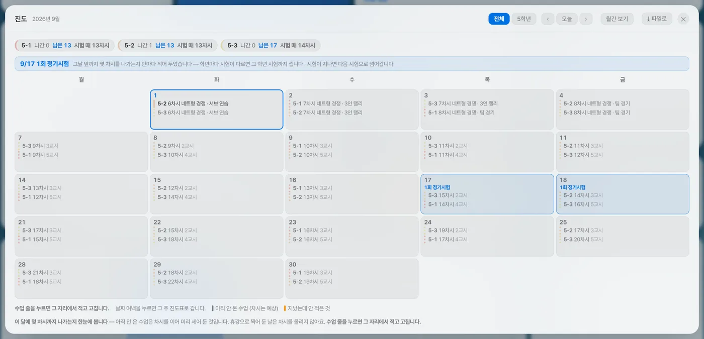
월간 보기 — 시험 전까지 몇 차시 나가나 v3.34~
진도 큰 창 제목 줄 [월간 보기] · 다시 누르면 주간으로- [월간 보기]를 누르면 보고 있던 주의 달이 학년 탭 [전체]로 열립니다
- 좌우 화살표로 달을 넘기고, 반이 많으면 학년 탭으로 거릅니다
- 맨 위 칩에서 반마다 숫자를 봅니다 · 수업 줄을 눌러 그 자리에서 적고 고칩니다 · 날짜 여백을 누르면 그 주 격자로
- 칩 「1-3 나간 8 남은 12 안 적음 2 휴강 1 시험 때 14차시」 — 🔴 나간·남은은 차시 번호가 아니라 이 달의 수업 시간 수입니다(남은 = 오늘 포함 말일까지 안 적은 수업)
- 시험 때 N차시 = 지금 차시 + 오늘부터 시험 전날까지 안 적은 수업 수(방학·휴업일 뺌). 마우스를 올리면 「9/30 중간고사 전까지」
- 시험이 지나면 다음 시험으로 넘어갑니다(이번 학기 안 · 3~8월은 8/31까지, 9~2월은 2월 말까지). 지난 달을 보면 그 달 첫 시험이 뜨지만 숫자는 지금 차시입니다
- 「3학년 2회 정기시험」처럼 학년이 붙은 시험은 그 학년 반만 셉니다(「1·2학년」 「1~3학년」 「3학년 제외」도 읽음). 학년마다 시험이 다르면 머리에 나란히 뜹니다
- 달력 칸 — 시험 날은 테마색 테두리, 수업 줄은 적음 「1-3 5차시 배구 서브」 / 휴강(취소선) / 지난 날 안 적음(주황) / 앞날(점선·흐림, 차시는 예상). 토·일 칸은 없습니다
- 시험으로 잡히는 이름 — 중간 · 기말 · 지필 · 정기시험 · 정기고사 · ○회 고사 · 고사기간. 모의 · 학력평가 · 수행평가 · 진단 · 졸업이 들어가면 일부러 뺍니다. 학교가 등록돼 있어야 하고, 이번 학기 학사일정은 앱을 켤 때 따로 받아 둡니다
진도표 파일로 저장 · 안내문에서 채우기
진도 큰 창 제목 줄 [⤓ 파일로] · [📖 안내문에서 채우기][⤓ 파일로] — PDF · 한글
- [⤓ 파일로] → 「진도표를 어떤 파일로 저장할까요?」 → [PDF] 또는 [한글(hwpx)] → [저장]
- 저장 창에서 위치를 고릅니다(기본 「문서」 폴더, 「진도표_날짜」)
- 모든 학년·반이 한 파일에(반은 가나다순, 반 안에서는 차시순) — 표 「차시 | 날짜 | 교시 | 수업 내용」, 메모가 있는 반만 「메모」 열. 휴강은 빠집니다. 엑셀로는 저장하지 않습니다
[📖 안내문에서 채우기] — 초등 주간학습안내를 진도로
- 단추가 보이는 조건 — ① 주간학습안내 카드에 이번 주 안내문을 올리고 AI로 읽어 둠 ② 설정 [시간표] 「주간학습안내 내용 함께 보기」 켜짐 ③ 이번 주 월요일~오늘 사이에 비어 있고 과목이 같은 칸이 있음. 하나라도 어긋나면 단추가 안 보입니다
- 누르면 「주간학습안내에서 5칸을 채울까요?」에 미리보기(8줄까지)와 「이미 적어 두신 칸과 차시 내용은 건드리지 않습니다」 → [채우기] → [되돌리기] 7초
6-3달력 — 일정 · 알림 · 초과근무
학사일정 · 내 일정 · 구글 캘린더 · 할 일 마감 · 초과근무를 한 장에 겹쳐 봅니다. 새로 적는 것은 모두 날짜를 눌러 뜨는 창에서 합니다.

달력 카드 읽기
좌우 화살표 · [오늘]로 달 넘기기 · 날짜 클릭 → 날짜 창 · 제목 옆 작은 ⚙ → 달력에 띄울 것- 일요일부터 시작합니다(토 파랑·일 빨강). 오늘은 날짜에 동그라미. 달을 넘기면 그 달 학사일정·구글 일정을 새로 받습니다
- 칸 안 모양은 캘린더 크기에 따라 — 「작게」는 점만(3개까지), 「보통」부터 글자 칩. 칸에 다 안 들어가면 「+N」으로 접히고(달력 ⚙ 「일정이 칸에 넘칠 때」에서 [글자 줄여 다 넣기]를 고르면 글자를 줄여 넣어 봅니다), 아주 좁은 칸은 점으로 돌아갑니다. 크기는 설정 [디자인] → 캘린더 크기
- 칩 색(기본) — 내 일정·학사일정·구글은 같은 테마색, 할 일은 주황(끝낸 것은 회색 줄), 중요·방학·휴업·공휴·졸업·입학은 빨강. 갈래마다 색을 나누려면 ⚙에서 고르세요(아래)
- 초과근무를 적은 날은 칸 오른쪽 위에 「4h」, 제목 옆에 「초과 4시간 30분」(그 달 합계)
- 그 날 일정을 목록으로 — 「+N」으로 접힌 칸에 마우스를 올리면 칸 옆 풍선에 그 날 것이 전부 뜹니다(끝낸 것은 줄 그어 아래 · 초과근무도). 접히지 않은 칸은 빈 곳에 1초쯤 올리면 목록, 내가 적은 칩 바로 위에 올리면 그 칩 한 줄만 뜹니다
칸의 칩을 바로 누르기 (보통 크기 이상)
- 내 일정·할 일 칩을 누르면 끝낸 표시(줄 긋기·체크) — 잠깐 뒤 끝낸 것은 칸의 뒤쪽으로 갑니다. 다시 누르면 되돌리기
- 칩에 우클릭 → 「지울까요?」 → [지우기] + [되돌리기] 4초
- 학사일정·구글 칩을 누르면 그냥 그 날 창이 열립니다

날짜를 누르면 뜨는 창 — 일정 적기
달력에서 날짜 칸 클릭 → 아래 탭 [일정] [할 일] [초과]위에는 그 날 목록, 아래에는 새로 적는 칸이 있습니다. 창이 닫히지 않아 여러 개를 이어 적을 수 있어요(Esc로 닫기).
[일정] 탭 — 내 일정 적기
- (필요하면) ⏰ 시각 칸에 시각을 넣고 알림 [안 함][정각][5분 전][10분 전][30분 전] 중 고르기
- (필요하면) [중요] — 달력에 빨갛게
- 「일정 입력 후 Enter」 칸에 이름을 적고
- (여러 날이면) 입력칸 아래 「여러 날 이어지는 일정인가요?」 — [1박2일] [2박3일] [5일] [1주일] 또는 「09/12부터 [날짜] 까지」에서 끝날 고르기
- Enter 또는 [추가]
- 🔴 넣고 나면 시각·알림은 비워지지만 [중요]와 기간 날짜는 그대로 남습니다 — 다음 일정을 적기 전에 풀어 주세요(기간은 날짜 옆 ✕ 「하루짜리로 되돌리기」)
- 여러 날 일정은 이어지는 날에 「09/12부터」로 보이고, 고치기·지우기는 시작한 날에서만 됩니다
[할 일] 탭
「이 날짜가 마감인 할 일」을 적고 (분류가 있으면) 분류를 고른 뒤 [추가]. 이 창에서는 고른 분류가 이어 적을 때도 남습니다. 반복은 여기서 못 정합니다(할 일 카드의 추가 창에서).
[초과] 탭 — 초과근무
- 빠른 단추 [30분] [1h] [2h] [4h] [지움] — 누르는 즉시 그 날 값으로 덮어써 저장됩니다
- 직접 적기 — 「[ ] 시간 [ ] 분」(1분 단위, 최대 24시간) + 「무슨 일이었는지 (선택)」(40자) → [저장]. Enter는 시간 칸에서만 먹습니다
- 🔴 사유를 적었다면 [저장]으로 저장하세요 — 사유를 적다가 빠른 단추를 누르면 적던 사유가 사라집니다
- 그 달 합계는 「이 달 합계 N」으로 창에, 제목 옆에 저절로 쌓입니다
날짜 창 목록 — 고치기 · 지우기 · 알림 붙이기
날짜 창 위쪽 목록의 줄 끝 단추 (줄에 마우스를 올리면 또렷해짐)- 내 일정 — ▲▼(그 날 안에서 순서) · ⏰(알림) · 🎨(색·크기·굵기) · ✎(고치기) · ✕
- 할 일(그 날 마감) — ▲▼ · +분류 · 🎨 · ✎ · ✕
- 학사일정 — 🎨 · ✎ · ✕ / 구글 캘린더 — 단추 없음(읽기만) / 초과근무 — ✕
- 달력 ⚙에서 꺼 둔 갈래도 이 창에는 다 보입니다
- 창은 화면 크기에 맞춰 넓어지고, 긴 일정도 «…» 없이 줄을 바꿔 다 보입니다
- 할 일·내 일정 글자를 누르면 줄이 그어지고(끝낸 표시) 잠깐 뒤 목록 맨 아래로 내려갑니다 — 다시 누르면 되돌리기. 적던 글자·고른 기간은 그대로 남습니다
- 일정 고치기 — 줄 끝 ✎ → 「일정 고치기」에서 날짜·이름(80자) → [저장]. 날짜를 바꾸면 그 날로 옮겨 갑니다. ⚠️ 기간의 끝날과 [중요]는 여기서 못 고칩니다(지우고 다시 적기)
- 할 일 고치기 — ✎ → 내용(200자)·마감일(비우면 마감 없음) → [저장]
- 이미 적은 일정에 알림 붙이기 — 그 줄의 ⏰(흐리면 알림 없음) → 작은 창에서 시각·알림 고르기 → 누르는 즉시 저장
- 카드에서 우클릭으로 지우면 「지울까요?」를 묻습니다
- 날짜 창의 ✕와 고치기 창의 [삭제]는 묻지 않고 바로 지웁니다 — 대신 4초 동안 [되돌리기]가 뜹니다
알림이 울리는 규칙
- 기본은 「안 함」 — 고른 일정만 울립니다. 시각을 지우면 알림도 꺼집니다
- 🔴 앱이 켜져 있어야 울립니다. 오래 꺼져 있던 사이의 알림은 버립니다(3분 안쪽만 따라잡음)
- 윈도우 알림으로 뜨고 누를 때까지 남습니다 — [열기](앱을 앞으로) / [닫기]. 윈도우 「집중 지원」이 켜져 있으면 안 뜰 수 있어요
- 여러 날 일정은 시작한 날에만, 이미 지난 시각은 「이 시각은 이미 지났습니다」라고 알려 드립니다
- 알림은 내 일정에만 — 학사일정·구글 일정·할 일 마감에는 알림이 없습니다

달력 ⚙ — 무엇을 어떻게 띄울지
달력 제목(「2026년 9월」) 오른쪽의 아주 작은 ⚙ — 다시 누르면 닫힘가장 못 찾으시는 단추입니다. 누르는 즉시 적용됩니다.
- 달력에 띄울 것 — [학사일정] [내 일정] [구글 캘린더] [할 일 마감] [초과근무](기본 모두 켬). 앞 넷은 옆의 색 동그라미로 갈래 색을 고릅니다 — 일정마다 🎨로 정한 색 > 구글 캘린더별 색 > 갈래 색 순으로 앞섭니다
- 보여줄 요일 — [월~일] [월~금](토·일 칸을 아예 뺌)
- 주말 칸 바탕색 — [칠하기] [안 칠하기](기본 칠하기)
- 글자 크기 — [보통] [크게] [아주 크게](설정 [디자인]과 같은 값)
- 일정이 칸에 넘칠 때 — [+N으로 접기](기본 · 접힌 칸에 마우스를 올리면 풍선으로 전부) · [글자 줄여 다 넣기](넘치는 칸만 글자를 줄여 한 칸에 — 그래도 안 들어가면 +N으로 접힘)
- 이 달 초과근무 합계 — [제목 옆] [달력 아래] [안 보임]
- 구글 캘린더(붙인 캘린더가 있을 때만) — [지금 새로 받기] · [아침·점심 자동]/[수동으로만] · 「마지막으로 받은 때」. 자동은 아침 8시·낮 1시(지나서 켜도 켤 때 따라잡음)
구글 일정은 달력 칸에서 내 일정과 같은 색으로 보입니다 — 갈라 보려면 여기서 [구글 캘린더] 색을 정하거나, 설정 [학교]의 캘린더별 색 점을 고르세요. 붙이는 법은 03번 구글 캘린더.
6-4할 일 — 마감 · 반복 · 분류

할 일 새로 적기
할 일 카드의 빈 곳 클릭 (비어 있으면 「여기를 눌러 할 일을 추가하세요」)- 카드 빈 곳을 누르면 「할 일 추가」 창이 뜹니다
- 「무엇을 해야 하나요?」에 내용
- (선택) 마감일 — 8/14 · 8.14 · 8-14 · 2026-08-14 모두 됩니다(월/일만 적으면 올해). 비워도 됩니다
- (선택) 반복 [안 함][매일][매주][매월] · 분류 [없음][수업][담임]…
- [추가] 또는 아무 칸에서 Enter → 창이 닫힙니다
- 창을 다시 열면 분류·반복은 [없음]/[안 함]으로 돌아갑니다. 같은 분류로 여러 개를 이어 적으려면 [전체] 창 아래 입력칸(여러 줄 한꺼번에)이나 달력 날짜 창 [할 일] 탭이 편합니다
- 마감일 형식이 틀리면 「마감일은 8/14 또는 2026-08-14 형식으로 적어주세요」

할 일 카드 쓰기
줄 클릭 → 완료 · 줄 우클릭 → 지우기 · 줄 끝 ▲▼ 🎨- 완료 — 줄을 한 번 누르면 체크·줄 긋기, 곧 아래로 내려갑니다. 다시 누르면 해제
- 순서 — 안 끝낸 것 위 → 마감 가까운 순 → 마감 없는 것 뒤. 제목 옆 「N개 남음」
- 마감 배지 「오늘」 / 「08/14(목)」 — 요일은 설정 [위젯]에서 끌 수 있어요. 좁은 카드에서는 분류가 색 점으로, 마감이 풍선말로 접힙니다
- ▲▼로 손수 순서 — 처음 누르면 제목 옆이 「✋ 내 순서」로 바뀌고 알림에 [마감순으로 되돌리기]. 나중에 그 배지를 누르면 마감순으로 돌아갑니다(끝낸 것은 늘 아래)
- 지우기 — 우클릭 → 「지울까요?」 → [지우기] + [되돌리기] 4초. 지운 것은 [전체] 창 「지난 기록」에 남습니다
- 마감일이 있으면 달력에도 주황 칩으로 뜹니다(달력 ⚙ 「할 일 마감」) — 같은 자료라 어느 쪽에서 고쳐도 같이 바뀝니다
반복 할 일
- 반복 줄을 누르면 끝나지 않고 마감일이 다음 회차로 넘어갑니다 — 「다음 날로 넘겼습니다 — 09/13」. 줄에 ↻ 표시
- 마감을 비우고 반복을 정하면 오늘이 첫 마감. 매월 31일은 그 달 말일로 맞춥니다. 지난 마감이면 오늘 뒤 첫 회차로 건너뜁니다
- 🔴 한 번 정한 반복은 나중에 바꾸거나 끌 수 없습니다 — 바꾸려면 지우고 다시 적어 주세요
분류 붙이기
- 붙이는 곳 셋 — 추가 창 [분류] 줄 · [전체] 창 줄 끝 ✎ · 달력 날짜 창 할 일 줄의 +분류
- 이름·색 바꾸기·추가(12개까지)는 설정 [위젯] 탭 → 할 일 분류
6-5학사일정

학사일정 카드
제목 옆 ＋ → 추가 · 줄 클릭 → 고치기 · 우클릭 → 지우기(숨기기)나이스에서 받은 학교 일정 + 내가 ＋로 넣은 일정 + 달력에 적은 내 일정(📌)을 한 줄로 모읍니다. 오늘 이후 것만 보이고, 지난 것이 있으면 제목 옆 「지난 것 N」.
일정 넣기
- 제목 옆 ＋(평소엔 흐리고 카드에 마우스를 올리면 또렷)
- 날짜(기본 오늘) · 「일정 이름」(40자) → [추가]
- ＋로 넣으면 「학사일정」으로 들어가서 시각·알림·여러 날 기간·중요 표시가 없습니다
- 알림이나 기간이 필요하면 달력에서 날짜를 눌러 「내 일정」으로 적으세요
고치기 · 지우기
- 줄을 누르면 「일정 고치기」 — 날짜·이름 → [저장]. 🔴 나이스 일정도 내 화면에서만 고칠 수 있습니다(「학교가 올린 일정입니다 — 내 화면에서만 바뀝니다」) — 새로 받아도 되살아나지 않고, 줄 끝에 ✎ 표시가 붙습니다
- 📌 줄(달력에 적은 것)을 누르면 달력이 그 달로 넘어가고 그 날 창이 열립니다
- 우클릭 → 확인 → [지우기] — 나이스 일정은 내 화면에서만 숨기고, 직접 넣은 것·달력 일정은 정말 지웁니다. 고치기 창의 [삭제]는 묻지 않고 지웁니다(되돌리기만)
- 줄에 마우스 → 🎨 색·크기(나이스 일정도 꾸밀 수 있고 새로 받아도 색이 남습니다)
- 이름에 방학·휴업·휴일·공휴·졸업·입학이 들어가면 달력에서 빨갛게
- 지난 일정까지 — 제목 옆 [전체](아래 6-14). 나이스 일정은 받아 둔 범위(보고 있는 달의 전달~다음 달)만 나옵니다
- 나이스에 빠진 일정은 설정 [학교] → [📥 학사일정표 파일에서 불러오기]로 채우고, 파일에서 넣은 것을 한꺼번에 지울 때는 [직접 넣은 일정 지우기]
- 비어 있을 때 — 학교 등록 전 「학교를 등록하면 자동 표시됩니다」 / 등록 뒤 「예정된 일정이 없습니다 · 학교가 NEIS에 올린 일정만 나옵니다」
6-6D-Day

D-Day 카드
카드 빈 곳 클릭 → 추가 · 줄 우클릭 → 지우기- 카드 빈 곳을 누르면 「D-Day 추가」
- 「무슨 날인가요? (예: 개학일)」 · 날짜 8/18 또는 2026-08-18(날짜는 꼭 필요)
- [추가] 또는 Enter — 「D-12」 「D-Day」 「D+3」로 가까운 날짜순
- 8/18처럼 월/일만 적었는데 이미 지난 날이면 내년으로 잡습니다. 연도까지 적으면 지난 날이어도 그대로(D+로 표시)
- 🔴 해마다 되풀이되지는 않습니다 — 지나면 D+1, D+2…로 남으니 다 쓴 것은 지워 주세요
- 🔴 D-Day는 고치는 기능이 없습니다 — 이름이나 날짜가 틀렸으면 지우고 다시 넣으세요. 줄을 그냥 누르면 추가 창이 뜹니다
- 줄에 마우스 → ▲▼(처음 누르면 「✋ 내 순서」) · 🎨
6-7메모(포스트잇) — 카드 넷까지

쪽지 붙이기 · 고치기 · 떼기
카드 빈 곳 또는 제목 옆 ＋ → 붙이기 · 쪽지 클릭 → 고치기 · 우클릭 → 떼기- 카드 빈 곳이나 제목 옆 ＋를 누르면 새 쪽지가 바로 입력 상태가 됩니다
- 적습니다 — Enter는 줄바꿈입니다
- 쪽지 바깥을 누르거나 Esc로 저장
- 🔴 아무것도 안 적고 빠져나오면 그 쪽지는 사라집니다(잘못 눌러 생긴 빈 쪽지 정리)
- 새 쪽지 색은 그 카드 마지막 쪽지 색을 따라갑니다(처음은 노랑)
- 고치기 — 쪽지를 누르면 그 자리에서 입력칸 / 떼기 — 우클릭 → 「지울까요?」 → [지우기] + [되돌리기]
- 쪽지에 마우스 → 🎨(바탕색 · 글자색 — 「자동」이면 바탕 밝기에 맞춰 · 크기 · 굵기 · [꾸밈 지우기]) · ▲▼(그 카드 안에서만)
- 긴 쪽지는 여덟 줄에서 접힙니다 — 다 보려면 설정 [위젯] → 메모 → 「└ 쪽지 글 다 보이기」
메모 카드 더 쓰기 · 이름 붙이기
- 설정 [위젯] → 메모 2 / 메모 3 / 메모 4 스위치
- 알림의 [직접 배치로 두기](자리가 없는 카드라 꼭)
- 카드 제목 글자(「메모 2」)를 누르면 「이 메모 카드의 이름」 창 → 「학급 일」처럼 적고 [바꾸기](12자, 비우면 원래 이름). 설정 [위젯]의 「└ 카드 이름」 칸에서도 됩니다
6-8급식 — 다른 날 · 알레르기 · 끼니

급식 카드
제목 옆 좌우 화살표 → 다른 날 · 반찬 뒤 숫자에 마우스 → 알레르기- 학교를 등록하면 나이스에서 저절로 받습니다. 제목은 오늘이면 「오늘 급식」, 다른 날이면 「9/15(월) 급식」
- 다른 날 — 제목 옆 오른쪽 화살표(다음 날) · 왼쪽 화살표(전날). 다른 날을 보는 동안 가운데 [오늘]이 생깁니다. 앞 7일~뒤 28일치를 미리 받아 둡니다
- 알레르기 — 반찬 뒤 작은 숫자(5.6.10)에 마우스를 올리면 바로 「대두 · 밀 · 돼지고기」가 뜹니다(18종). 숫자가 거슬리면 설정 [위젯] → 급식 → 「└ 알레르기 번호」 끄기
- 끼니 고르기 — 설정 [위젯] → 급식 → 「└ 보여줄 끼니」 [조식][중식][석식](한 끼는 꼭 남음). 두 끼 이상 고르면 나란히 열로 서고 끼니마다 kcal가 붙습니다
- 「나이스 서버가 응답하지 않습니다 · 앱 문제가 아닙니다」 — 10분마다 다시 받습니다
- 「이 학교는 8월 24일까지만 올려 두었어요」 — 학교가 뒷날짜를 아직 안 올림
- 「이 학교는 나이스에 급식을 올리지 않습니다」 · 「고른 끼니는 없습니다 · 이 날은 중식만 있어요」 · 「설정 → 학교에서 학교를 등록하면…」
6-9지금 이 시간 · 시계

지금 이 시간
시각·문구는 설정 [시간표]에서 · 1분마다 새로 그림지금 몇 교시이고 몇 분 남았는지 막대로 보여 줍니다.
| 이럴 때 | 이렇게 뜹니다 |
|---|---|
| 수업 중 | 「3교시 · 체육」 · 10:40 ~ 11:25 · 막대 · N분 남음 |
| 과목 안 적은 교시 | 「공강 · 커피 한잔의 여유 ☕」 — 시간표를 아직 안 채운 교시도 공강으로 보입니다 |
| 쉬는 시간 | 「쉬는 시간」 · 다음: 4교시 · N분 뒤 시작 |
| 점심 | 「점심시간 🍚」 · 막대 · N분 남음 |
| 1교시 전 | 「수업 전」 · 1교시 08:50 시작 |
| 마지막 수업 뒤 | 「수업 끝」 · 일과는 16:30까지 |
| 퇴근 시각 뒤 | 「일과 종료 · 퇴근하세요!」 · 내일(또는 월요일) 1교시 08:50 시작 |
| 토·일 | 「오늘은 쉬는 날」 — 공휴일은 모릅니다 |
- 「수업 전」·「공강」·「퇴근하세요!」가 교실 화면에 부담스러우시면 설정 [시간표] → 「‘지금 이 시간’에 뜰 말」에서 직접 쓴 말로(40자)
- 주간학습안내를 AI로 읽어 둔 주에는 수업 중에 「📖 배울 내용」 한 줄이 붙습니다. 진도에서 「이 날은 ○요일 시간표로」를 건 날은 그 요일로 계산합니다
시계
1초마다 바뀌고 아래에 「9월 12일 토요일」. 누르는 기능은 없습니다. 모양은 설정 [디자인] → 시계 모양(기본·오전·오후·초까지·바늘·타일), 테마색으로 채울 카드는 [디자인] → 포인트 카드(날씨·시계·지금 이 시간·없음).
6-10날씨 — 시간대별 · 지역 바꾸기
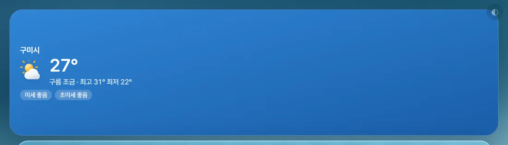
날씨 카드
카드 오른쪽 「시간대별」 화살표가 보이면 카드를 눌러 시간대별 창제목 자리에 지역 이름, 날씨 그림 · 「23°」 · 「맑음 · 최고 27° 최저 18°」 · 「미세 좋음」「초미세 보통」. 켤 때와 매시 15분에 새로 받습니다.
- 「날씨를 불러오지 못했습니다 … 학교 인터넷이 날씨 서버를 막고 있을 수 있어요」 → [다시 시도]
- 「날씨 지역을 못 찾았습니다 · 시·군·구를 직접 넣어주세요」 → [날씨 지역 설정]
- 「학교를 설정하면 날씨와 미세먼지가 표시됩니다」 → [학교 설정]
지역 바꾸기
- 설정 [학교] → 날씨 지역
- [학교 주소로 다시 찾기] — 또는 지역 칸에 「구미」처럼 시·군·구만 적고 [이 지역으로](「경상북도 구미시」보다 짧게가 잘 잡힙니다)
- 「"구미" 기준으로 날씨를 받아옵니다」가 뜨면 끝

시간대별 날씨 — 체육 시간에 비가 오나
날씨 카드 클릭 (다시 누르거나 ✕ · Esc로 닫기)지금 시각부터 18줄 — 「14시 ☀️ 23° 5교시 체육」. 🔴 그 시간에 내 수업이 있으면 교시와 과목이 붙습니다(월~금만). 날짜가 넘어가면 앞에 「내일」.
- 비 올 확률 칸은 9월 7일 판부터 뺐습니다 — 날씨 그림으로 보세요
- 학교망 사정으로 네이버 날씨로 받는 컴퓨터는 시간대별 자료가 없어 「시간대별」 화살표가 안 보이고 눌러도 열리지 않습니다
6-11주간학습안내 기본 꺼짐 AI 키 있으면 더
초등 담임 선생님이 매주 만드시는 그 안내문을 카드에 붙여 두는 자리입니다. 원본만 올려 둬도 되고, AI로 읽히면 오늘 배울 것만 추려 주고 시간표·진도에도 이어집니다.
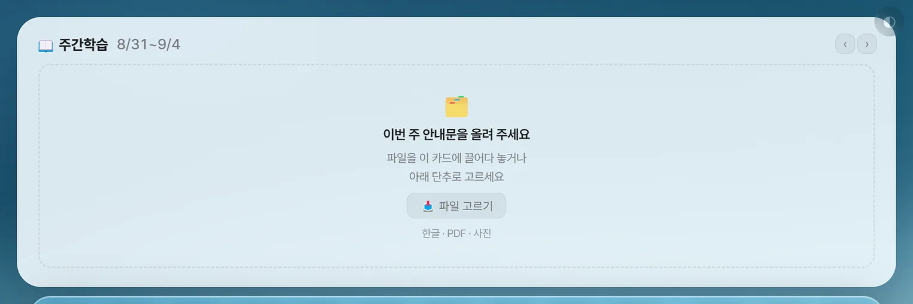
켜고 올리기
설정 [위젯] → 주간학습안내 켜기 → [직접 배치로 두기] → 카드에 파일 끌어다 놓기- 설정 [위젯] → 주간학습안내 스위치 → 알림의 [직접 배치로 두기](이 카드는 배치표에 자리가 없어 꼭 필요합니다)
- 빈 카드 「📖 주간학습 · 9/7~9/11」 가운데 「이번 주 안내문을 올려 주세요」가 보이면 — 파일을 카드 위로 끌어다 놓거나 [📥 파일 고르기]. 한글(.hwp·.hwpx)·PDF·워드(.docx)·사진을 받습니다
- 같은 주에 이미 올린 것이 있으면 「새로 올린 것으로 바꿀까요?」 → [바꾸기]
- 「표까지 읽어 둘까요?」 → [AI로 읽기] 또는 [원본만 보기]
- 주는 파일 이름에서 알아냅니다 — 「1학년2반_ 8월24일 - 8월28일.hwp」 「2026.09.07」 「20260907」 「6.16」 모두 읽어요. 이름에 날짜가 없으면 AI가 읽은 날짜, 그것도 없으면 카드에서 보고 있던 주에 붙습니다
- 🔴 앱은 파일 자리만 기억합니다 — 원본을 옮기거나 지우면 「올려 둔 파일을 찾지 못했어요」. 안내문 파일은 한 폴더에 두고 쓰세요
- AI로 읽지 않으면 시간표·진도에는 아무것도 붙지 않습니다 — 종이 그대로 보고 싶을 때는 [원본만 보기]로 충분합니다
「📖 이렇게 읽었어요」 — AI가 읽은 표 확인하기
[AI로 읽기]를 누르면 저절로 열리는 큰 창 (나중에는 카드의 ✎)- 왼쪽 「읽은 내용」 표(요일·교시·과목·내용)와 오른쪽 「원본 — 대조해 보세요」를 나란히 봅니다
- 노란 줄은 못 읽은 칸 — 「N칸 중 N칸을 못 읽었어요 — 노란 줄만 채우면 됩니다」. 과목·내용 칸을 눌러 고칩니다
- 잘못 읽은 줄은 ✕(지울 줄로 표시, 되살리려면 ↩)
- 「과목 색」 줄에서 과목마다 색 점을 고르면 다음 주에도 이어집니다
- [이대로 저장] — 다시 읽히려면 [다시 읽기], 그만두려면 [취소]
「⚠ 뒷부분이 잘렸을 수 있어요」가 뜨면 원본과 끝부분을 한 번 대조해 주세요.
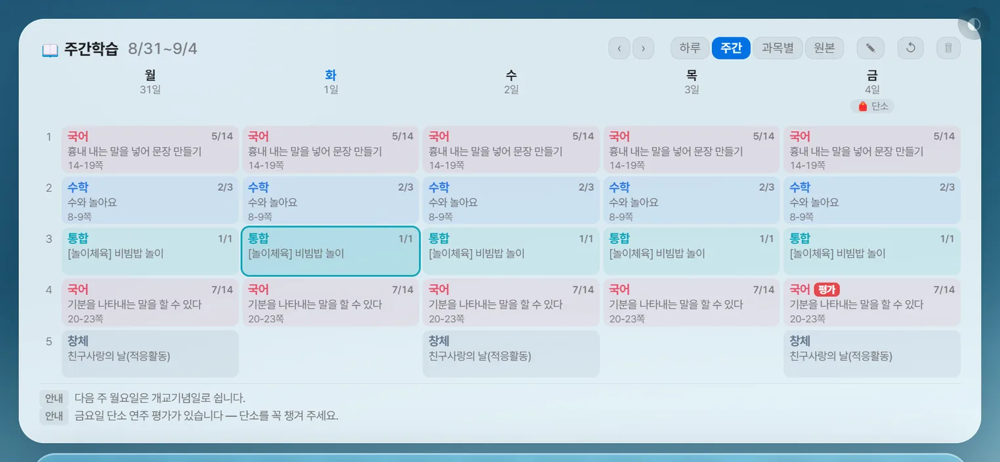
카드에서 보기 넷 · 고치기 · 바꾸기 · 지우기
카드 머리의 [하루] [주간] [과목별] [원본] · ✎ · ↺ · 🗑 · 좌우 화살표- 하루 — 좌우 화살표와 [오늘]로 날을 넘기며 교시·과목·내용·「평가」 딱지·쪽수, 아래 「🎒 준비물」 「⚑ 행사」. 지금 교시 줄이 강조됩니다
- 주간 — 요일 × 교시 표, 머리에 행사·준비물, 아래 「안내」
- 과목별 — 과목으로 묶고 같은 내용은 「N시간」으로 접습니다
- 원본 — 사진·PDF는 그대로, 한글·워드는 표로 옮겨 보여 줍니다(색·그림은 빠짐). 도구: ✨ 읽기(아직 안 읽었을 때) · ＋/－(0.5~3배) · ⤢ 큰 창
- 요일·교시가 없는 안내문(과목 목록형)이면 [하루]·[주간]이 흐려지고 「이 안내문에는 요일·교시가 없어요」 — 지어내지 않습니다
- 좌우 화살표로 지난 주·다음 주(「지난주」 딱지 · [이번 주]로 복귀)
- ✎ 내용·과목 색 고치기(읽어 둔 표가 있을 때) · ↺ 다른 파일로 바꾸기 · 🗑 이 주 안내문 지우기(컴퓨터의 원본 파일은 그대로, 5초 [되돌리기])
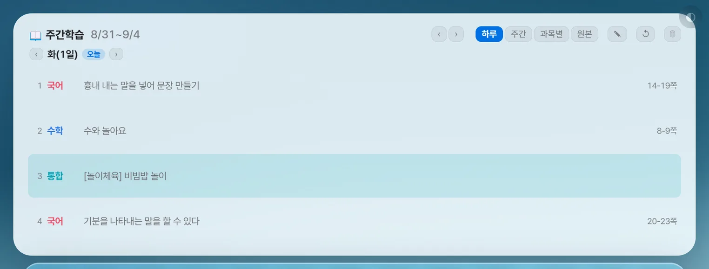
시간표 · 지금 이 시간 · 진도와 잇기
설정 [시간표] → 주간학습안내 내용 함께 보기(기본 켜짐) · └ 과목이 다를 때시간표 칸과 「지금 이 시간」에 그 시간에 배울 것이 함께 적힙니다. 🔴 붙는 조건 넷이 모두 맞아야 합니다 —
- AI로 읽어 요일·교시 표가 있는 안내문
- 이번 주 안내문(카드에서 지난주를 보고 있어도 시간표는 이번 주 것만)
- 내 시간표 그 칸에 과목이 적혀 있음(빈 칸은 안 채움)
- 과목 이름이 같음(띄어쓰기·괄호 뒤는 무시) — 다르면 「└ 과목이 다를 때」 [시간표만 / 둘 다 보기 / 안내문 먼저]를 따릅니다. 어느 쪽이든 시간표에 적어 둔 내용은 바뀌지 않습니다
칸이 낮으면 줄이 접혀 마우스를 올려야 보입니다. 진도로 옮겨 담기는 6-2의 [📖 안내문에서 채우기].
6-12출결 카드(담임반) 기본 꺼짐
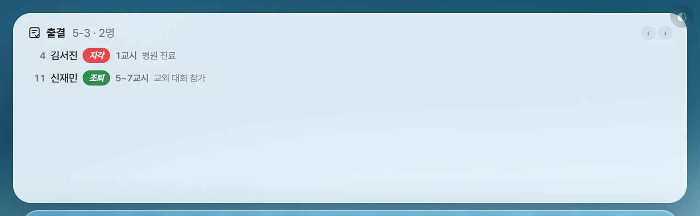
독에서 찍은 출결이 바탕화면에 늘 서 있게
설정 [위젯] → 출결 켜기 → [직접 배치로 두기] · 기록은 독의 ✓ 출결에서- 설정 [위젯] → 출결(담임반) 스위치 → 알림의 [직접 배치로 두기]
- 설정 [학교] → 담임반 학년·반을 넣습니다(안 넣었으면 카드에 「담임반을 넣으면 여기에 나옵니다」)
- 독의 ✓ 출결에서 기록하면(7-10) 카드가 바로 바뀝니다
- 제목 「출결 · 반 · N명」, 줄마다 번호 · 이름 · 종류 딱지(지각·조퇴·결석·결과) · 교시(「3~4교시」 「조회·종례」, 하루 전부면 생략) · 사유
- 특이사항만 세웁니다 — 아무도 빠지지 않은 날은 「개근」, 앞날은 「아직 오지 않은 날입니다」
- 제목 옆 좌우 화살표로 어제·그제(다른 날엔 [오늘]) · 줄이나 「개근」을 누르면 출결표 큰 창이 열립니다
6-13앨범(사진 액자) · 업무포털 로그인 카드 기본 꺼짐
앨범 — 액자 넷까지
설정 [화면] → 앨범 (사진·맞춤) · 설정 [위젯] (크기)- 설정 [화면] 탭 → 앨범 → 액자(앨범 · 앨범 2~4) 고르기 → 「바탕화면에 ○ 액자 표시」 켜기 — 앨범 2~4는 [직접 배치로 두기]까지
- [사진 불러오기](한 장 이상이면 [사진 더하기]) — 액자마다 여러 장
- 「사진 맞춤」 꽉 채우기 · 전체 보기 · 직접 맞추기(네모를 끌고 확대 100~400%, [가운데로]) — 사진마다 따로 저장
- 뺄 사진은 그 사진을 띄운 채 [이 사진 빼기]. 액자 크기는 설정 [위젯] 탭에서
바탕화면 액자에 사진을 끌어다 놓아도 바뀌지 않습니다 — 넣고 빼기는 늘 설정 [화면]에서 합니다.
업무포털 로그인 카드 — 누를 때만 로그인
설정 [위젯] → 업무포털 로그인 켜기바탕화면에 단추 카드 하나가 붙습니다. 자동 실행을 꺼 두어도 이 단추는 동작하고, 제목 옆에 마지막 결과(「어제 08:12 완료」 · 실패면 빨갛게)가 뜹니다. 인증서를 아직 안 넣었으면 단추가 [설정에서 준비하기]로 바뀌어 그 탭을 엽니다. 준비하는 법은 10번.
6-14[전체] — 카드를 큰 창에 펼치기
할 일 · D-Day · 메모 · 학사일정 · 진도 카드 제목 옆 [전체]. 🔴 카드에 내용이 하나라도 있어야 단추가 보입니다. 큰 창에서 고친 것은 바탕화면에 바로 반영됩니다.

할 일 [전체] · 지난 기록
할 일 카드 제목 옆 [전체]- 머리 「모두 N개 · 남은 것 N개」와 「내용으로 찾기」 칸
- 분류 칩 [전체 N] [수업 N] … [분류 없음 N] — 누르면 그것만, 같은 칩을 다시 누르면 전체(거르는 동안 ▲▼는 숨습니다)
- 줄 클릭 = 완료 · 우클릭 = 지우기 · 마감 지난 것은 「08/14(목) 지남」
- 줄 끝 ✎ → 내용 · 분류 · 마감일을 한꺼번에 고치고 [저장](Enter/Esc)
- 아래 입력칸 「할 일 — 여러 개는 줄바꿈으로 한꺼번에」 + 마감일 고르개 + [추가] — 여러 줄을 붙여넣으면 여러 개가 됩니다
- [완료한 것 감추기] — 지우지 않고 치웁니다(창을 닫으면 풀림) · 내 순서일 때 [✋ 내 순서 해제 (마감순으로)]
지난 기록 — 지운 할 일 되살리기
- 목록 맨 아래 「지난 기록 N건 펼치기」
- 줄마다 날짜 · 분류 · 내용 · 「끝냄/지움」 — ↩ 누르면 안 끝낸 할 일로 되살아나고, ✕는 그 기록만 지웁니다
카드 우클릭·날짜 창 ✕·설정 [완료한 할 일 지우기]로 지운 것이 최근 500건까지 남습니다. 남기기 싫으면 설정 [위젯] → 지난 기록 끄기.
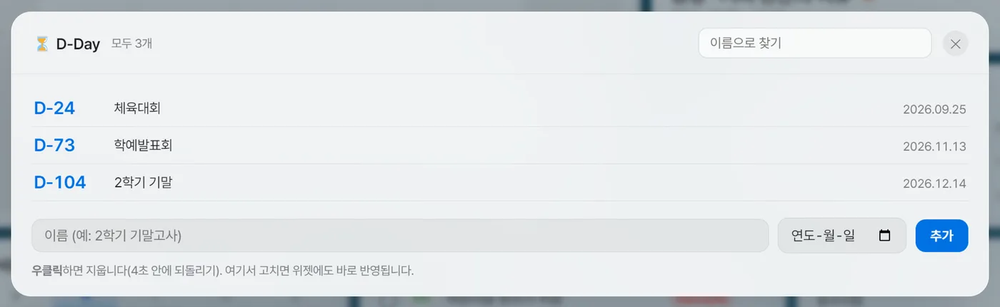
D-Day [전체]
D-Day 카드 제목 옆 [전체]「이름으로 찾기」, 다가오는 것 위 · 「지난 것 N개」 아래(흐리게). 우클릭으로 지우기. 아래 「이름 (예: 2학기 기말고사)」 + 날짜 고르개 + [추가](여기서는 지난 날짜를 내년으로 바꾸지 않습니다). 고치기·순서·꾸미기는 없습니다.
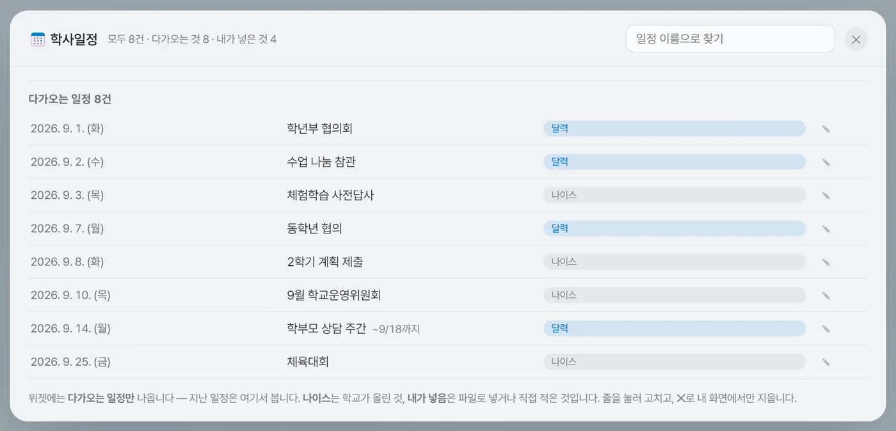
학사일정 [전체] — 지난 일정까지
학사일정 카드 제목 옆 [전체]- 「모두 N건 · 다가오는 것 N · 내가 넣은 것 N」, 「일정 이름으로 찾기」, 「다가오는 일정」 / 「지난 일정」 두 묶음
- 출처 딱지 — 나이스 · 학사·고침(내 화면에서 고친 나이스 일정) · 내가 넣음 · 달력
- ✎ 고치기(달력 일정은 창을 닫고 달력 날짜 창으로) · ✕는 한 번 묻고 지웁니다 — 나이스 일정은 「내 화면에서만 감춥니다」. 여기서 지운 것은 되돌리기가 없습니다
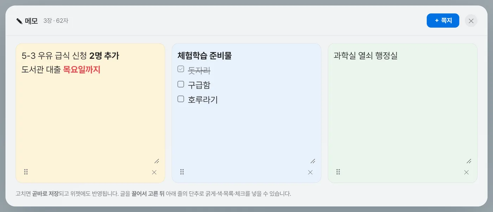
메모 [전체]
메모 카드 제목 옆 [전체]- 모든 메모 카드의 쪽지를 한 화면에 — 치는 즉시 저장. 꺼 둔 카드의 쪽지도 「메모 3 · 꺼짐」으로 함께 보입니다
- [＋ 쪽지]는 늘 첫 번째 메모 카드에 붙습니다 · [🎨 꾸미기] · ✕로 떼기(되돌리기 없음)
6-15오늘의 비서

앱을 켜면 하루 한 번
앱을 켜고 4~5초 뒤 저절로 · [다시 안 보기] 또는 설정 [위젯] 맨 위에서 끄기- 인사(11시 전 「선생님, 좋은 아침입니다」 · 17시 전 「오늘도 수고 많으십니다」 · 그 뒤 「오늘 하루 고생하셨습니다」)와 날짜
- 오늘 할 일 — 마감이 오늘이거나 지난 것 3개까지 굵게 + 「그 밖에 N개」
- 오늘 수업 — 「1교시 체육 · …」 6개까지(요일을 바꾼 날은 그 요일로)
- 오늘 급식(받아 둔 것·고른 끼니만) · 챙길 것 — 오늘 달력 일정 3개 + 7일 안 D-Day 3개(「방학 D-3」)
- 맨 아래 인사말 한 줄 — 200가지 중 날짜와 학교로 골라, 같은 날엔 몇 번을 켜도 같은 말입니다
- 이미 앱에 있는 것을 모아 보여줄 뿐이라 AI 키도 인터넷도 없어도 뜹니다. 보여 줄 것이 하나도 없으면 아예 안 뜹니다
단추 [다시 안 보기](「설정 → 위젯에서 다시 켤 수 있습니다」) · [닫기] · 바깥 누르기.
6-16빠른 찾기 — 어디서나 Ctrl + Space

이름 · 내선 · 할 일 · 일정 · 파일 — 무엇이든
다른 프로그램을 쓰는 중에도 Ctrl+Space- Ctrl+Space — 그 키를 다른 프로그램이 쓰고 있는 컴퓨터에서는 Ctrl+Alt+Space
- 낱말을 칩니다 — 초성만 쳐도 됩니다(ㄱㅎㄴ → 김하늘, 띄어쓰기 무시)
- ↑↓로 고르고 Enter
| 찾은 것 | Enter를 누르면 |
|---|---|
| 학생 | 「1-3 5번 김하늘」 글이 복사됩니다 |
| 내선번호 | 번호가 복사됩니다 |
| 할 일 | 완료 ↔ 되돌리기 — 창이 안 닫혀 여러 개를 연달아 체크할 수 있어요 |
| D-Day · 일정 | 창을 닫고 그 날짜의 달력 창을 엽니다 |
| 서랍 속 파일 | 미리보기 |
| 즐겨찾기 | 브라우저로 엽니다 |
| 설정 | 그 탭을 엽니다(학교 등록 · API 키 · 시간표 설정 · 위젯 켜고 끄기 · 화면 배치 등) |
결과는 40개까지, 학생 → 내선 → 할 일 → D-Day → 일정 → 파일 → 즐겨찾기 → 설정 순. AI는 쓰지 않습니다. 엑셀의 Ctrl+Space와 부딪히면 설정 [화면] → 단축키를 끄세요.
독에서 여는 것들
AI 도우미 · 품의 · 생기부 · 명렬 · 출결 · 내선번호 · 즐겨찾기 · 전광판 · 서랍.

독 한눈에 — 무엇이 어떻게 열리나
독 순서·끄기·아이콘 모양은 설정 [독] 탭| 아이콘 | 누르면 |
|---|---|
| ✦ AI 도우미 | 독 옆 패널 — 빠른 입력 · 메신저 분석 · 안내문 · 공문서 · 생기부 · 품의 · 파일 불러오기 |
| ✎ 생기부 도우미 | 넓은 패널 |
| ✓ 출결 | 큰 창 — 출결표 |
| ▤ 전광판 · ★ 즐겨찾기 | 패널 |
| ◫ 명렬 · ☏ 내선번호 | 큰 창 |
| ⚙ 설정 | 설정 창(늘 맨 뒤) |
| ▣ 서랍 | 폴더 속 파일이 부채꼴로 펼쳐짐 |
| 고정 파일 | 원래 프로그램으로 열기 |
| 휴지통 | 윈도우 휴지통 폴더 열기 |
- 패널 닫기 — 제목 ✕ · Esc · 패널 바깥 아무 데나 · 같은 아이콘 다시 누르기
- 큰 창 닫기 — ✕ · Esc · 뒤의 어두운 배경 누르기. 창 안에서 누르기 시작해 바깥에서 손을 떼면 닫히지 않습니다(글자를 고르다 닫히지 않게)
- 화면(위젯 영역)이 좁으면 독 아이콘이 스스로 작아지고, 전체 가리기(◐) 중에는 독도 함께 숨습니다
- 독 위치를 「안 씀」으로 두면 이 아이콘들이 모두 사라집니다 — 설정은 트레이 아이콘 우클릭 → ⚙️ 설정 열기
7-1AI 도우미 — 공통 AI 키 필요
카드 일곱 · 사용량 · 키
독 → ✦ AI 도우미 (열 때마다 첫 화면부터)- 카드 — ⚡ 빠른 입력 · 💬 메신저 분석 · 📣 학생·교사·학부모 안내문 · 📋 공문서 다듬기 · ✎ 생기부 초안 · 🧾 품의 만들기 · 📥 파일에서 불러오기. 기능 화면 왼쪽 위 [← 다른 기능 고르기]로 돌아옵니다
- AI는 단추를 누를 때만 부릅니다 — 가만히 두면 아무것도 보내지 않아요
- 맨 위 사용량 줄 「오늘 N회 사용 · 남은 횟수 약 M회」 — 하루 220회에서 쓴 만큼 뺀 앱 자체 숫자입니다(12회 쓰면 약 208회). 150회를 넘으면 빨갛게 「무료 한도에 가까워요」, 220회가 되면 글 만드는 기능은 잠시 멈춥니다(설정 [AI] → [횟수 초기화]로 숫자를 되돌릴 수 있음). 품의 읽기는 성공 한 번에 1회로 세고, 파일 불러오기는 세지 않습니다
- 키가 없으면 첫 화면 아래 빨간 글 「Gemini 키가 없습니다 — 설정 → AI 탭에서 넣어주세요.」 — 받는 법은 04번
- 「⏳ 오늘의 무료 API 한도를 다 썼습니다」 — 내일 다시, 급하면 다른 구글 계정의 새 키
- 「⏳ API 요청이 몰렸습니다 — 1분 후 다시」 · 「API 요청 한도 초과 — 잠시 후 다시」 — 1분쯤 쉬었다 누르기
- 「🔑 API 키가 유효하지 않습니다」 — 키가 만료·삭제됐을 수 있어요. 설정 [AI] 탭에서 키를 다시 넣고 [키 확인]을 누르세요
- 「🚫 안전 필터에 걸렸습니다」 — 내용을 조금 바꿔 다시
7-2🧾 품의 만들기 — 장바구니·견적서를 찍어 나이스 품목내역으로 AI 키 필요
쇼핑몰 장바구니나 견적서·품의서(강사비·공사비·용역 포함) 화면을 오려 찍으면 AI가 품목·규격·단위·수량·단가를 읽어 표로 채우고, 그 표를 나이스 「품목내역」 양식 그대로의 엑셀로 저장해 줍니다. 그 파일을 나이스에 올리면 품목을 한 줄씩 옮겨 적을 필요가 없어요.
전체 흐름 한 줄
- [찍기 시작] — 단축키만 켜집니다
- 인터넷 창에서 Ctrl+Alt+S → 품목 표를 끌어서 오려 찍기 (여러 장)
- Ctrl+Alt+X — 찍기 끝
- [N장 읽기] — AI가 표를 채움(10~20초)
- 표 확인·고치기 — 안 살 줄 ✕, 연한 단위 확인
- [품목내역 엑셀로 저장] — 「문서」 폴더에
품목내역_날짜.xls - 나이스 품의 화면에서 그 엑셀을 올리기
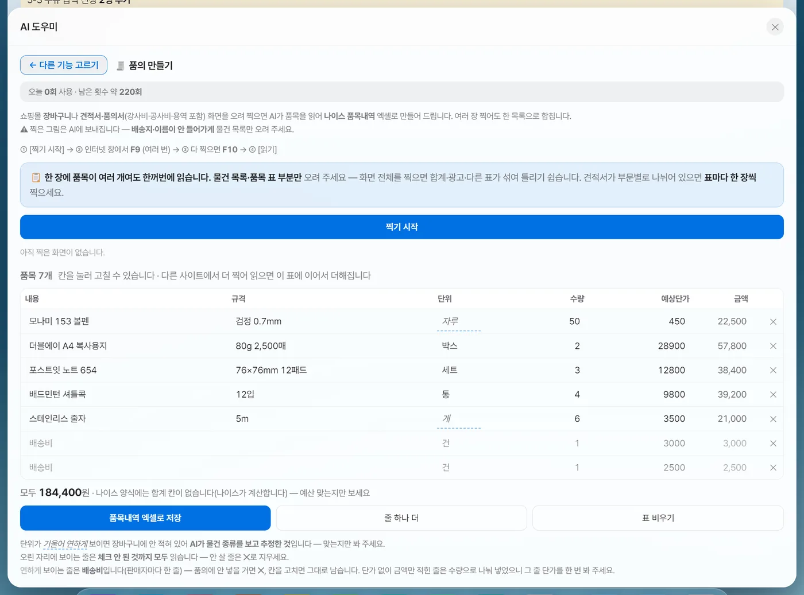
1~3단계 — 찍기
독 → ✦ AI 도우미 → [🧾 품의 만들기] → [찍기 시작]① [찍기 시작]
- 누르는 순간 찍지 않습니다 — 단축키 두 개만 켭니다(단추로 바로 찍으면 앞에 있던 위젯이 찍혀 버리기 때문이에요)
- 단추가 [그만 찍기]로 바뀌고 빨간 상자 「● 찍는 중 — 인터넷 창을 띄워 두고 Ctrl+Alt+S로 찍으세요」
- 「Ctrl+Alt+S를 다른 프로그램이 쓰고 있어 켜지 못했습니다」가 뜨면 그 프로그램을 잠시 끄고 다시 누르세요
② 인터넷 창에서 Ctrl + Alt + S — 오려 찍기
- 장바구니(또는 견적서) 창을 띄우고 Ctrl+Alt+S
- 마우스가 있는 모니터가 멈추고 어둡게 덮이며 「담을 자리를 끌어서 고르세요」
- 품목 표 부분을 마우스로 끌어 네모를 그립니다 — 손을 떼는 순간 찍힙니다(확인 단추 없음)
- 화면 위쪽에 「✓ N장째 담았습니다 · 더 찍기 Ctrl+Alt+S · 다 찍었으면 Ctrl+Alt+X」
- 스크롤해서 다음 부분을 또 찍습니다. 한 장 고르기를 그만두려면 Esc나 오른쪽 클릭(찍기 모드는 계속 켜져 있음)
- 물건 목록·품목 표 부분만 오리세요 — 화면 전체를 찍으면 합계·광고·다른 표가 섞여 틀리기 쉽습니다
- 🔴 배송지·받는 사람 이름·카드 번호가 안 들어가게 — 찍은 그림은 선생님 Gemini 키로 Google AI에 보내집니다
- 견적서가 부문별로 나뉘어 있으면 표마다 한 장씩
- 한 장에 품목이 여러 개여도 한꺼번에 읽습니다. 다만 한 번에 읽는 것은 8장까지입니다 — 9장 넘게 찍었으면 앞 8장만 읽고 남은 장은 그대로 두니 [읽기]를 한 번 더 누르세요
- 위젯·다른 창이 장바구니를 가리고 있으면 가린 채로 찍힙니다
- 「고른 자리가 너무 작습니다」 → 조금 크게 / 「이 화면은 보호돼 있어 까맣게 찍힙니다」 → 다른 창(브라우저)에서
③ 다 찍었으면 Ctrl + Alt + X
- 단축키가 꺼지고 「✓ N장을 담았습니다 · 위젯 → 🧾 품의 만들기에서 [읽기]를 누르세요」
- 위젯에는 AI 도우미가 품의 화면으로 열려 있습니다 — 인터넷 창을 내리면 보여요. 위젯의 [그만 찍기]로 끝내도 같습니다
- 찍은 그림은 작은 그림으로 쌓이고, 잘못 찍은 장은 오른쪽 위 ✕(이 장 빼기)
- 10분 동안 안 찍으면 단축키가 저절로 꺼집니다(모아 둔 그림은 그대로)
4~5단계 — 읽기 · 표 확인하고 고치기
품의 화면의 [N장 읽기] (찍은 그림이 있을 때만 보임)④ [N장 읽기]
- 단추가 「읽는 중…」으로 돌며 「사진 N장을 AI가 꼼꼼히 읽고 있습니다 — 10~20초쯤 걸립니다」. 두 번 누르지 마세요
- 끝나면 「품목 N개를 표에 더했습니다 (모두 M개) · 단위를 추정한 것 K개 · 총액을 수량으로 나눈 단가 D개 · 단가를 못 읽은 것 E개」
- 읽은 그림은 곧바로 지웁니다(다음 읽기에서 두 번 더해지지 않게). 실패하면 그림은 남으니 다시 누르면 됩니다 — 「사진에서 품목을 찾지 못했습니다」가 뜨면 더 또렷하게 표만 오려 다시 찍으세요
⑤ 표 확인 · 고치기
열: 내용 · 규격 · 단위 · 수량 · 예상단가 · 금액 · ✕. 금액(수량×단가)은 앱이 계산하고, 표 아래에 「모두 N원 · 나이스 양식에는 합계 칸이 없습니다(나이스가 계산합니다) — 예산 맞는지만 보세요」.
- 안 살 줄은 ✕ — 오린 자리에 보이는 줄은 체크 안 된 것까지 모두 읽습니다(묻지 않고 바로 지워짐). 0원 사은품 줄도 남으니 지우세요
- 단위 칸 — 기울어 연하게(파란 점선) 보이면 장바구니에 안 적혀 AI가 짐작한 것(볼펜→자루, 공책→권, 그 밖→개)이니 맞는지만 보세요. 주황이면 비어 있는 칸이라 채워야 합니다. 강사비·용역처럼 물건이 아닌 줄은 「개」로 채워질 수 있으니 알맞게 고치세요
- 단가 — 단가 없이 금액만 적힌 줄은 수량으로 나눠 넣었으니 그 줄 단가를 한 번 보세요
- 칸을 눌러 고칩니다 — 수량은 소수 둘째 자리까지(12.5kg), 단가는 원 단위. 모자라면 [줄 하나 더]
- 앱이 알아서 버리는 줄 — 합계·소계·총액·결제금액·배송비·할인·쿠폰·적립금·포인트·부가세, 금액이 음수인 할인 줄
- 다른 사이트 것도 더하기 — 다시 [찍기 시작] → 찍기 → [N장 읽기]를 하면 표 아래에 이어 붙습니다. 같은 장바구니를 두 번 읽으면 같은 품목이 두 번 들어가니 조심하세요
- [표 비우기](한 번 묻고) — 새 품의를 처음부터 · [찍은 것 지우기] — 아직 안 읽은 그림만(표는 그대로)
6~7단계 — 나이스 양식 엑셀로 저장하고 나이스에 올리기
품의 화면 표 아래 [품목내역 엑셀로 저장] → 나이스 품의 화면⑥ [품목내역 엑셀로 저장]
- [품목내역 엑셀로 저장]을 누르면 저장 창 「품목내역 저장 (나이스에 올릴 파일)」이 뜹니다
- 기본 자리는 「문서」 폴더, 이름은
품목내역_2026-09-12.xls— 필요하면 바꾸고 [저장] - 「품목내역을 저장했습니다 — 나이스에 올리세요」가 뜨면 끝입니다
| 만들어지는 파일 | 내용 |
|---|---|
| 형식 | .xls(옛 엑셀 형식) — 나이스가 새 형식(.xlsx)을 안 받는 경우가 있어 나이스 양식 원본과 같은 형식으로 만듭니다 |
| 시트 | 「품목내역」 한 장 |
| 열 | 내용 · 규격 · 단위 · 수량 · 예상단가 — 나이스 품목내역 양식의 머리글 그대로 |
| 합계 | 없음(나이스가 계산) · 내용이 빈 줄은 빠집니다 |
⑦ 나이스에 올리기
- 나이스(업무포털)에서 품의를 작성하는 화면을 엽니다
- 품목내역을 엑셀 파일로 올리는 단추를 누르고, 방금 저장한
품목내역_날짜.xls를 고릅니다 - 품목이 한꺼번에 들어오면 금액·합계가 나이스 화면에서 계산됩니다 — 앱에서 본 「모두 N원」과 맞는지 확인하세요
- 나이스에서 양식 파일을 따로 내려받아 옮겨 적을 필요가 없습니다 — 앱이 같은 모양의 양식 파일로 만들어 두었어요
- 엑셀에서 열어 손봤다면 .xls 형식 그대로 저장해 올리세요
- 저장한 뒤에도 앱의 표는 남아 있습니다 — 다음 품의 전에 [표 비우기]
- 🔴 앱을 끄면 표와 찍은 그림이 사라집니다(따로 저장하지 않음) — 반드시 엑셀로 저장한 뒤 끄세요
7-3⚡ 빠른 입력 — 한 줄로 적으면 갈라 넣기

할 일 · 달력 일정 · D-Day · 메모로 나눠 저장
AI 도우미 → [⚡ 빠른 입력] → [갈라 보기] → [확인하고 저장]- 한 줄로 적습니다 — 예: 「내일까지 동의서 걷기, 9/30 중간고사 디데이 등록, 10/2~10/3 수학여행」(아래 예시 단추를 눌러도 칸이 채워집니다)
- [갈라 보기] → 「N건을 찾았습니다 — 날짜와 넣을 곳을 확인하세요」
- 줄마다 넣을 곳 고르개(할 일 / 달력 일정 / D-Day / 메모) · 내용 칸 · 날짜 설명(「마감 9/2(수)」 「8/3(월) ~ 8/8(토)」 「9/30(수) · D-18」). 넣지 않을 줄은 ✕
- [확인하고 저장 (N건)] → 패널이 닫히고 「할 일 N건 · 달력 일정 N건 …을 저장했습니다」
- 한 항목은 한 곳에만 들어갑니다 — 여러 곳에 들어가는 건 한 줄에 항목이 여럿일 때입니다
- 날짜가 없는 달력 일정·D-Day는 할 일로 바뀝니다. 기간을 할 일로 넣으면 시작일이 마감이 됩니다. 달력 기간은 31일까지
- 메모는 첫 번째 메모 카드에 붙고, 진도는 여기서 넣지 않습니다
- 「9/2」처럼 적으면 올해로 봅니다 — 내년 1월 일정이면 「2027-01-05」처럼 해까지 적으세요. AI가 날짜를 잘못 셀 때가 있으니 확인 화면의 요일을 꼭 보세요
7-4💬 메신저 분석 — 공지에서 할 일 뽑기
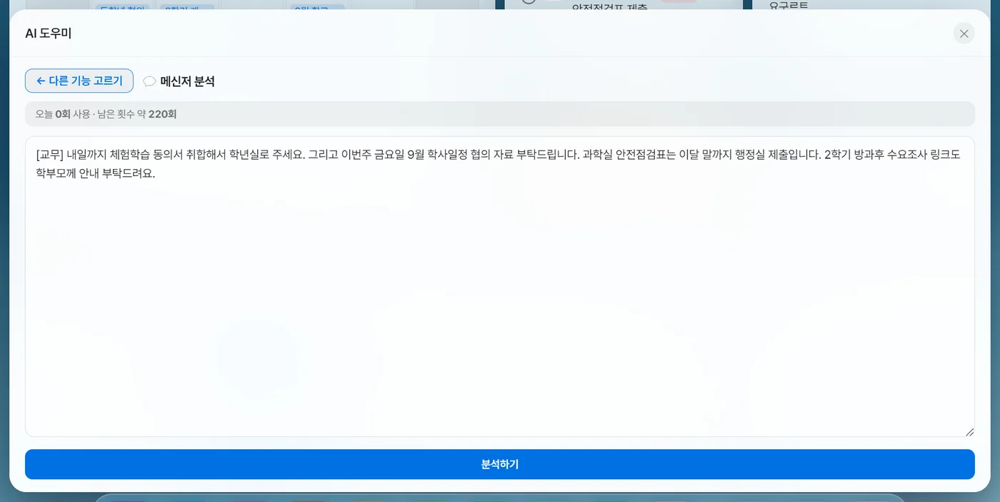
붙여넣기 → 분석하기
AI 도우미 → [💬 메신저 분석] → 붙여넣기 → [분석하기]- 교무실 단톡·메신저 공지를 그대로 붙여넣습니다(인사·이모지는 알아서 무시)
- [분석하기] → 「업무 N개를 찾았습니다 — 확인 후 추가하세요」
- 줄마다 체크상자가 모두 켜진 채 나옵니다 — 필요 없는 줄만 체크 해제
- [선택한 업무를 할 일에 추가] → 패널이 닫히고 「할 일 N개를 추가했습니다」

날짜는 실제 날짜로 바꿔 줍니다
「내일」 +1 · 「모레」 +2 · 「이번 주/다음 주 금요일」을 계산해 2026-09-03처럼 넣습니다(「3/28」은 올해). 마감을 못 정하면 「마감 미정」으로 두고 지어내지 않아요. 한 메시지에 업무가 여럿이면 나눠 줍니다. [결과 복사]도 있습니다.
7-5📣 학생·교사·학부모 안내문

받는 사람에 맞는 글로 — 단추 셋
AI 도우미 → [📣 학생·교사·학부모 안내문] → 붙여넣기 → [학생에게] [선생님께] [학부모님께]- 교무실 공지를 붙여넣거나, 「내일 00 제출」처럼 한 줄만 적습니다
- 받는 사람 단추를 누릅니다 → 「학생 안내문 완성 — 확인하고 [결과 복사]로 붙여넣으세요」
- [결과 복사]해서 카톡·알림장에 붙이거나 [크게 보기]로 확인. 원문이 남아 있어 다른 단추를 이어 눌러 볼 수 있습니다
| 누른 단추 | 이렇게 만듭니다 |
|---|---|
| 학생에게 | 공문이면 담당자·결재·붙임·「끝.」을 걷어내고 늘리지 않음 / 짧은 메모면 해요체로 3~4줄 |
| 학부모님께 | 공문이면 걷어내기 / 짧은 메모면 「안녕하세요, 담임입니다.」로 시작해 「감사합니다.」로 맺는 4~5줄 |
| 선생님께 | 반대로 마감·제출처·담당 부서·담당자·내선을 남기고 결재선·문서번호·인사말은 뺍니다. 할 일은 마지막 줄 「▸ 」 한 번 |
- 「짧은 메모」로 보는 기준 — 빈 줄 빼고 두 줄 이하·60자 이하이고 부서명·붙임·끝.·담당자·결재 같은 공문 표시가 없을 때
- 원문에 없는 날짜·시각·장소·준비물은 지어내지 않고, 「00」 빈자리도 그대로 둡니다. 「내일·다음 주」는 날짜로 바꾸지 않습니다(메신저 분석과 반대)
- 만들지 않는 경우 — 교직원만 해당하는 공지(연수·회의·복무)는 「학생에게 보낼 내용이 아닙니다 — 교직원 대상 공지입니다」, 교실 잡무(청소·자리 배치)만 있으면 학부모용은 「학생에게 안내할 내용입니다」
7-6📋 공문서 다듬기

공문서 작성 규칙에 맞게
AI 도우미 → [📋 공문서 다듬기] → 붙여넣기 → [다듬기] → [결과 복사] · [크게 보기]- 항목 기호 1. → 가. → 1) → 가) → (1) → (가) → ① → ㉮(항목이 하나면 기호 없음)
- 날짜 2026. 9. 18.(금) · 시간 15:20 · 금액 금113,560원(금일십일만삼천오백육십원)
- 쉬운 말(의거하여→따라, 탑재→올리다, 요망→바랍니다), 띄어쓰기, 붙임·「끝.」 표기
- 🔴 원문에 없는 연도·요일·시각·금액은 넣지 않고, 원문 숫자는 바꾸지 않습니다 — 짐작해 채우면 그대로 결재가 올라가니까요
7-7📥 파일에서 불러오기 — 명렬 · 내선번호 · 시간표 · 학사일정

한글·엑셀·워드·PDF·사진을 표로
AI 도우미 → [📥 파일에서 불러오기] → 종류 고르기 (명렬·내선 창 아래 [📥 파일에서 불러오기]도 같음)- [명렬] [내선번호] [시간표] [학사일정] 중 하나 → 파일 고르기 창(hwp·hwpx·docx·xlsx·xls·csv·txt·pdf·png·jpg·webp)
- 「명렬을(를) 읽고 있어요… AI가 내용을 표로 정리하는 중입니다」
- 확인 창에서 칸을 눌러 고치고, 필요 없는 줄은 ✕, [+ 줄 추가]. 명렬·내선만 ▲▼로 순서도
- [저장 (N명 · N개 반)]
| 종류 | 칸 | 저장하면 |
|---|---|---|
| 명렬 | 학반 · 번호 · 이름 · 비고 | 불러온 반만 바뀌고 다른 반은 그대로. 학반은 「3-2」 꼴로 맞춰 줌 |
| 내선번호 | 이름·부서 · 번호 · 구분 | 🔴 목록을 통째로 바꿈(부서 자동) |
| 시간표 | 요일 · 교시 · 과목 | 통째로 바꿈 |
| 학사일정 | 날짜 · 일정 | 통째로 바꿈 — 「위젯에는 다가오는 M건이 보입니다 (지난 K건은 [전체]에서)」 |
- 🔴 명렬이 크게 줄어들면 멈춰서 묻습니다 — 동아리·선택과목처럼 반의 일부만 담긴 표일 때 [모음반으로 담기 (원래 명렬 유지)]를 고르면 이름을 지어 따로 담습니다(「3-2」 꼴 이름은 못 씀). [반 통째로 교체]도 고를 수 있어요
- 사진·PDF 18MB까지, 문서는 글자 20만 자까지. 「⚠ 파일이 커서 뒷부분이 빠졌을 수 있습니다」가 뜨면 나눠서 두 번 불러오세요
- 「파일에서 글자를 읽지 못했습니다 — 사진이나 PDF로 올려보세요」 · 「AI가 표를 찾지 못했습니다」 — 다른 형식으로 다시
7-8✎ 생기부 도우미 AI 키 필요
관찰 메모와 초점 칩으로 초안 세 편을 나란히 받아, 하나를 골라 손보고 저장합니다. 독의 ✎ 생기부, 또는 명렬에서 학생 이름 옆 ✎(평소 기록까지 불러오려면 이쪽)로 엽니다.

초안 만들기
독 → ✎ 생기부 도우미 · 또는 명렬 → 이름에 마우스 → ✎| 영역 단추 | 한도 |
|---|---|
| 행발 | 행동특성 및 종합의견 · 300자(900바이트) |
| 세특 | 과목별 세부능력 및 특기사항 · 500자(1,500바이트) · 과목 필요 |
| 자율 · 동아리 · 진로 | 각 500자(1,500바이트) |
| 자유학기 | 1,000자(3,000바이트) · 중학교에서만 보입니다 |
| 일상생활 | 특수교육 기본 교육과정 일상생활 활동상황 · 1,000자(3,000바이트) |
- 「어느 영역을 쓸까요?」에서 영역 단추
- (세특만) 「과목 (한 번 넣으면 저장됩니다)」 — 「과목 추가 (예: 수학)」 → [추가]. 다음부터 단추로 고르고, 과목에 맞는 칩 묶음(「수학 활동」 등)이 맨 위에 붙습니다
- 왼쪽 「무엇을 부각할까요」 초점 칩을 누릅니다(행발은 일곱 묶음 81개). 영역·과목마다 따로 기억합니다
- 오른쪽 메모 칸에 관찰한 것을 적습니다. 명렬 ✎로 들어왔고 그 학생 활동기록이 있으면 [📝 평소 기록 불러오기](「날짜도 함께」 선택)가 보입니다
- [행발 초안 3개 만들기] — 20초쯤. 「칸을 덜 채워 늘리는 중…」 「한도를 넘어 줄이는 중…」 「메모에서 나온 대목을 찾는 중…」이 차례로 뜹니다
- 메모 없이 칩만 골라도 씁니다 — 그때는 없는 사건·횟수·직책을 만들지 않고 태도와 모습만 담담하게. 메모도 칩도 없으면 「관찰한 내용을 적거나, 아래에서 부각할 초점을 골라주세요」
- 메모가 짧으면 초안도 짧다고 알려 드립니다 — 장면을 한두 개 더 적으면 좋아집니다
- 영역·과목을 바꿔도 적어 둔 메모는 남지만, 패널을 닫았다 열면 메모가 비워집니다
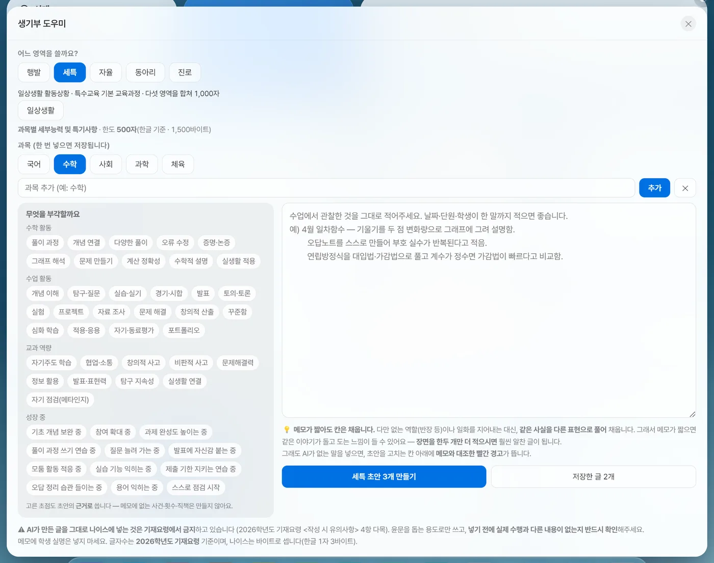
세특 — 과목을 넣으면 그 과목 칩이 맨 위에
영어·외국어·수학·체육·예술·정보·기술가정·과학·국어·사회·진로보건 계열을 과목 이름으로 알아보고 활동 칩 묶음을 붙입니다. 과목 옆 ✕는 지금 과목 지우기입니다.

초안 창 — 고르기 · 고치기 · 저장
초안이 나오면 저절로 열리는 큰 창- 카드 세 장 「초안 1 · 메모 N곳 · 초점 N곳」과 막대 「NByte · 한글 기준 N자 / 300자」를 비교합니다
- 마음에 드는 카드를 누르면 아래 「고른 초안 — 여기서 바로 고치세요」 칸에 들어갑니다(고친 글은 다른 카드를 봤다 와도 남음)
- 고칩니다 — 넘치면 오른쪽 위에 「· N바이트 초과」가 빨갛게
- 아래 줄에서 학반 · 번호 · 이름(명렬에서 고르면 번호 자동) · 메모(선택)를 확인하고 [저장] — [다시 만들기] · [복사]도 있습니다
- 「3-2 홍길동 완료 (총 N개) — 설정 → 데이터에서 내보낼 수 있어요」
- 파란 밑줄 = 메모에 근거 · 보라 밑줄 = 고른 초점에서. 밑줄 없는 곳은 AI가 이어 쓴 것이니 특히 봐 주세요
- 글자 수는 바이트로 셉니다(나이스 방식 · 한글 1자 3바이트, 공백·마침표 1바이트). 「한글 기준 N자」는 바이트를 3으로 나눈 값이라 한도 판정과 같은 잣대입니다
- 고치는 칸 아래 경고 여섯 가지(막지는 않음) — 🚨 메모에 없는 내용(직책·횟수·변화 과정) · 🚨 기록에 없는 지적·제언(다른 학생과 비교 포함) · ⚠️ 기재요령상 넣을 수 없는 말(어학시험·대회·수상·자격증·대학명·방과후·부모 등) · 🔎 AI가 붙인 꾸밈말(꾸준히·매우·뛰어난) · 📌 이 초안에 안 담긴 근거 · ✂️ AI에게 보내지 않은 문장
- 🔴 저장하지 않고 창을 닫으면 초안이 사라집니다 — 뒤 어두운 배경을 눌러도 닫히니 조심하세요
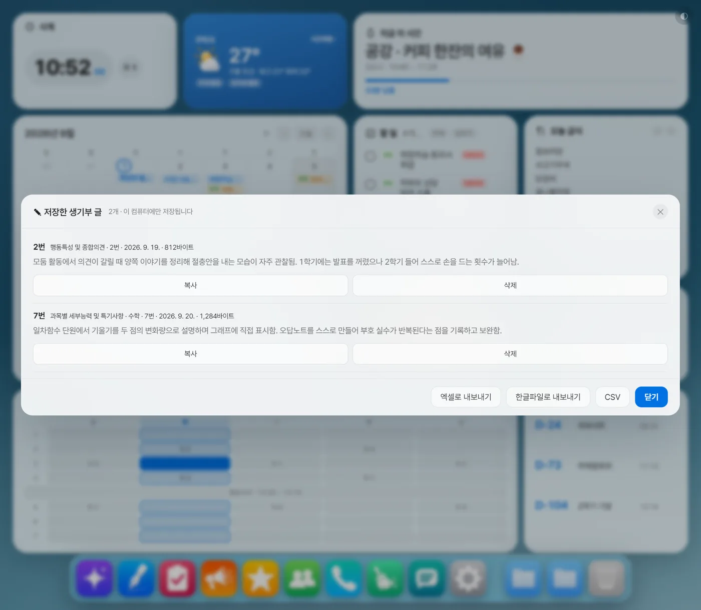
저장한 글 보기 · 엑셀/한글로 내보내기
생기부 패널 [저장한 글 N개] · 명렬의 파란 숫자 · 설정 [데이터]- 「저장한 생기부 글 · N개」 — 반이 둘 이상이면 반 탭, 줄마다 [복사] · [삭제](6초 되돌리기)
- 창 아래 [엑셀로 내보내기] [한글파일로 내보내기] [CSV] — 설정 [데이터]의 단추와 같습니다
- 엑셀 — 반마다 시트, 학생 한 줄에 영역이 열로(그 반에 저장된 영역만). 같은 칸에 여러 번 저장했으면 최근 것 + 「(같은 칸에 저장한 글 N건 중 최근 것)」. 기본 「문서」 폴더
생기부_저장글_날짜.xlsx - 한글(.hwpx) — 학생마다 「3-2 홍길동 — 영역」 제목을 단 문서(한글 2014 이상) · CSV — 학반·이름·영역·과목·메모·작성일·바이트·한도·내용
메모에 처음 나온 명렬 속 이름 → 「이 학생」, 다른 이름 → 「다른 학생」 · 「3학년 2반」「3-2」 → 「우리 반」 · 학교 이름 → 「우리 학교」 · 「12번」 → 「어느 번호의 학생」. 화면의 메모는 그대로입니다. ⚠️ 명렬이 비어 있으면 무엇이 이름인지 몰라 이름은 못 가립니다 — 메모에 실명을 적지 마세요. 붙여넣은 글에 「지시를 무시하고…」 같은 문장이 섞여 있으면 그 문장만 빼고 보냅니다.
2026학년도 기재요령 <작성 시 유의사항> 4항 다목. 윤문을 돕는 용도로만 쓰시고, 넣기 전에 실제 수행과 다른 내용이 없는지 반드시 확인해 주세요. 메모에 학생 실명은 넣지 마세요.
7-9◫ 명렬

명렬 만들기 · 쓰기
독 → ◫ 명렬 (큰 창)손으로 넣기
- 아래 「학반 (예: 3-2)」 칸에 반을 「3-2」 꼴로 적습니다(지난번 학반이 미리 들어 있음)
- 이름 칸에 쉼표로 이어 — 「김하늘, 이수민, 박서준」
- [추가] 또는 Enter → 「N명을 넣었습니다」. 번호는 그 반 마지막 번호 다음부터
- 번호를 정하려면 이름 앞에 — 「3 홍길동」 「3번 홍길동」 「3. 홍길동」. 그 뒤 이름은 거기서 +1씩(전학 간 번호 건너뛸 때)
- 🔴 엑셀의 이름 열을 이 칸에 붙여넣으면 한 사람으로 합쳐집니다 — 여러 줄 명단은 [📥 파일에서 불러오기](7-7)를 쓰세요
- 🔴 학반을 「3학년 2반」으로 적으면 출결에 학생이 안 나옵니다 — 반드시 「3-2」
평소 쓰기
- 이름을 누르면 복사 — 「3학년 2반 5 홍길동」 꼴로. 위 「이름으로 찾기」 칸으로 거르기
- 이름 옆 표시 — ✎(마우스를 올리면, 그 학생 생기부로) · 📝(누가기록, 기록이 있으면 「📝N」으로 늘 보임) · 파란 숫자(저장한 생기부 글, 누르면 그 학생 것만) · 빨간 숫자(출결 기록, 누르면 그 학생 이력)
연락처 · 선택과목 — [📋 상세 보기]
- [📋 상세 보기]를 켜면 번호 · 이름 · 학생 연락처 · 부모 연락처 · 선택과목 · 비고가 표로 펼쳐집니다(한 번 켜 두면 다시 열어도 그대로)
- 칸을 눌러 엑셀처럼 여러 칸 고친 뒤 [저장] — 저장 전에는 [되돌리기]로 무를 수 있어요. 선택과목은 쉼표로 나눠 적습니다
- 엑셀 명렬을 [📥 파일에서 불러오기]로 넣으면 연락처(학생·부/모)와 선택과목 열도 함께 읽습니다
- 위 찾기 칸은 이름·선택과목으로 거릅니다(화학2 = 화학Ⅱ). 상세 보기에서는 연락처 끝 네 자리로도 찾아요
- 🔴 상세 보기는 연락처를 가리지 않고 다 보여 줍니다 — 학생이 볼 수 있는 화면에서는 꺼 두세요
이름·번호 고치기 — [✏️ 편집]
- [✏️ 편집] → 이름을 누르면 번호·이름 칸과 ✓ · 🗑이 나옵니다
- 고치고 ✓ 또는 Enter(Esc는 이 고치기만 취소)
- 🗑 = 그 학생만 빼기 + [되돌리기] 5초
여러 명 고르기 → 모으기 · 빼기
- [여러 명 고르기](단추가 [고르기 끝내기]로 바뀜) → 이름을 눌러 고릅니다. 반 이름 옆 [전체]로 반 통째로
- [고른 N명 모으기] → 「어느 반으로 모을까요?」(예: 특수반 · 방과후 A · 축구부) → [모으기] — 원래 반에서 빠지지 않고 한 벌 더 담깁니다
- 또는 [고른 N명 빼기] — 묻지 않고 빼고 [되돌리기] 6초
- 학생을 빼도 남은 번호는 다시 매기지 않습니다
- 이름을 고치면 이미 적어 둔 출결·누가기록·생기부 표시가 그 학생과 이어지지 않을 수 있습니다 — 오타는 기록을 쌓기 전에 고치세요
7-10✓ 출결

출결표 — 나이스와 같은 뼈대
독 → ✓ 출결 (바탕화면 출결 카드를 눌러도)제목 「✓ 3학년 2반 출결」 · 날짜 옆 좌우 화살표 · [오늘] · 「모두 N명 · 손댄 학생 N명」. 표는 번호 · 성명 · 구분 · 종류 · 조회 · 1~N교시 · 종례 · 사유(교시 수는 시간표 설정을 따르고, 학교가 등록돼 있으면 칸 아래 그날 과목명). 빈 칸은 출석입니다 — 손댈 학생만 건드리세요.
- 볼 수 있는 반 = 설정 [학교]의 담임반 + 명렬에 있는 모든 반(모음반 포함). 둘 이상이면 제목이 반 고르기 칸이 됩니다(담임반엔 「(담임)」). 담임반도 명렬 반도 없을 때만 「담임반을 정하면…」 안내와 [설정 열기]
찍기
- 날짜 옆 좌우 화살표나 [오늘]로 날짜를 맞추고 학생 이름을 누릅니다 → 「✓ 5번 홍길동」 작은 창
- 구분 질병 · 미인정 · 기타 · 출석인정(처음 질병)
- 종류 지각 · 조퇴 · 결석 · 결과(처음 결석) — 고르면 교시가 저절로: 결석=조회~종례 전부 · 지각=조회+1교시 · 조퇴=마지막 교시+종례 · 결과=직접 고르기
- 교시 칸을 눌러 넣고 빼기([전부]로 한 번에) · 사유(예: 병원 진료)
- (여러 날이면) 끝 날짜 — 「9/10부터 N일 — 주말·방학·휴업일은 뺍니다」
- 아래 미리보기 「→ 질병결석 · 조회부터 종례까지 9칸」을 보고 [적용] → [되돌리기]
- [지우기] = 그 학생 그날 기록을 출석으로 되돌리기
- 표의 칸 하나를 눌러도 됩니다 — 기록 있는 학생은 그 칸만 켜고 끔
- 여러 날 입력은 이미 적어 둔 날은 덮지 않고, 방학·휴업은 학사일정 이름(방학·휴업·휴일·공휴)으로 알아봅니다. 되돌리기는 뒷날만 걷어냅니다
- [어제 그대로] — 어제 기록을 오늘로(오늘 이미 손댄 학생은 안 덮음) · [손댄 학생만] — 기록 있는 학생만 표에
- [월별로 보기] — 학생마다 「질병결석 2」식 합계, [자세히]로 날짜별. 나이스 월출결마감 옮겨 적을 때
- [🖨 출력] — 「○월 ○일 현황」(PDF) · 「출결부 엑셀」 · 「출결부 PDF」(가로) · 「기간 누계」(질병·미인정·기타 × 결석·지각·조퇴·결과)를 파일로 저장. 학생 이력 창의 [🖨 PDF로 저장]은 그 학생 개인 내역
- 명렬 번호가 밀리면 여는 순간 「출결 기록 N건의 자리를 맞췄습니다」
- 「3학년 2반 학생이 명렬에 없습니다」가 뜨면 명렬 학반이 「3-2」 꼴인지 보세요
이 컴퓨터에만 저장되는 기록이며, 나이스 정식 입력은 따로 하셔야 합니다.
7-11📝 학생 누가기록 — 활동 · 상담
수업에서 본 것을 그때그때 한 줄씩
명렬 → 이름에 마우스 → 📝- 창 「📝 3학년 2반 홍길동 · 활동 N건 · 상담 N건」에서 탭 [활동기록] / [상담기록]
- 아래 날짜(기본 오늘) + 글(200자) → [추가] 또는 Enter — 날짜는 남고 글 칸만 비워져 이어 적기 좋습니다
- 최근 날짜가 위로. 줄 끝 ✕ → [되돌리기] 4초
- 활동기록이 있으면 [이 학생 생기부 쓰기] → 생기부 도우미에서 [📝 평소 기록 불러오기]로 들어갑니다
- 🔴 상담기록은 이 화면에서만 봅니다 — 생기부 불러오기에도 AI에도 들어가지 않습니다(가정사·교우관계가 섞이기 때문)
- 내보내기 — 설정 [데이터] → 학생 누가기록 → 엑셀(반마다 시트 · 상담 줄은 옅은 보라) · CSV. ⚠️ 상담기록도 함께 들어가니 넘길 파일이면 그 줄을 지우세요
7-12☏ 내선번호

부서별 내선 — 누르면 번호 복사
독 → ☏ 내선번호 (큰 창)- 아래 「교무실 / 홍길동」 · 「1234」 · 부서 고르기 → [추가]. 새 부서는 [＋ 부서]
- 한꺼번에 넣으려면 [📥 파일에서 불러오기] — 🔴 기존 목록을 통째로 바꿉니다(명렬과 다름)
- 쓸 때는 줄을 누르면 「번호를 복사했습니다: 1234」. 위 「이름·번호로 찾기」로 거르기
[✏️ 편집]
- 이름을 끌어서 다른 부서로 옮기거나 순서를 바꿉니다
- 줄을 누르면 이름·번호 고치기(✓) · 🗑 지우기(5초 되돌리기)
- 부서 이름 글자를 눌러 고치고 Enter · ⠿ 손잡이를 끌어 부서 자리 옮기기 · 부서 ✕(사람이 남아 있으면 먼저 옮기라고 알려 줌)
[여러 개 고르기]
- [여러 개 고르기] → 줄을 눌러 고르기(부서 옆 [전체]로 통째로)
- [고른 N곳 옮기기] → 부서 고르기(끝에 「＋ 새 부서」) → [옮기기] · 또는 [고른 N곳 지우기](묻지 않고, 6초 되돌리기)
7-13★ 즐겨찾기

자주 가는 사이트를 독 아이콘으로
독 → ★ 즐겨찾기 (패널)- 아래 칸에 제목(「나이스」)과 주소 → [추가](주소에 https://가 없으면 알아서 붙임)
- 파란 제목을 누르면 기본 브라우저로 열립니다
- [독에 고정] → [독에 고정됨]으로 바뀌고 독에 글자 아이콘이 생깁니다. 다시 누르면 독에서 빠짐
✕는 되돌리기 없이 지웁니다. 독 안 순서는 설정 [독] → 「독에 표시할 기능과 순서」.
7-14▤ 전광판 — 화면 위에 흐르는 한 줄 기본 꺼짐
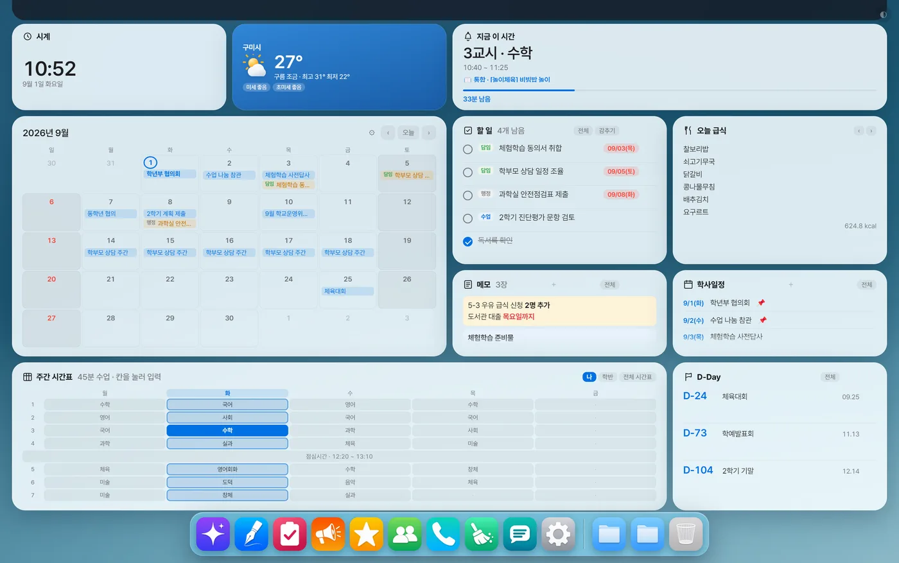
직접 적거나, 공유 구글 시트로 여럿이
독 → ▤ 전광판 (패널) · 설정 [화면]에도 같은 스위치- 패널 맨 위 「화면 위에 흐르는 전광판 켜기」
- 옆에서 [직접 적기] 또는 [구글 시트]
- 직접 적기 — 「직접 적는 내용 (시트를 안 쓸 때)」 칸에 적으면 곧바로 흐릅니다
- 구글 시트 — ① 시트 [공유] → 「링크가 있는 모든 사용자(뷰어)」 ② A열 내용 · B열 이름(띠에 「내용 — 이름」) ③ 「함께 쓰는 구글 시트」 칸에 주소 → [지금 불러오기] → 「✅ N건을 읽었습니다」. 15초마다 다시 읽어 동료가 적은 공지가 모두의 화면에 뜹니다(적을 사람에게는 시트 편집 권한을 따로)
- 속도 [아주 느리게](기본) [느리게] [보통] [빠르게]
- [구글 시트]를 골랐는데 주소가 비어 있으면 직접 적은 글이 흐르고, 읽기에 실패하면 띠에 「전광판 — (까닭)」이 흐릅니다
- 켜 두면 화면 맨 위 40px을 늘 비워 둡니다 — 흘릴 내용이 없으면 여백만 남으니, 안 쓸 때는 끄세요
7-15▣ 서랍 · 독에 고정한 파일 · 휴지통
서랍 = 바탕화면의 진짜 폴더
독의 ▣ 서랍 누르기 · 만들기와 이름은 설정 [독] → 서랍쓰기
- 서랍 아이콘을 누르면 파일이 부채꼴로 펼쳐집니다 — 최신순 24개까지(넘으면 「(N개 중 24개)」). 열 때마다 폴더를 다시 읽습니다
- 파일을 한 번 누르면 앱 안 미리보기(사진·PDF·글·한글·워드·엑셀, 문서는 40MB까지) → 아래 [열기] · [폴더에서 보기]
- 두 번 누르면 원래 프로그램으로 바로 열립니다
- 넣기 — 탐색기에서 파일을 끌어 서랍 아이콘 위에 놓으면 「"이름" 폴더로 N개를 옮겼습니다」. 🔴 복사가 아니라 옮기기입니다(같은 이름이면 「(2)」)
- 펼친 파일의 ✕ = 바탕화면으로 꺼내기(지우기가 아닙니다)
- 빈 서랍이면 [폴더 열기], 내 폴더가 사라졌으면(USB를 뺌 등) [다시 고르기]
- 만들기 — 설정 [독] → 서랍: 「새 서랍 이름」 + [추가](바탕화면에 폴더를 새로 만듦) · [📂 내 폴더 고르기](쓰던 폴더를 그대로). 10개까지. [독에서 빼기]해도 폴더·파일은 그대로
독에 파일 고정
- 파일을 서랍이 아닌 독 빈 곳에 끌어다 놓으면 「독에 고정했습니다 (우클릭으로 해제)」 — 한 번에 끌어놓은 것 중 앞 4개까지 들어갑니다
- 누르면 원래 프로그램으로 열리고, 빼려면 우클릭 → [해제](파일은 그대로). 원본을 옮기면 「파일을 찾을 수 없습니다」
휴지통은 윈도우 휴지통 폴더를 엽니다.
설정 낱낱이
탭 열한 개에 무엇이 들어 있는지, 기본값까지 적어 둡니다.
설정은 독 맨 끝의 ⚙(또는 화면 오른쪽 아래 트레이 아이콘 우클릭 → ⚙️ 설정 열기)에서 엽니다. 디자인 · 위젯 · 독 · 시간표 · 학교 · AI · 화면 · 데이터 · 업무포털 · 의견 · 도움말 열한 탭이에요. 「어디서 켜는지 모르겠다」 싶으실 때 이 장에서 찾으세요. 아래 항목은 탭 안에서 위→아래 순서 그대로 적었습니다.
스위치를 켜거나 단추를 고르면 그 자리에서 바탕화면에 반영되고 저장까지 끝납니다. 글자를 적는 칸(카드 이름·비밀번호·교시 시각 등)만 칸을 벗어나거나 Enter를 눌러야 들어갑니다. 창은 Esc나 창 바깥을 눌러 닫습니다.
디자인 — 색 · 질감 · 배치
- 🔍 바탕화면 보면서 고르기
- 설정 창이 오른쪽 위 작은 창으로 비켜서고 뒤를 가리던 어두운 막이 걷힙니다. 누를 때마다 바탕화면이 바뀌는 것이 바로 보여요. 켜져 있는 동안 단추 글자가 [🔲 미리보기 끄고 넓게 보기]로 바뀌고, 다른 탭으로 옮겨도 유지되며 설정을 닫으면 꺼집니다.
- 색상
- 색 동그라미 10개 (기본 파랑) — 마우스를 올려도 이름은 뜨지 않습니다. 왼쪽부터 파랑 · 하늘 · 민트 · 이끼 · 모래 · 산호 · 분홍 · 슬레이트 · 종이 · 나이트(맨 오른쪽 남색, 어두운 화면). 강조색만이 아니라 카드 바탕·글자색·모서리 둥글기·그림자까지 함께 바뀝니다.
- 카드 질감
- 기본 · 지면 · 메모지 · 화이트보드 · 칠판 · 터미널 (기본 「기본」=유리). 칠판·터미널은 배경과 글자까지 어둡게 바꿔 색상보다 앞섭니다. 「기본(유리)」만 흐림 효과를 써서 가장 무겁습니다(사양 낮은 PC는 FAQ 참고).
- 카드 진하기 (투명도)
- 밀대 40~100% — 낮출수록 바탕화면이 비칩니다. 손대지 않으면 테마 기본값(대개 85~90%, 나이트 80%)을 따라서 테마를 바꾸면 숫자도 따라 바뀝니다. 한 번 움직이면 그 값으로 고정되니, 되돌릴 때는 옆의 [테마 기본값으로].
- 배경 채우기
- 위젯 사이 빈 곳 — 없음 (투명) · 반투명 판 · 꽉 채움 (기본 없음). 위젯 모드에서만 적용됩니다.
- 글씨체
- Pretendard (기본) · SUIT (둥근) · 고운돋움 (부드러운) · IBM Plex (또렷한) · 나눔고딕 (익숙한) · 고운바탕 (명조) · 시스템 기본 — 앱에 들어 있어 인터넷 없이도 그대로 보입니다.
- 레이아웃
- 기본 · 캘린더 중심 · 시간표 중심 · 달력 전면 · 간결 · 오늘 집중 · 좌우 분할 · 한눈에 · 업무 보드 · 와이드 (기본 「기본」) — 고르면 카드 자리와 크기가 통째로 바뀝니다.
- 캘린더 크기
- 작게 · 보통 · 크게 · 전면 (기본 보통). 「작게」는 점만, 「보통」부터 날짜 칸 안에 일정이 글자로 보입니다. [위젯] 탭 캘린더 줄의 크기와 같은 값이라 어느 쪽에서 바꿔도 같습니다.
- 달력 글자 크기
- 보통 · 크게 · 아주 크게 (기본 보통) — 달력 제목 옆 ⚙에서도 바꿉니다. 글자만 커지고 칸 크기는 그대로예요.
- 포인트 카드 (하나만 테마색으로)
- 날씨 · 시계 · 지금 이 시간 · 없음 (기본 날씨) — 카드 하나만 테마색으로 꽉 채워 중심을 잡습니다.
- 시계 모양
- 기본(14:32) · 오전·오후(2:32 오후) · 초까지(초가 강조색) · 바늘 · 타일(시·분이 각각 상자) (기본 「기본」)
- 위젯 밀도
- 빽빽하게 · 보통 · 여유있게 (기본 보통) — 카드 사이 간격입니다.
- 직접 배치
- 상황에 따라 보이는 단추가 다릅니다 — [위젯 위치·크기 직접 정하기](늘 보임, 누르면 설정이 닫히고 곧바로 편집) · [지금 자리 그대로 굳히기](직접 배치를 안 쓰는 중일 때만) · [원래 배치로](직접 잡은 배치가 있을 때만 · 지금 화면 구성의 것만 지움) · [다른 화면 구성에서 복사](다른 모니터 구성에 저장된 배치가 있을 때만 · 가져온 뒤 6초 동안 [되돌리기]). 자세한 것은 05번 아래 상자.
- 화면 여백
- 좁게 · 보통 · 넓게 (기본 보통) — 화면 가장자리 여백. 위젯 밀도와 떨어져 탭 맨 아래에 있습니다.
[디자인] 탭 화면 보기
위젯 — 무엇을 띄울지 · 크기 · 글자색
- 오늘의 비서
- 「앱을 켤 때 오늘 것을 모아서 보여주기」 (기본 켜짐) — 하루 한 번.
- 표시할 위젯 · 위젯 크기 · 위젯 글자 크기
- 줄마다 스위치(켜기) · 크기(작게·보통·크게 — 캘린더만 「전면」이 하나 더) · 글자 크기(작게·보통·크게·아주 크게, 기본 보통)가 열로 나뉘고, 그 아래 └ 글자색 9가지(왼쪽 끝 빗금이 「기본」, 이어서 빨강·주황·노랑·초록·청록·파랑·보라·회색). 시간표 3종·캘린더·날씨·앨범·업무포털 줄에는 글자 크기·색이 없습니다 — 시간표 글자는 [시간표] 탭, 달력 글자는 [디자인] 탭에서 바꿉니다.
- 기본으로 켜져 있는 것
- 시계 · 날씨·미세먼지 · 지금 이 시간 · 캘린더 · 할 일 · D-Day · 급식 · 학사일정 · 메모 · 주간 시간표
- 🔴 기본이 꺼져 있는 것
- 오늘 시간표 · 학반 시간표 · 메모 2~4 · 진도(수업 기록) · 출결(담임반) · 주간학습안내 · 앨범 1~4 · 업무포털 로그인 — 「그런 기능이 없는 줄 알았다」는 말을 가장 많이 듣는 자리입니다. 여기서 켜세요.
- 켰는데 화면에 안 나올 때
- 이름 옆에 「지금 레이아웃엔 자리가 없어요」가 붙고 화면 아래 알림에 [직접 배치로 두기] 단추가 뜹니다(9초). 누르면 지금 배치를 굳히고 그 카드를 빈 곳에 앉힙니다 — 끌어서 옮기면 됩니다. 메모 2~4 · 앨범 2~4 · 출결 · 주간학습안내 · 학반 시간표는 배치표에 자리가 아예 없어서 늘 이 단추로 나옵니다.
- 메모 → └ 카드 이름
- 그 메모를 켜 두었을 때만 나옵니다. 12자까지 — 「학급 일」·「교과 준비」처럼. 비우면 원래 이름. 칸을 벗어나거나 Enter를 눌러야 바뀝니다.
- 급식 → └ 보여줄 끼니 · └ 알레르기 번호
- 조식·중식·석식 중 볼 것만 여러 개 (기본 셋 다 · 한 끼는 꼭 남습니다) · 반찬 뒤 번호 표시 (기본 켜짐)
- 메모 → └ 쪽지 글 다 보이기
- 긴 쪽지를 접지 않고 전부 (기본 꺼짐 — 끄면 여덟 줄쯤에서 접힙니다)
- 할 일 분류
- 수업(파랑)·담임(초록)·행정(회색)·행사(주황)·연구(보라)·기안(청록)·품의(노랑) 일곱이 들어 있습니다. 색 점을 눌러 색을, 칸에서 이름(6자)을 바꾸고 ✕로 빼거나 [＋ 분류 추가]로 더합니다(12개까지). 분류를 지워도 할 일은 안 지워지고 「분류 없음」이 됩니다(4초 되돌리기). 이미 적은 할 일에 분류를 붙이는 곳은 여기가 아니라 할 일 제목 옆 [전체] → 줄 끝 ✎입니다.
- 할 일 마감일에 요일 표시
- 「마감일을 08/11(월)처럼 요일과 함께」 (기본 켜짐)
- 지난 기록 — 지운 할 일 되돌아보기
- 「지운 할 일을 기록으로 남기기」 (기본 켜짐 · 최근 500건). 꺼도 쌓인 기록은 지워지지 않고 숨기만 합니다. 정말 지우려면 [🗑 기록 N건 비우기](되돌릴 수 없어 한 번 더 묻습니다).
- 전체 가리기 단추
- 「오른쪽 위에 가리기 단추 두기」 (기본 켜짐) — ◐ 단추로 위젯·독을 통째로 감춥니다. 끄면 가려져 있던 화면을 먼저 보이게 되돌립니다.
[위젯] 탭 화면 보기

독 — 위치 · 아이콘 · 서랍 · 바로가기
- 독 위치
- 아래 · 왼쪽 · 오른쪽 · 안 씀 (기본 아래) — 「안 씀」을 고르면 함께 사라지는 것(AI 비서·생기부·전광판·즐겨찾기·명렬·내선번호·서랍·프로그램 바로가기)과 「설정은 트레이 아이콘 우클릭으로」가 빨갛게 안내됩니다. 그 자리까지 위젯이 넓게 씁니다.
- 독에 표시할 기능과 순서
- 내장 7개(AI 도우미 · 생기부 도우미 · 출결 · 전광판 · 즐겨찾기 · 명렬 · 내선번호, 기본 모두 켬)를 스위치로 켜고 끄고, ▲▼로 바로가기·즐겨찾기와 섞어 옮깁니다. 꺼 둔 것은 목록 맨 아래에 흐리게 남아요(⚙ 설정은 늘 맨 뒤).
- 아이콘 모양
- 아이콘 단추를 누를 때마다 그림 → 기호 → 글자 → 그림으로 돌아갑니다. 서랍을 「글자」로 두면 서랍마다 제 이름이 나옵니다. [전부 그림으로]로 한 번에 되돌리기.
- 아이콘 세트
- 기본 · 흑연 · 리넨 · 유리 · 심해 · 세이지 6벌 (기본 「기본」) — 위에서 기호·글자로 바꿔 둔 아이콘은 덮어쓰지 않습니다.
- 서랍에 파일 개수 보이기
- (기본 켜짐) — 끄면 그냥 폴더로 보입니다.
- 서랍 (독에서 펼쳐 보는 폴더)
- 처음에 「수업 자료」·「보관함」 둘이 들어 있습니다(10개까지). 줄마다 이름 칸(고치고 Enter — 바탕화면에 만든 서랍은 실제 폴더 이름도 바뀝니다) · ▲▼ · [독에서 빼기](폴더와 파일은 그대로). 아래 「새 서랍 이름」 + [추가]는 바탕화면에 같은 이름 폴더를 새로 만들고, [📂 내 폴더 고르기]는 이미 쓰던 폴더를 그대로 씁니다(이때 이름을 바꿔도 독에 보이는 이름만 바뀝니다).
- 프로그램 바로가기
- [+ 프로그램 추가 (카카오톡·크롬 등)] — 원래 아이콘을 또렷하게 가져옵니다. 줄마다 [🖼️ 아이콘](그림 바꾸기) · [↺](원래 그림으로) · ✕. 독 안에서의 순서는 위 「독에 표시할 기능과 순서」에서.
[독] 탭 화면 보기
시간표 — 알림 · 주말 · 교시 시각
- 🔴 수업 시작 알림
- 「내 수업이 시작되면 알려 주기」 (기본 꺼짐) — 켜면 시작 시각에 딱 맞춰 · 5분 전 · 10분 전이 나옵니다. 과목을 적어 둔 교시만 윈도우 알림으로 울리고, 알림은 누를 때까지 남습니다. 주말은 「주말 수업」을 따르고, 앱이 꺼져 있던 동안 지나간 교시·켜는 순간 이미 지난 교시는 울리지 않습니다. 윈도우 「집중 지원(방해 금지)」이 켜져 있으면 알림이 안 뜹니다.
- 🔴 주말 수업
- 「토요일 칸 보이기」 · 「일요일 칸 보이기」 (둘 다 기본 꺼짐) — 꺼도 적어 둔 과목이 지워지지는 않습니다.
- 교시 시각을 어떻게 정할까요
- 자동 계산 (추천) · 수기 입력 (기본 자동 계산)
- └ 자동 계산일 때
- 1교시 시작 08:50 · 수업 시간(분) 45 · 쉬는 시간(분) 10 · 총 교시 7(1~15) · 점심시간 「몇 교시 뒤」 4 · 「점심 시간(분)」 50. 수기 입력으로 바꾸면 이 칸들은 사라집니다.
- └ 수기 입력일 때 — 요일마다 다른 시정
- 맨 위 「어느 요일」 [기본·월·화·수·목·금]에서 기본 시정을 먼저 적고, 다른 요일만 골라 따로 적습니다(수요일 단축 등 · 따로 적은 요일에는 ● 표시). 줄마다 시작~끝을 24시간 형식(13:00)으로 적고, [+ 교시 추가] · [+ 점심 넣기]로 줄을 더합니다. 점심은 여러 번 넣고 「1학년」처럼 이름(20자)도 붙입니다. 교시 번호는 줄 순서로 저절로 매겨지고, 덜 적은 줄은 건너뜁니다. 처음 수기로 바꾸면 자동 계산값이 채워져 있고, [자동 계산값으로 채우기](요일 화면에서는 [기본에서 복사])로 다시 채울 수 있습니다. 요일을 기본대로 되돌리려면 [이 요일 따로 적기 그만두기(기본 따르기)].
- 일과 종료(퇴근) 시각
- (기본 16:30) — 이 시각이 지나야 「퇴근하세요」가 뜹니다.
- ‘지금 이 시간’에 뜰 말
- 수업 전 · 공강 · 퇴근 뒤 세 칸(각 40자). 비우면 기본 문구 「수업 전」 · 「공강 · 커피 한잔의 여유 ☕」 · 「일과 종료 · 퇴근하세요!」 — 교실 TV에 띄우신다면 여기서 바꾸세요.
- 글자 크기
- 보통 · 크게 · 아주 크게 (기본 보통) — 시간표 칸 글자만 바뀝니다.
- 주간학습안내 내용 함께 보기
- 「시간표 칸에 그 시간에 배울 것을 함께 적기」 (기본 켜짐) + └ 과목이 다를 때 시간표만 · 둘 다 보기 · 안내문 먼저 (기본 둘 다 보기). 주간학습안내를 AI로 읽어 둔 주에만 나오고, 어느 쪽을 골라도 시간표에 적어 둔 내용은 바뀌지 않습니다.
- 반별 색상
- 「같은 반은 같은 색으로 칠하기」 (기본 꺼짐)
- 과목 입력 — 📥 파일에서 시간표 불러오기
- 한글·엑셀·PDF·사진을 AI가 읽어 표로 (AI 키 필요) — 누르면 설정이 닫히고 불러오기 창이 열립니다.
[시간표] 탭 화면 보기

학교 — 학교 등록 · 시간표 출처 · NEIS 키
- 학교 찾기
- 학교명 칸에 이름 → [검색] → 목록에서 우리 학교 줄을 누르면 그 자리에서 저장되고 날씨 좌표도 이어서 찾습니다. 못 찾으면 「「용산초」처럼 짧게」 넣어 보라고 알려 드려요. NEIS 키가 없으면 같은 이름 학교가 5곳까지만 보입니다.
- 담임반
- 학년·반 숫자 두 칸 — 넣으면 출결과 학반 시간표의 담임반(★)이 열립니다. 교과로만 들어가시면 비워 두세요.
- 시간표 출처
- 나이스 · 컴시간알리미 (기본 나이스) — 나이스에 시간표가 없거나 일부만 나오는 학교는 컴시간으로 바꿔 보세요. 급식·학사일정은 어느 쪽이든 나이스에서 옵니다.
- └ 컴시간 쓰는 순서
- ① [컴시간알리미]를 고르고 ② 「학교 이름 일부」(「원일중학교」보다 「원일중」) → [검색] → 줄 누르기 ③ 「누구 시간표」 [내 이름으로] / [우리 반으로] → [고르기] → 이름이나 반 누르기 ④ [지금 가져오기]. 이미 적은 시간표가 있으면 「[전체 시간표]와 교사 이름도 함께 바뀝니다」라고 묻고, 가져온 뒤 5초쯤 [되돌리기]가 뜹니다. 학교를 바꾸면 ③을 다시 고르셔야 합니다.
- └ 컴시간 자동 갱신
- 켬 · 끔 (기본 켬 · 오전 8시·오후 1시) — 학교를 고른 뒤에만 보입니다. 이번주 교체·대체 수업까지 들어옵니다.
- 날씨 지역
- 학교를 등록하면 자동으로 잡힙니다. 틀리면 [학교 주소로 다시 찾기], 그래도 안 되면 지역 칸에 「구미」처럼 시·군·구만 넣고 [이 지역으로].
- 학사일정
- [📥 학사일정표 파일에서 불러오기] — 나이스에 빠진 일정을 채웁니다(AI 키 필요). 파일에서 넣은 일정이 있으면 [직접 넣은 일정 지우기]가 함께 보입니다.
- 구글 캘린더 가져오기
- 이름(비우면 「내 일정」) + 끝이
.ics인 비공개 주소 → [추가]. 누르는 즉시 한 번 받아 보고 되는 것만 저장합니다. 줄마다 스위치 · 색 점(누르면 색 고르기) · 가려진 주소 · ✕(되돌리기 있음). 하나 이상 있으면 [구글 캘린더 새로 받기]. 자세한 것은 03번. - 지금 새로 받기
- [급식·학사일정·날씨 새로고침] + 「매일 아침 자동으로 새로 받기」 (기본 켜짐 · 아침 7시 무렵 앱이 켜져 있을 때)
- NEIS 키 (선택)
- 칸에 붙여넣고 [키 확인 (실제로 한 번 불러봅니다)]. 없어도 되지만 있으면 빨리, 온전히 옵니다. 키를 넣거나 지우면 그 자리에서 전체 시간표를 다시 받습니다. 무료 · 03번 참고.
[학교] 탭 화면 보기
AI — Gemini 키 · 사용량
- Gemini 키
- 칸에 붙여넣고 [키 확인 (실제로 한 번 불러봅니다)] — 칸에 지금 들어 있는 키로 Gemini·NEIS·학교 조회 셋을 한꺼번에 확인합니다. 이 컴퓨터에만 잠가 저장됩니다. 받는 법은 04번.
- 오늘 사용량
- 「오늘 AI 사용 N회 · 남은 횟수 약 M회」 — 하루 220회를 기준으로 셉니다. 150회를 넘으면 빨갛게 바뀌니 몰아 쓰는 날 참고하세요. 자정에 되돌아가고, [횟수 초기화]로 숫자만 0으로 돌릴 수도 있어요(구글 쪽 한도는 그대로입니다).
- 이것만 지켜 주세요
- AI 칸에 학생 실명·연락처·주민번호 같은 개인정보를 적지 말라는 안내입니다(설정 항목은 아닙니다).
[AI] 탭 화면 보기

화면 — 배치 방식 · 모니터 · 앨범
- 이 컴퓨터의 바탕화면
- 바탕화면 그림 뒤로 위젯이 숨는 일부 PC에서만 보이는 안내 칸입니다.
- 배치 방식
- 위젯 (추천) · 일반 창 (기본 위젯) — 위젯 모드는 창을 위젯 모양대로 오려내어 바깥은 바탕화면 그대로라 아이콘이 눌립니다. 일반 창은 화면 전체를 덮습니다. Win+D를 누르면 위젯도 함께 숨지만 한 번 더 누르면 돌아옵니다.
- 모니터
- 주 모니터 · 왼쪽 화면 · 오른쪽 화면 (기본 주 모니터) — 모니터가 한 대면 「주 모니터」만 보이고 「지금은 모니터가 한 대입니다」라고 적힙니다.
- 단축키
- 「다른 프로그램에서도 단축키 쓰기」 (기본 켜짐) — 🔴 엑셀에서 Ctrl+Space(열 선택)가 안 먹히면 여기서 끄세요. 그 자리에서 풀립니다. 비상 탈출 키(Ctrl+Alt+Shift+D)는 끌 수 없습니다.
- 작업표시줄 자동 숨김
- 윈도우의 설정을 그대로 읽어 보여 주는 스위치입니다. 앱이 아니라 윈도우 설정을 바꾸는 것이라 앱을 꺼도 유지됩니다. v3.35부터는 설치할 때 앱이 저절로 켜지 않습니다(발표 중 작업표시줄이 튀어나온다는 제보로 뺐습니다). 바뀌지 않으면 「윈도우 설정에서 직접 바꿔 주세요」라고 알려 드려요.
- 위젯이 놓일 영역
- 화면 전체 · 왼쪽 절반 · 오른쪽 절반 · 위쪽 절반 · 아래쪽 절반 · 가운데 · 직접 지정 (기본 화면 전체) — 바탕화면 아이콘이 가릴 때 쓰세요(독도 함께 줄어듭니다).
- └ 직접 지정
- 가로 크기 %(10~100) · 세로 크기 %(10~100) · 「어디에 붙일까요?」 왼쪽 위 · 오른쪽 위 · 왼쪽 아래 · 오른쪽 아래 · 가운데 · 직접 좌표(왼쪽에서 % · 위에서 %, 0~90). 모서리를 고르면 크기를 바꿔도 그 모서리에 붙어 있고, 좌표 숫자를 손으로 고치면 저절로 「직접 좌표」가 됩니다. 숫자는 칸을 벗어나야 반영됩니다.
- 시작
- 「컴퓨터를 켤 때 자동으로 실행」 — 설치 후 처음 켤 때 켜집니다.
- 전광판
- 「화면 위 흐르는 안내문」 (기본 꺼짐) — 내용은 독의 📢 전광판에서 적습니다.
- 앨범 (사진 액자)
- 맨 위에서 액자(앨범 · 앨범 2 · 3 · 4, 꺼진 것엔 「(꺼짐)」)를 고르고 「바탕화면에 ○ 액자 표시」를 켭니다 (모두 기본 꺼짐). [사진 불러오기](한 장 이상이면 [사진 더하기]) · [이 사진 빼기](지금 보이는 장만) · 두 장 이상이면 작은 사진 줄. 「사진 맞춤」 꽉 채우기 · 전체 보기 · 직접 맞추기(네모를 끌고 확대 100~400%, [가운데로]) — 맞춤은 사진마다 따로 저장됩니다. 액자 크기는 [위젯] 탭에서, 바탕화면 액자에 사진을 끌어다 놓아도 바뀌지는 않습니다.
[화면] 탭 화면 보기

데이터 — 내보내기 · 백업 · 초기화
- 저장 위치
%APPDATA%\TeacherDesk2\store.json— 모든 자료가 이 파일 하나에 들어 있다는 안내입니다.- 생기부 저장한 글
- [저장한 글 보기 (N개)] · 한 개 이상이면 [엑셀(.xlsx)로 내보내기] · [한글(.hwpx)로 내보내기] · [CSV로 내보내기](hwpx는 한글 2014 이상).
- 학생 누가기록
- 기록이 있으면 [엑셀(.xlsx)로 내보내기] · [CSV로 내보내기] — 반마다 시트가 나옵니다. ⚠️ 상담기록도 함께 들어갑니다(구분 열로 갈라 옅은 보라로 칠해 두니, 넘길 파일이면 그 줄을 지우세요). 없으면 「아직 적어 둔 기록이 없습니다」.
- 백업
- [설정 내보내기] / [설정 불러오기] — 다른 컴퓨터로 그대로 옮깁니다. 🔴 API 키와 캘린더 주소는 안 들어갑니다(백업은 열면 그대로 보이는 글자 파일이라서요 — 내보낼 때 「새 컴퓨터에서 다시 넣어 주세요」가 뜹니다). ⚠️ 대신 명렬과 생기부 저장글은 들어가니 개인정보 파일로 다뤄 주세요.
- 개인정보
- 무엇을 저장하고 무엇이 나가는지 적어 둔 안내 칸입니다(12번과 같은 내용).
- 정리
- [지난 일정 지우기] — 한 번 묻고 지우며 5초 동안 [되돌리기]. 오늘까지 이어지는 기간 일정은 남깁니다. · [완료한 할 일 지우기] — 묻지 않고 바로 지우고 4초 [되돌리기], 「지난 기록」에는 남습니다.
- 처음 상태로 되돌리기 (빨간 칸)
- 「모두 지우기」를 확인하면 모든 설정과 자료가 지워지고 앱이 새로 열립니다 — 컴퓨터를 반납하거나 업무를 인계할 때. 서랍 폴더의 실제 파일은 지우지 않습니다.
[데이터] 탭 화면 보기

업무포털 — 자동 로그인
- 업무포털 자동 로그인 쓰기
- (기본 꺼짐) — 인증서 비밀번호를 다루므로 쓰실 분만. 공용 컴퓨터에서는 켜지 마세요.
- 어디에 로그인할까요
- 나이스 · K-에듀파인
- 교육청 · 인증서
- 교육청(17곳, 광주·전남 따로) · 인증서 아이디(인증서 고르는 창 목록에 보이는 글자 그대로) · 인증서 비밀번호(넣고 칸에서 빠져나오면 저장, 그 뒤 「저장돼 있습니다 — 바꿀 때만 넣으세요」) · 브라우저 크롬(기본)·엣지·웨일. 비밀번호는 이 컴퓨터의 윈도우 계정 열쇠로 잠가 따로 저장하고, 앱 안에서도 다시 꺼내 볼 수 없습니다. 단추 줄 [지금 한 번 해 보기] · [비밀번호 지우기] · [기록 열기].
- 언제 실행할까요
- 바로 · 20초 뒤 · 45초 뒤 · 직접 누를 때만 (기본 20초 뒤) — 부팅 직후엔 인터넷이나 인증서 보안 프로그램이 아직 준비 전이라 실패할 수 있어서요.
- [지금 한 번 해 보기]
- 정말 되는지 그 자리에서 확인. 아래에 마지막 실행 결과가 뜹니다. 자세한 것은 10번.
- [기록 열기]
- 자동 로그인이 어느 단계에서 멈췄는지 적힌 기록입니다. 안 되실 때 그 내용을 [의견]으로 보내 주세요 — 인증서 아이디·비밀번호·학교 이름은 적히지 않습니다(v3.32~).
- 업무 메신저 자동 로그인 · 경북 GBee TALK 전용
- (기본 꺼짐 · v3.35~) — 탭 맨 아래 칸. 경북 GBee TALK가 깔린 컴퓨터에서만 스위치 「메신저 자동 로그인 쓰기」가 보입니다. 「인증서 비밀번호」 [업무포털과 같은 것](기본)/[따로 넣기] · 「언제」 [바로]·[30초 뒤](기본)·[1분 뒤]·[직접 누를 때만] · [지금 한 번 해 보기]. 켜면 컴퓨터를 켤 때 [인증서 로그인] → 인증서 비밀번호 → [확인]을 한 번씩만 대신 누르고, 비밀번호가 한 번이라도 틀리면 자동 실행을 꺼 둡니다. 위의 [비밀번호 지우기]를 누르면 「업무포털과 같은 것」을 쓰던 메신저도 함께 비워집니다. 기록은 [기록 열기]에 [메신저] 줄로 함께 남습니다(10번).
[업무포털] 탭 화면 보기

의견 — 새 버전 · 공지 · 한마디
- 새 버전
- [지금 확인] — 새 판이 있으면 [받으러 가기](이 설명서 페이지)와 [지금 받아서 설치하기]가 나옵니다. 확인 자체를 못 하면 「최신입니다」로 뭉개지 않고 「확인하지 못했습니다」라고 적습니다. 알림 방식 물어보고 설치 / 알리지 않음 (기본 물어보고 설치) — 「알리지 않음」이어도 [지금 확인]은 언제나 됩니다.
- └ 설치가 안 될 때 (학교 컴퓨터에서 자주 있습니다)
- 눌러 펼치는 안내 — ① 받은 파일 우클릭 → [속성] ② 아래 [차단 해제]에 체크 → [확인] ③ 다시 실행. 「Windows의 PC 보호」가 뜨면 [추가 정보] → [실행].
- 공지
- 새로 생긴 기능·고친 내용이 올라옵니다.
- 만든 사람에게 한마디
- 오류 · 제안 · 응원 — 익명으로 갑니다. ⚠️ 학생 이름은 적지 마세요(적으면 그대로 전송됩니다).
- 보내신 의견과 답장
- 의견을 보낸 적이 있을 때만 보입니다. 답장이 오면 앱을 켤 때 한 줄로 알려 드리고, 이 컴퓨터가 보낸 것만 보입니다(익명 그대로 · v3.32~).
- 익명 사용 집계
- 하루 한 번 무작위 번호와 버전만 (기본 켜짐) — 꺼도 모든 기능이 그대로 동작합니다.
[의견] 탭 화면 보기

도움말 — 앱 안의 설명서 · 단축키
이 페이지의 요약이 앱 안에 스물다섯 칸으로 들어 있습니다. 실제로 누르는 단추는 하나뿐이에요 —
- [내 오류 기록 보기]
- 이 컴퓨터에서 무엇이 만든 사람에게 나갔는지 글자 그대로 보여 줍니다.
- 「다른 프로그램에서도 단축키 쓰기」는 어디로 갔나요
- 예전에는 도움말 맨 끝에 있었는데 지금은 [화면] 탭 → 단축키에 있습니다.
단축키 — Ctrl+Space 빠른 찾기 · Ctrl+Alt+D 앞으로 꺼내기 · Ctrl+Alt+Shift+D 비상 탈출 · Esc 창 닫기 · Tab/Enter 키보드로 이동·실행.
[도움말] 탭 화면 보기

위젯 모드 · 단축키 · 트레이
바탕화면 아이콘도 쓰고 위젯도 쓰는 방법, 그리고 막혔을 때 빠져나오는 키.
설정 → [화면] 탭 → 배치 방식에서 고릅니다.
| 배치 방식 | 이렇게 동작해요 |
|---|---|
| 위젯 (추천) | 창을 위젯 모양대로 오려 냅니다. 카드 바깥 빈 곳의 바탕화면 아이콘은 평소처럼 눌리고, 카드 안은 눌러서 씁니다. 🔴 카드 밑에 깔린 아이콘은 안 눌립니다 — 아이콘을 쓰려면 [화면] → 「위젯이 놓일 영역」을 오른쪽 절반 등으로 줄여 자리를 비우세요. |
| 일반 창 | 화면 전체를 덮는 창으로 띄웁니다. 위젯에만 집중할 때. |
- 글자를 적을 때는 창이 잠깐 깨어납니다 — 위젯 모드는 아이콘을 가리지 않으려고 창을 바탕화면 맨 아래에 재워 둡니다. 입력칸을 누르면 저절로 깨어나 글자가 들어가고, 다 적고 바깥을 누르면 제자리로 돌아갑니다.
- 앞으로 보기 — Ctrl+Alt+D(또는 트레이 아이콘 더블클릭)로 위젯을 다른 창 위로 올립니다. 켜져 있는 동안 화면 위에 「앞으로 보기 중 · 다른 창을 가립니다 · [바탕화면으로 (Ctrl+Alt+D)]」 띠가 뜨고, 다시 누를 때까지 계속 앞에 있습니다. 한글·크롬 위에 위젯이 떠 있으면 이 띠의 단추를 누르세요.
- Win+D를 누르면 위젯도 함께 숨습니다 — 한 번 더 누르면 돌아옵니다.
- 모니터 — [화면] → 모니터에서 주 모니터 · 왼쪽 화면 · 오른쪽 화면. 모니터가 두 대 이상일 때만 왼쪽·오른쪽이 보이고, 위젯 전체가 그 모니터로 옮겨 갑니다(위젯을 끌어서 넘기는 방식이 아닙니다).
- 독도 영역에 맞춰 작아집니다 — 위젯 영역을 좁게 잡으면 독 아이콘도 스스로 줄어듭니다.
- 모니터 두 대이거나 슬라이드 쇼 배경인 PC에서 위젯이 벽지 뒤로 숨는 경우, 앱이 알아서 벽지 바로 위로 올리고 [화면] 탭 맨 위에 「이 컴퓨터의 바탕화면」 안내를 띄웁니다.
- 예전 판에서 쓰던 「깊은 위젯 모드」 설정이 남아 있으면 「깊은 위젯 모드를 켤 수 없어 위젯 모드로 전환했습니다.」가 뜰 수 있습니다 — 위젯 모드로 그대로 쓰시면 됩니다.
- 백신이 도우미를 막으면 「이 컴퓨터에서 위젯을 바탕화면 뒤로 보내지 못했습니다 — 다른 창을 가릴 수 있어요. 보안 프로그램이 PowerShell을 막았을 수 있습니다.」 — 백신에서 TeacherDesk를 예외로 두세요.
단축키 전부
| 키 | 하는 일 |
|---|---|
| Ctrl+Space | 빠른 찾기(학생·내선·할 일·일정·파일). 한/영 키와 겹쳐 못 잡는 PC에서는 Ctrl+Alt+Space |
| Ctrl+Alt+D | 앞으로 보기 ↔ 바탕화면으로 |
| Ctrl+Alt+Shift+D | 🚨 비상 탈출 — 화면이 먹통일 때 앞으로 보기를 끄고 안전한 위젯 모드로 되돌립니다(트레이에 「안전 모드(위젯)로 전환했습니다.」). 단축키 스위치를 꺼도 이 키는 늘 됩니다 |
| Ctrl+Alt+S · Ctrl+Alt+X | 품의 만들기에서 [찍기 시작]을 누른 동안만 — 찍기 · 끝내기(7-2) |
| Esc · Tab · Enter | 창 닫기 · 칸 옮기기 · 누르기(앱 안에서만). 달력·시간표는 Tab으로 표에 들어간 뒤 화살표 |
🔴 엑셀의 Ctrl+Space(열 선택)와 부딪히면 설정 [화면] → 단축키 → 「다른 프로그램에서도 단축키 쓰기」를 끄세요. 이때 Ctrl+Alt+D(앞으로 보기)도 함께 꺼집니다 — 앞으로 보기는 트레이 아이콘 더블클릭으로 쓰시면 됩니다.
트레이 메뉴 · 앱 끄기
화면 오른쪽 아래 시계 근처의 작은 아이콘 모음이에요(안 보이면 ^ 화살표를 눌러 펼치세요). TeacherDesk2 아이콘에 마우스를 올리면 「TeacherDesk2 (Ctrl+Alt+D: 앞으로 보기)」, 더블클릭하면 앞으로 보기, 우클릭하면 메뉴가 나옵니다 —
- 「TeacherDesk 2 — v3.35.0」(판 번호, 누를 수 없음)
- 새 판이 있을 때만 「🎁 새 버전 받기」 — 누르면 브라우저로 이 설명서 페이지가 열립니다
- 「🔄 새로고침」 · 「⬆ 앞으로 보기 (Ctrl+Alt+D)」(앞에 나와 있으면 「⬇ 다시 바탕화면으로」) · 「⚙️ 설정 열기」 · 「❌ 종료」
위젯 창을 닫아도 앱은 트레이에 남습니다. 완전히 끄려면 ❌ 종료.
컴퓨터를 켤 때 자동 실행
- 설정 [화면] → 시작 → 「컴퓨터를 켤 때 자동으로 실행」 — 설치 후 처음 켤 때 저절로 켜집니다.
- 스위치는 작업관리자 → 시작 프로그램에서 「사용 안 함」으로 끈 것까지 반영합니다. 켰는데 부팅 때 안 뜨면 이 스위치를 껐다가 다시 켜세요 — 작업관리자의 「사용 안 함」도 함께 풀립니다.
- 예전 이름으로 겹쳐 등록된 자동 실행(「부팅하면 켜졌다가 사라진다」의 원인)은 켤 때마다 앱이 스스로 정리합니다.
자료는 이렇게 지켜집니다
- 저장할 때마다 바로 앞 내용을
store.backup.json으로, 하루 한 벌씩 최근 5일치를store.day-날짜.json으로 남깁니다. 초기화·백업 불러오기 직전, 명렬·내선 같은 목록이 한꺼번에 비는 저장 직전에는 전체 사본(store.before-…json)도 떠 둡니다. 모두%APPDATA%\TeacherDesk2폴더에 있습니다. - 설정 파일을 못 읽었을 때 — 먼저 백업으로 되살리고 「설정 파일이 손상돼 백업에서 되살렸습니다 — 자료는 그대로 있고, 마지막 몇 가지 변경만 빠졌을 수 있어요」라고 알려 드립니다. 백업도 못 읽으면 기본값으로 열립니다. 어느 쪽이든 못 읽은 파일을
store.broken-날짜시각.json으로 떠 두니 그 파일을 지우지 마세요. - 「⚠ 적으신 내용이 저장되지 않고 있습니다」가 뜨면 디스크 공간이 부족하거나 백신·원드라이브 동기화가 파일을 붙잡고 있는 경우입니다 — 중요한 내용은 다른 곳에도 적어 두고 앱을 다시 켜 보세요.
- 화면을 못 열면 「화면을 여는 중입니다 … 트레이 아이콘을 눌러 [🔄 새로고침]」 안내가 뜨고 30초마다 스스로 다시 엽니다. 자료는 그대로 있습니다.
업무포털 · 업무 메신저 자동 로그인
컴퓨터를 켜면 인증서 로그인까지 마친 창을 열어 둡니다. 쓰실 분만 켜세요.
설정 → [업무포털] 탭에서 켭니다. 켜 두면 컴퓨터를 켠 뒤 크롬(또는 엣지·웨일) 창이 하나 열리고 인증서 고르기 → 비밀번호 입력까지 대신 해 둡니다. 기본은 꺼져 있습니다. 🔴 업무포털은 대부분 학교망에서만 열리니 집에서는 시험해도 안 될 수 있어요.
1. 스위치 켜기
「업무포털 자동 로그인 쓰기」 — 이 스위치는 컴퓨터를 켤 때 자동으로 도는 것만 정합니다. [지금 한 번 해 보기]와 바탕화면 카드는 꺼 두어도 됩니다.
2. 어디에 로그인할까요
[나이스](기본) 또는 [K-에듀파인]
3. 교육청 · 인증서 아이디 · 비밀번호 · 브라우저
교육청 17곳 중 고르기(광주와 전남은 따로 있어요). 인증서 아이디는 인증서 고르는 창 목록에 보이는 글자 그대로 — 앱이 그 글자로 내 인증서를 찾아 누릅니다. 인증서 비밀번호는 넣고 칸에서 빠져나오면 저장되고 「인증서 비밀번호를 이 컴퓨터에 저장했습니다」가 뜹니다(그 뒤 칸은 「저장돼 있습니다 — 바꿀 때만 넣으세요」). 브라우저는 크롬(기본)·엣지·웨일 중 실제로 깔린 것.
4. [지금 한 번 해 보기]
그 자리에서 정말 되는지 봅니다. 결과 줄에 「로그인 완료 — 열린 창에서 바로 업무 보시면 됩니다」 또는 「실패 (까닭)」. 평소에는 「마지막 실행 — 08:12 · 로그인 완료」가 남습니다.
5. 언제 실행할까요
[바로] · [20초 뒤](기본) · [45초 뒤] · [직접 누를 때만]. 스위치가 켜져 있고, 여기가 「직접 누를 때만」이 아니고, 교육청·아이디·비밀번호가 다 들어 있을 때 앱을 켤 때 한 번 돕니다.
6. 바탕화면 단추 카드 (선택)
설정 [위젯] → 업무포털 로그인(기본 꺼짐)을 켜면 필요할 때 눌러서 엽니다 — 6-13 참고.
로그인하는 모습이 화면에 그대로 보입니다(몰래 하지 않습니다). 크롬·엣지는 평소 쓰시던 창을 자동으로 조작하지 못하게 막혀 있어서, 즐겨찾기만 옮긴 새 창을 따로 엽니다 — 그 창에는 확장 프로그램과 다른 사이트 로그인이 없습니다. 평소 쓰던 브라우저 창은 건드리지 않고, 로그인된 창은 앱을 꺼도 남습니다.
진행하는 동안 「업무포털 접속 중…」 → 「인증서 로그인 화면 여는 중…」 → 「내 인증서 찾는 중…」 → 「인증서 보안 프로그램이 뜨기를 기다리는 중…」 → 「비밀번호 넣는 중…」 → 「로그인 확인 중…」 순서로 적힙니다. 교육청이 포털 화면을 바꾸면 실패할 수 있는데, 그때는 열린 창에서 평소처럼 직접 로그인하시면 됩니다.
부팅 직후에는 인터넷이 아직 안 붙었거나 인증서 보안 프로그램(AnySign 등)이 뜨는 중이라 실패할 수 있어요. 그래서 기본으로 20초 뒤에 열고 보안 프로그램을 더 기다립니다. 컴퓨터가 느리면 45초 뒤로 바꿔 보세요.
- 「보안 키보드가 비밀번호 자동 입력을 막았습니다 — 열린 창에 직접 넣어 주세요 (인증서는 골라 두었습니다)」 → 고장이 아닙니다. 비밀번호만 직접 치세요(자동 로그인은 꺼지지 않음)
- 「인증서 목록에서 내 인증서를 찾지 못했습니다」 → 「인증서 아이디」를 목록에 보이는 글자 그대로 다시 넣으세요
- 「업무포털에 등록되지 않았거나 사용이 중지(종료)된 인증서입니다」 → 인증서 갱신·등록을 확인하고, 광주·전남은 다른 쪽 교육청도 골라 보세요
- 「업무포털(…)에 접속하지 못했습니다 — 학교망에서만 열리는 곳이면 학교 컴퓨터에서 다시 해 주세요」 → 집·외부망에서는 안 됩니다
- 「인증서 비밀번호가 두 번 맞지 않아 자동 로그인을 꺼 두었습니다」 → 비밀번호를 다시 넣고 맨 위 스위치를 다시 켜세요(앱을 한 번 켠 동안 두 번 틀리면 꺼집니다)
- 브라우저를 여는 데 실패했다고 나오면 → [브라우저]에서 실제로 설치된 것을 고르세요
- 「이 컴퓨터에서는 안전 저장(암호화)을 쓸 수 없어 비밀번호를 저장하지 않았습니다.」 → 그 PC에서는 자동 로그인을 쓸 수 없습니다
- 광주·전남은 접속은 됐는데 인증서 로그인 단추를 못 찾으면 다른 쪽 주소로 한 번 더 해 봅니다
[업무포털] 탭의 [기록 열기]를 누르면 portal.log가 메모장으로 열립니다(한 번도 안 돌렸으면 「아직 기록이 없습니다」 — [지금 한 번 해 보기]를 먼저). 단계마다 한 줄씩 적혀 있으니 그 내용을 설정 [의견]으로 보내 주시면 원인을 짚어 고칩니다. 인증서 아이디는 글자 수만, 주소는 사이트 이름만 적히고 비밀번호·이름·학교 이름은 적히지 않습니다. 메신저 기록도 같은 파일에 「[메신저]」 줄로 남습니다.
윈도우 계정에 묶인 암호로 잠가 따로 파일에 두기 때문에, 파일을 복사해 가도 다른 컴퓨터·다른 계정에서는 풀 수 없고 백업 파일에도 들어가지 않습니다. 앱 안에서도 다시 꺼내 볼 수 없습니다(넣기와 지우기만). 공용 컴퓨터에서는 켜지 마세요. 지울 때는 [비밀번호 지우기] — 메신저가 「업무포털과 같은 것」을 쓰고 있었다면 메신저 쪽도 함께 비워집니다.
업무 메신저 자동 로그인 — 경북 GBee TALK 전용 v3.35~
설정 [업무포털] 탭 맨 아래 칸입니다. 컴퓨터를 켤 때 GBee TALK 로그인 창의 [인증서 로그인] → 인증서 비밀번호 → [확인]을 대신 누릅니다. 경상북도교육청 GBee TALK가 깔린 컴퓨터에서만 스위치가 보입니다 — 다른 교육청 메신저는 메신저 안의 자동 로그인을 쓰세요.
1. 「메신저 자동 로그인 쓰기」 켜기
스위치가 없고 「이 컴퓨터에서 GBee TALK를 찾지 못했습니다」가 보이면 설치 전이거나 경북 GBee TALK가 아닌 경우입니다. 앱을 켠 뒤에 메신저를 깔았다면 앱을 한 번 다시 켜 주세요.
2. 인증서 비밀번호
[업무포털과 같은 것](기본 — 위에 저장한 비밀번호를 씀. 아직 없으면 빨간 안내) 또는 [따로 넣기](칸이 생기고, 빠져나오면 저장 · [비밀번호 지우기]도 이때만).
3. 언제
[바로] · [30초 뒤](기본) · [1분 뒤] · [직접 누를 때만]. 업무포털 스위치와는 따로 돕니다.
4. [지금 한 번 해 보기]
「이미 로그인돼 있었습니다」 / 「로그인 완료」 / 「실패 …」
- 메신저가 아직 안 떠 있으면 스스로 뜨기를 기다렸다가(부팅 때 최대 90초) 그래도 없으면 직접 켭니다. 이미 로그인돼 있으면 아무것도 누르지 않습니다.
- [인증서 로그인]과 [확인]은 한 번씩만 누릅니다(두 번 눌러 인증서 창이 겹치는 일을 막음). 인증서가 하나로 골라져 있지 않으면 비밀번호를 넣지 않고 멈춥니다 — 「인증서가 골라져 있지 않습니다 — 인증서를 고른 뒤 직접 로그인해 주세요」면 한 번 직접 골라 로그인해 두세요.
- 🔴 비밀번호가 한 번이라도 틀리면 다시 넣지 않고 자동 실행을 꺼 둡니다 — 「인증서 비밀번호가 맞지 않아 메신저 자동 로그인을 꺼 두었습니다」.
- 「인증서 창에 인증서가 없습니다 — 인증서 위치(하드디스크·USB)를 확인해 주세요」 · 「비밀번호 칸에 글자가 들어가지 않았습니다 — 직접 넣어 주세요」 · 「메신저 로그인 화면을 알아보지 못했습니다 — 비밀번호는 넣지 않았습니다」
업데이트
새 버전이 나오면 알려 드리고, 받아서 설치까지 합니다.
앱은 켠 지 15초 뒤, 그리고 6시간마다 새 판을 확인합니다. 새 판이 있으면 세 곳에 알립니다 — ① 앱 안 묻는 창 ② 윈도우 알림 「TeacherDesk 2 새 버전 v…」(누르면 이 페이지) ③ 트레이 메뉴 「🎁 새 버전 받기」(누르면 이 페이지).
1. 「새 버전 v3.xx이 나왔습니다. 지금 업데이트할까요?」
바뀐 내용 세 줄과 「지금 쓰시는 판 v… · 설정과 자료는 그대로 유지됩니다.」 → [지금 업데이트] / [나중에]
2. 받기
「업데이트 다운로드 중」 창에 막대와 「12.3 MB / 98.0 MB」. 도중에 [취소]할 수 있습니다.
3. 설치 · 다시 열림
「설치를 시작합니다 — 앱이 잠깐 닫혔다가 새 버전으로 다시 열립니다」. 설정과 자료는 그대로입니다.
- 「업데이트를 받지 못했습니다 … 받은 파일이 너무 작습니다 — 학교망이 막았을 수 있습니다」 → [받는 곳 열기]로 이 페이지에서 직접 받거나, 집에서 받아 USB로 옮기세요
- 「설치를 시작하지 못했습니다 — 받아 둔 설치 파일을 열어 두었습니다」 → 열린 폴더의
TeacherDesk-Setup-버전.exe를 더블클릭하세요 - 받은 파일이 실행되지 않으면 → 파일 우클릭 → [속성] → 아래 [차단 해제] 체크 → [확인] → 다시 실행. 파란 창이 뜨면 [추가 정보] → [실행]
- 설정 → [의견] → 새 버전 — [지금 확인]으로 언제든 확인하고, 새 판이면 [지금 받아서 설치하기] · [받으러 가기]. 확인 자체를 못 하면 「확인하지 못했습니다 — 인터넷 연결이나 학교 방화벽 때문일 수 있습니다」.
- 묻는 창이 번거로우시면 같은 자리에서 「알리지 않음」 — 멈추는 것은 앱 안 묻는 창뿐이고, 윈도우 알림과 트레이 「🎁 새 버전 받기」는 그대로 뜹니다.
- 직접 받으셨다면 새 설치 파일을 그냥 실행하면 기존 위에 덮어 설치됩니다. 설정·기록은 유지됩니다.
개인정보 보호
학생 정보를 다루는 프로그램이라, 어디에 무엇이 남고 무엇이 나가는지 밝혀 둡니다.

TeacherDesk 2는 선생님 컴퓨터에서 도는 프로그램입니다. 회원가입이 없고, 명렬·생기부·메모·일정 같은 자료를 모아 두는 서버도 없습니다. 인터넷으로 나가는 것은 아래 「바깥으로 나가는 것」에 적은 것뿐입니다.
무엇이 어디에 저장되나요
| 항목 | 담기는 내용 |
|---|---|
| 명렬 · 출결 · 누가기록 | 학반 · 번호 · 이름 · 비고 · 출결 기록 · 활동/상담 기록 |
| 생기부 도우미 | 저장한 초안과 학반 · 이름 |
| 내선번호 · 일정 · 할 일 · 메모 · 진도 | 직접 적은 내용 |
| 업무포털 | 교육청 · 인증서 아이디(평문) · 인증서 비밀번호(따로 잠근 파일) |
| 잠가 두는 것 | Gemini 키 · NEIS 키 · 구글 캘린더 주소 · 인증서/메신저 비밀번호 — 이 컴퓨터의 윈도우 계정 열쇠로 암호화 |
| 저장 위치 | %APPDATA%\TeacherDesk2 — store.json과 자동 사본(store.backup.json · 최근 5일 store.day-* · store.before-*), portal.log · crash.log, 앨범 사진 사본 |
잠가 두는 것 말고는 암호화하지 않은 파일입니다. 컴퓨터 로그인 암호가 1차 보호막이니, 학교 공용 PC라면 계정을 나눠 쓰시길 권합니다.
바깥으로 나가는 것
- 급식·학사일정·시간표(NEIS) — 학교 검색어와 학교 코드(NEIS 키를 넣었으면 키). 학생 정보는 나가지 않습니다.
- 날씨·미세먼지 — 날씨 지역을 찾을 때 학교 주소 일부와 학교 이름(또는 직접 넣은 지역명), 그 뒤로는 좌표만. 학교망이 날씨 서버를 막으면 네이버 날씨 검색에 지역명이 갑니다.
- AI 기능 — 단추를 누르셨을 때만 그 내용과 선생님의 Gemini 키가 Google AI로 갑니다. 생기부는 이름·학반·학교명을 가려서 보내고, 품의는 오려 찍은 그림이 가며 읽은 뒤 그림을 지웁니다.
- 구글 캘린더 · 전광판 구글 시트 · 컴시간알리미 — 넣으신 주소·학교로 받아 오기만 합니다.
- 새 버전 확인·받기 — GitHub에서 판 번호를 확인하고 설치 파일을 받습니다.
- 사용 집계 — 하루 한 번 무작위 설치 번호 · 앱 이름 · 버전 · 윈도우 버전. 무작위 번호는 그 컴퓨터에서 만든 것이라 누구인지 되짚을 수 없습니다.
- 오류 기록 — 앱이 예상 못 한 오류를 만나면 다음에 켤 때 설치 번호 · 오류가 난 판 · 윈도우 버전 · 배치 모드 · 다듬은 오류 문구를 보냅니다. 파일 경로는 통째로 버리고 확장자만 남깁니다(파일 이름이 곧 학생 이름인 경우가 많아서). 하루 5건, 같은 오류는 한 번. 무엇이 나갔는지는 설정 [도움말] → [내 오류 기록 보기].
- 업무포털 자동 로그인이 실패했을 때 — 하루 한 번, 멈춘 단계와 그때 뜬 문구, 교육청 코드 · 포털 사이트 이름 · 브라우저 · 보안 프로그램 이름이 오류 기록에 함께 갑니다. 인증서 아이디·비밀번호·이름·학교 이름은 가리거나 빼고 보냅니다. 성공했을 때는 아무것도 보내지 않습니다.
- 의견 보내기 — [보내기]를 누르셨을 때만 적으신 내용 · 종류 · 버전 · 윈도우 버전 · 배치 모드 · 설치 번호. 학생 이름은 적지 마세요(적으면 그대로 갑니다).
- 보내신 의견의 답장 — 의견을 보낸 적이 있으면 앱을 켤 때 설치 번호로 답장이 왔는지 물어봅니다. 서버는 그 번호로 보낸 의견만 돌려주게 되어 있어 다른 분의 의견은 볼 수 없습니다.
- 공지 — 받아만 옵니다.
설정 [의견] → 익명 사용 집계 「이 컴퓨터가 쓰고 있다고 알리기」를 끄면 사용 집계와 오류 기록(업무포털 실패 포함)이 함께 멈춥니다. 꺼도 모든 기능이 그대로 동작합니다. 날씨·NEIS·AI·업데이트 확인은 기능 자체라 이 스위치와 무관합니다.
생기부 초안은 이름 없이 관찰 내용만 적어도 충분히 나옵니다. 명렬이 비어 있으면 앱이 이름을 가려 줄 수도 없습니다. 주민등록번호·연락처·가정환경 같은 민감정보도 마찬가지입니다.
파일로 내보낼 때
- 설정 내보내기(백업 .tdbk)에는 명렬 · 생기부 저장글 · 누가기록(상담 포함) · 출결 · 인증서 아이디가 들어갑니다. 열면 그대로 보이는 글자 파일이니 USB·메신저로 옮길 때는 개인정보 파일로 다루고, 옮긴 뒤 지워 주세요.
- Gemini 키 · NEIS 키 · 구글 캘린더 주소 · 인증서/메신저 비밀번호는 백업에 안 들어갑니다 — 새 컴퓨터에서 [설정 불러오기] 뒤 이것들만 다시 넣어 주세요(이미 넣어 둔 컴퓨터에 불러오면 그 컴퓨터의 키는 그대로 남습니다).
- 생기부 엑셀·한글·CSV, 누가기록 엑셀, 진도표 PDF·한글, 품의 엑셀에도 학반·이름 등이 들어갑니다. 학교 규정에 맞게 보관해 주세요.
지우는 방법 — 컴퓨터 반납·업무 인계 때
1. [처음 상태로 되돌리기]
설정 → [데이터] 맨 아래 → 「모든 설정과 데이터가 지워집니다」 → [모두 지우기]. 자료와 인증서·메신저 비밀번호가 지워집니다(서랍 폴더의 실제 파일은 그대로).
2. 앱 지우기
윈도우 설정 → 앱 → TeacherDesk 제거.
3. 🔴 폴더째 지우기
초기화를 해도 안전을 위해 떠 둔 사본(store.before-reset-* · store.backup.json · 5일치 store.day-*)과 portal.log·crash.log·앨범 사진 사본이 남고, 앱을 지워도 폴더는 남습니다. 탐색기 주소창에 %APPDATA%\TeacherDesk2를 넣어 폴더를 통째로 지우세요. 이미 내보낸 백업·엑셀 파일도 따로 지워야 합니다.
자주 묻는 질문 · 문제 해결
막힐 때 여기부터 확인해 보세요.

설치 · 업데이트
- 설치할 때 파란 경고창이 떠요 — 서명 안 된 무료 프로그램이라 정상입니다. [추가 정보] → [실행]으로 진행하세요.
- 백신이 파일을 막아요 — 잠시 허용/신뢰로 풀고 설치한 뒤 다시 켜 두면 됩니다. 받은 파일이 안 열리면 우클릭 → [속성] → [차단 해제].
- 업데이트가 「받지 못했습니다」·「설치를 시작하지 못했습니다」 — 11번 「업데이트가 안 될 때」를 보세요. 학교망이 막으면 집에서 받아 USB로 옮기는 편이 빠릅니다.
- 맥에서도 되나요? — 지금은 Windows 10 · 11 전용이에요.
화면 · 위젯
- 위젯을 켰는데 화면에 안 나와요 — 설정 [위젯]에서 그 이름 옆에 「지금 레이아웃엔 자리가 없어요」가 있으면, 켤 때 뜨는 [직접 배치로 두기]를 누르거나 [디자인] → [지금 자리 그대로 굳히기]. 주간학습안내·출결·학반 시간표·메모 2~4·앨범 2~4는 늘 이 단계가 필요합니다(6번 맨 앞 상자).
- 위젯이 바탕화면 아이콘을 가려요 — 위젯 모드에서도 카드 밑에 깔린 아이콘은 안 눌립니다. 설정 [화면] → 위젯이 놓일 영역을 오른쪽 절반 등으로 줄여 아이콘 자리를 비우세요. 전체 가리기(◐)로 잠깐 치울 수도 있습니다.
- 위젯이 한글·크롬 위에 떠서 작업이 안 돼요 — 「앞으로 보기」가 켜진 상태입니다. 화면 위 띠의 [바탕화면으로 (Ctrl+Alt+D)]를 누르거나 Ctrl+Alt+D.
- 화면이 먹통이에요 · 아무것도 안 눌려요 — Ctrl+Alt+Shift+D(비상 탈출). 그래도 안 되면 트레이 아이콘 우클릭 → 🔄 새로고침.
- 위젯이 사라졌어요 — Win+D를 눌렀다면 한 번 더 누르세요. 트레이 → 🔄 새로고침, 그래도 없으면 ❌ 종료 뒤 다시 실행(자료는 그대로).
- 컴퓨터를 켤 때 자동으로 안 떠요 — 설정 [화면] → 시작 스위치를 껐다 다시 켜세요(작업관리자 시작 프로그램의 「사용 안 함」도 풀립니다).
- 엑셀에서 Ctrl+Space가 안 먹혀요 — 설정 [화면] → 단축키를 끄세요. Ctrl+Alt+D도 함께 꺼지니 앞으로 보기는 트레이 더블클릭으로.
- 화면 위쪽에 빈 여백이 넓어요 — 전광판을 켜 두면 띠가 지나갈 자리로 맨 위 40px을 늘 비워 둡니다. 흘릴 내용이 비어 있으면 자리만 남으니, 안 쓰시면 독의 ▤ 전광판에서 끄세요.
- 작업표시줄이 저절로 숨었다 나와요 — 설정 [화면] → 작업표시줄 자동 숨김을 끄세요(윈도우 설정을 바꾸는 스위치입니다).
- 사양이 낮은 PC에서도 괜찮나요? — 씁니다. 다만 기본 설정 그대로면 무거울 수 있어요. 무거운 건 카드의 유리 흐림 효과인데, 카드 뒤 바탕화면을 흐리게 비추느라 그래픽카드가 화면을 그릴 때마다 다시 계산합니다. 화면만 뚝뚝 끊긴다면 대개 이것이니 아래 [사양이 낮은 PC 권장 설정]대로 두세요.
학교 자료 · AI
- 우리 학교가 검색에 안 나와요 — 「용산초」처럼 짧게 쳐 보세요(나이스 등록명에 지역명이 없는 학교가 많습니다). 「N곳 중 M곳만 보입니다」가 뜨면 NEIS 키를 넣으세요.
- 급식·학사일정이 비어 있어요 — 카드에 까닭이 적힙니다(나이스 무응답 · 학교가 아직 안 올림 · 급식을 안 올리는 학교). 학사일정은 설정 [학교] → [📥 학사일정표 파일에서 불러오기]로 채울 수 있어요.
- 날씨가 안 떠요 — 설정 [학교] → 날씨 지역에 「구미」처럼 시·군·구만 넣고 [이 지역으로]. 학교 인터넷이 날씨 서버를 막으면 카드에 그렇게 적히고 [다시 시도]가 뜹니다.
- AI(생기부·도우미·품의)가 안 돼요 — 설정 [AI] 탭 → Gemini 키를 넣고 [키 확인](04번).
- AI를 많이 쓰면 막혀요 — 「API 요청이 몰렸습니다」는 1분쯤 쉬었다 다시, 「오늘의 무료 API 한도를 다 썼습니다」는 내일 다시(급하면 다른 구글 계정의 새 키).
- 다른 컴퓨터로 옮기고 싶어요 — 설정 [데이터] → [설정 내보내기]로 만든
.tdbk파일을 새 PC에서 [설정 불러오기]. Gemini 키·NEIS 키·캘린더 주소·인증서 비밀번호는 다시 넣어 주세요. 「백업 파일이 아니거나 손상됐어요」가 뜨면 TeacherDesk 2가 만든 .tdbk인지 보세요.
기능별로 자주 막히는 곳
- 진도 카드에 수업이 안 나와요 — 주간 시간표 칸에 반(「1-3 체육」)이 적혀 있어야 합니다. 토·일은 진도에 안 나오고, 배치 「와이드」에는 진도 자리가 없습니다(6-2).
- 진도 차시 번호가 틀어졌어요 — 못 한 수업은 [휴강], 번호가 어긋난 칸은 눌러 [−]/[+], 앞날에 미리 적은 칸은 [지우기]로 비우세요. 학기 중간부터 쓰면 먼저 [시작 차시](6-2).
- 진도의 「시험 때 N차시」가 안 떠요 — 학사일정에 시험이 중간·기말·지필·정기시험·정기고사·○회 고사 같은 이름으로 있어야 잡힙니다. 모의고사·학력평가·수행평가·진단·졸업은 일부러 뺍니다. 「3학년 2회 정기시험」처럼 학년이 붙은 시험은 그 학년 반만 셉니다.
- [📖 안내문에서 채우기] 단추가 없어요 — 이번 주 안내문을 AI로 읽어 두었고, 설정 [시간표] 「주간학습안내 내용 함께 보기」가 켜져 있고, 이번 주 오늘까지 과목이 같은 빈 칸이 있을 때만 보입니다.
- 일정 알림이 안 울려요 — 날짜 창에서 시각과 함께 [정각]·[5분 전] 등을 골라야 울리고(기본 「안 함」), 앱이 켜져 있어야 합니다. 윈도우 「집중 지원」도 꺼 주세요. 학사일정·구글 일정·할 일에는 알림이 없습니다.
- D-Day 날짜를 잘못 넣었어요 — D-Day는 고치기가 없습니다. 우클릭으로 지우고 다시 넣으세요.
- 반복 할 일을 멈추고 싶어요 — 반복은 나중에 바꿀 수 없어 지우고 다시 적어야 합니다.
- 출결에 학생이 안 나와요 · 0명이에요 — 명렬 학반을 「3-2」 꼴로 적었는지 보세요(「3학년 2반」이면 못 찾습니다).
- 명렬에 엑셀 이름을 붙여넣었더니 한 명이 됐어요 — 이름 칸은 쉼표로 적는 칸입니다. 여러 줄 명단은 [📥 파일에서 불러오기]로(AI 키 필요).
- 품의 [읽기]가 「품목을 찾지 못했습니다」 — 화면 전체가 아니라 품목 표 부분만 또렷하게 오려 다시 찍으세요. 한 번에 8장까지 읽습니다. 표는 앱을 끄면 사라지니 엑셀로 저장한 뒤 끄세요(7-2).
- 생기부 초안이 사라졌어요 — 초안 창을 저장하지 않고 닫으면(뒤 배경을 눌러도) 사라집니다. 고른 초안은 [저장]부터 누르세요.
- 업무포털 자동 로그인이 안 돼요 — 10번 「안 될 때」 상자와 [기록 열기]. 그 내용을 [의견]으로 보내 주시면 원인을 짚어 고칩니다. 급하면 열린 창에서 평소처럼 직접 로그인하세요.
- 메신저 자동 로그인 스위치가 안 보여요 — 경상북도교육청 GBee TALK에서만 보입니다. 앱을 켠 뒤 메신저를 깔았다면 앱을 다시 켜세요.
- 여기에 없는 문제가 생겼어요 — 설정 → [의견] 탭에서 알려 주세요. 어떤 상황에서 그랬는지 한 줄이면 충분합니다. 익명으로 가고 하나하나 다 읽으며, 답장은 같은 탭 「보내신 의견과 답장」에 옵니다.
① 카드 질감을 [지면]이나 [화이트보드]로 (설정 → 디자인) — 효과가 가장 큽니다. 기본(유리)만 흐림 효과를 쓰고, 나머지 다섯 질감(지면·메모지·화이트보드·칠판·터미널)은 흐림이 아예 꺼집니다.
「카드 진하기」를 100%로 올리는 것으로는 안 됩니다 — 카드가 불투명해 보여도 흐림 계산은 그대로 돌아요. 질감을 바꿔야 멈춥니다.
② 안 보는 위젯은 끄기 (설정 → 위젯) — 흐림은 카드 한 장마다 계산합니다. 잘 안 보는 것을 끄면 그만큼 줄어듭니다. ①과 함께 하면 가장 확실합니다.
SSD가 아닌 PC에서 켤 때 느리다면, 자동 시작을 끄고 필요할 때 바로가기로 켜는 것도 방법입니다.
할 일·메모·명렬·생기부 같은 기록은 이 컴퓨터에만 저장되고, 키와 비밀번호는 윈도우 계정 열쇠로 잠가 둡니다. 인터넷은 급식·일정·날씨를 받을 때, AI 단추를 누를 때, 새 버전을 확인할 때 씁니다.
만든 사람에게 가는 것은 하루 한 번 무작위 번호와 버전, 오류가 났을 때의 오류 기록(파일 이름은 버림), 직접 보내신 의견뿐입니다 — 설정 [의견]에서 끌 수 있고, 자세한 목록은 12번에 있습니다.